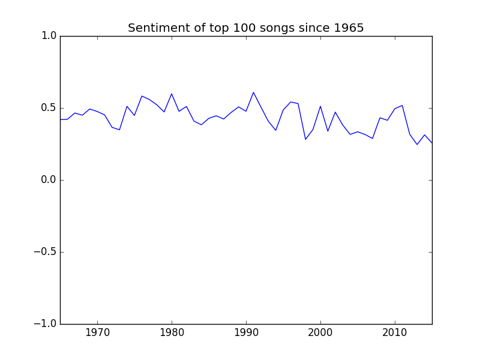

Sentiment analysis of top 100 songs

When I set out on this exploration I was unsure as to what I would find. Or even, to be truthful, what I was looking for. I knew, however, that there was something to discover in the years of music data I found at my finger tips. That is where this story begins.
Music is an almost universal form of communication. It transends language barriers and gives voice to our innermost emotions. Those emotions are ours to share. Which then leads us to the questions at hand. Has music been affected by the seemingly inevitable downward spiral of society and values? Are we drawn to increasingly negative songs because it reflects our own communal emotional state? Or, in opposition, is music an inherently positive medium of communication that optimistically refuses to be weighed down by the tides of time?
In this visualization, I use data collected since 1965 of the top 100 billboard songs of each year. The lyrics are run through a NLTK sentiment analysis model and given a score from -1 to 1 corresponding to the negativity or positivity. An extremely positive song would have a score close to 1, while a very negative song would have a score near -1.
In this graphic on the right - we see a color encoding of the sentiment of each year. Yellow represents 1 and Blue represents -1.

Here in this graphic we see the sentiment scores are translated directly onto the graph as a line. One thing I noticed while playing with the data is that music is generally a positive form of communication. While there are songs that are quite negative (e.g., sad or angry), as a whole music is resilient and happy. In other words, there was never a year that dropped lower than 0.0 which means the top 100 songs - every year - on average are quite positive.
Intersting Insights
Most Negative Year: 2013

2013 was a year of political discomfort and unrest - a large majority of people were beginning to become more involved in world politics and interactions. They, in general, did not like what they saw.
- Feb 8 100,000 people march to demand justice for the atrocities of the Bangladesh Liberation War in Dhaka
- Feb 11 Pope Benedict XVI announces his resignation from February 28, the first pope to resign since 1415
- Feb 12 North Korea confirms it has successfully tested a nuclear device that could be weaponized
- Apr 15 Boston Marathon bombings: 3 people are killed and 183 injured after two explosions near the finish line
- Jul 18 Detroit, Michigan, files for bankruptcy, becoming the largest US municipal bankruptcy ever at $18.5 billion
Most Positive Year: 1991
This year is usually considered the final year of the cold war that lasted for decades. It was a time of celebration and opportunity in a world that was, up to this point, filled with uncertainty. Some important events are:
- Feb 27 Gulf War ends after Iraqi troops retreat and Kuwait is re-taken by the US
- Jun 19 Colombian drug lord Pablo Escobar surrenders to police
- Jul 10 Boris Yeltsin sworn in as 1st elected President of the Russian Federation
- Aug 6 Tim Berners-Lee releases files describing his idea for the World Wide Web. WWW debuts as a publicly available service on the Internet.
- Aug 19 Conservative members of the Communist Party of the Soviet Union attempt to depose Mikhail Gorbachev in a coup d'état
- Aug 21 Conservative coup in the Soviet Union is crushed by popular resistance led by Boris Yeltsin in three days
- Dec 12 Maastricht Treaty signed to create a European Community
- Dec 21 Soviet Union formally dissolves as 11 of 12 republics sign treaty forming Commonwealth of Independent States
Explore
- 1965
- 1966
- 1967
- 1968
- 1969
- 1970
- 1971
- 1972
- 1973
- 1974
- 1975
- 1976
- 1977
- 1978
- 1979
- 1980
- 1981
- 1982
- 1983
- 1984
- 1985
- 1986
- 1987
- 1988
- 1989
- 1990
- 1991
- 1992
- 1993
- 1994
- 1995
- 1996
- 1997
- 1998
- 1999
- 2000
- 2001
- 2002
- 2003
- 2004
- 2005
- 2006
- 2007
- 2008
- 2009
- 2010
- 2011
- 2012
- 2013
- 2014
- 2015
average sentiment: 0.429425
average sentiment: 0.421562
average sentiment: 0.465324
average sentiment: 0.440247
average sentiment: 0.503073
average sentiment: 0.485639
average sentiment: 0.442589
average sentiment: 0.365271
average sentiment: 0.338962
average sentiment: 0.522009
average sentiment: 0.448263
average sentiment: 0.592574
average sentiment: 0.559483
average sentiment: 0.532345
average sentiment: 0.482411
average sentiment: 0.608425
average sentiment: 0.486797
average sentiment: 0.520887
average sentiment: 0.41899
average sentiment: 0.390666
average sentiment: 0.437433
average sentiment: 0.455901
average sentiment: 0.433373
average sentiment: 0.47916
average sentiment: 0.517605
average sentiment: 0.477344
average sentiment: 0.618694
average sentiment: 0.497592
average sentiment: 0.399108
average sentiment: 0.354711
average sentiment: 0.495951
average sentiment: 0.551674
average sentiment: 0.540689
average sentiment: 0.27239
average sentiment: 0.360729
average sentiment: 0.522337
average sentiment: 0.348913
average sentiment: 0.461696
average sentiment: 0.391386
average sentiment: 0.326329
average sentiment: 0.34396
average sentiment: 0.325828
average sentiment: 0.298365
average sentiment: 0.441927
average sentiment: 0.421386
average sentiment: 0.505059
average sentiment: 0.527497
average sentiment: 0.325053
average sentiment: 0.254886
average sentiment: 0.323393
average sentiment: 0.267397
| Rank | Title | Artist | Score |
|---|---|---|---|
| 1 | wooly bully | sam the sham and the pharaohs | -0.9946 |
| 2 | i cant help myself sugar pie honey bunch | four tops | 0.2624 |
| 3 | i cant get no satisfaction | the rolling stones | 0.0 |
| 4 | you were on my mind | we five | -0.9607 |
| 5 | youve lost that lovin feelin | the righteous brothers | 0.9958 |
| 6 | downtown | petula clark | 0.9249 |
| 7 | help | the beatles | 0.9937 |
| 8 | cant you hear my heart beat | hermans hermits | 0.9885 |
| 9 | crying in the chapel | elvis presley | 0.9911 |
| 10 | my girl | the temptations | 0.95 |
| 11 | help me rhonda | the beach boys | 0.9997 |
| 12 | king of the road | roger miller | -0.9817 |
| 13 | the birds and the bees | jewel akens | 0.9643 |
| 14 | hold me thrill me kiss me | mel carter | 0.997 |
| 15 | shotgun | junior walker the all stars | -0.9559 |
| 16 | i got you babe | sonny cher | 0.9617 |
| 17 | this diamond ring | gary lewis the playboys | 0.9975 |
| 18 | the in crowd | ramsey lewis trio | 0.0 |
| 19 | mrs brown youve got a lovely daughter | hermans hermits | 0.9786 |
| 20 | stop in the name of love | the supremes | 0.9963 |
| 21 | unchained melody | the righteous brothers | 0.9894 |
| 22 | silhouettes | hermans hermits | 0.8829 |
| 23 | ill never find another you | the seekers | -0.3818 |
| 24 | cara mia | jay and the americans | -0.9761 |
| 25 | mr tambourine man | the byrds | 0.865 |
| 26 | cast your fate to the wind | sounds orchestral | 0.765 |
| 27 | yes im ready | barbara mason | 0.9996 |
| 28 | whats new pussycat | tom jones | 0.9919 |
| 29 | eve of destruction | barry mcguire | -0.9929 |
| 30 | hang on sloopy | the mccoys | 0.9821 |
| 31 | ticket to ride | the beatles | -0.9919 |
| 32 | red roses for a blue lady | bert kaempfert | 0.9735 |
| 33 | papas got a brand new bag | james brown | 0.8972 |
| 34 | game of love | wayne fontana the mindbenders | 0.9992 |
| 35 | the name game | shirley ellis | 0.9089 |
| 36 | i know a place | petula clark | 0.9607 |
| 37 | back in my arms again | the supremes | 0.9988 |
| 38 | baby im yours | barbara lewis | -0.7579 |
| 39 | the jolly green giant | the kingsmen | 0.9117 |
| 40 | hush hush sweet charlotte | patti page | 0.9912 |
| 41 | like a rolling stone | bob dylan | 0.7919 |
| 42 | im telling you now | freddie and the dreamers | 0.0 |
| 43 | ferry cross the mersey | gerry and the pacemakers | 0.8625 |
| 44 | just once in my life | the righteous brothers | 0.9631 |
| 45 | the seventh son | johnny rivers | 0.0 |
| 46 | im henery the eighth i am | hermans hermits | 0.0 |
| 47 | a walk in the black forest | horst jankowski | 0.9912 |
| 48 | for your love | the yardbirds | 0.999 |
| 49 | california girls | the beach boys | 0.9906 |
| 50 | go now | the moody blues | 0.9723 |
| 51 | goldfinger | shirley bassey | 0.889 |
| 52 | down in the boondocks | billy joe royal | 0.9876 |
| 53 | baby the rain must fall | glenn yarbrough | -0.7741 |
| 54 | catch us if you can | the dave clark five | 0.0679 |
| 55 | eight days a week | the beatles | 0.9994 |
| 56 | just a little | the beau brummels | -0.9767 |
| 57 | you turn me on | ian whitcomb | -0.3818 |
| 58 | ill be doggone | marvin gaye | -0.8972 |
| 59 | save your heart for me | gary lewis the playboys | 0.9943 |
| 60 | tired of waiting for you | the kinks | -0.9942 |
| 61 | count me in | gary lewis the playboys | 0.8689 |
| 62 | all day and all of the night | the kinks | 0.8481 |
| 63 | what the world needs now is love | jackie deshannon | 0.9993 |
| 64 | its not unusual | tom jones | 0.9215 |
| 65 | shes about a mover | sir douglas quintet | 0.9928 |
| 66 | shake | sam cooke | -0.8053 |
| 67 | wonderful world | hermans hermits | 0.9978 |
| 68 | nowhere to run | martha and the vandellas | -0.9729 |
| 69 | heart full of soul | the yardbirds | -0.1533 |
| 70 | love potion no 9 | the searchers | 0.9636 |
| 71 | laurie strange things happen | dickey lee | -0.6591 |
| 72 | baby dont go | sonny cher | 0.5033 |
| 73 | it aint me babe | the turtles | 0.988 |
| 74 | tell her no | the zombies | -0.9918 |
| 75 | i go to pieces | peter and gordon | -0.8686 |
| 76 | red roses for a blue lady | vic dana | 0.9735 |
| 77 | dont just stand there | patty duke | 0.9327 |
| 78 | the tracks of my tears | the miracles | 0.9908 |
| 79 | too many rivers | brenda lee | 0.9382 |
| 80 | i like it like that | the dave clark five | 0.9769 |
| 81 | little things | bobby goldsboro | 0.9955 |
| 82 | true love ways | peter and gordon | 0.9955 |
| 83 | its the same old song | four tops | 0.9814 |
| 84 | youve got your troubles | the fortunes | 0.0 |
| 85 | hold what youve got | joe tex | 0.9406 |
| 86 | we gotta get out of this place | the animals | 0.9942 |
| 87 | laugh laugh | the beau brummels | 0.9973 |
| 88 | the last time | the rolling stones | 0.9407 |
| 89 | do you believe in magic | the lovin spoonful | 0.9844 |
| 90 | all i really want to do | cher | 0.9827 |
| 91 | take me back | little anthony and the imperials | -0.8968 |
| 92 | i want candy | the strangeloves | -0.5465 |
| 93 | ooo baby baby | the miracles | -0.9703 |
| 94 | laugh at me | sonny bono | -0.7446 |
| 95 | treat her right | roy head | 0.9821 |
| 96 | the race is on | jack jones | 0.9218 |
| 97 | im a fool | dino desi billy | 0.0 |
| 98 | the boy from new york city | the ad libs | 0.9951 |
| 99 | keep searchin well follow the sun | del shannon | -0.6637 |
| 100 | how sweet it is to be loved by you | marvin gaye | 0.9988 |
| Rank | Title | Artist | Score |
|---|---|---|---|
| 1 | ballad of the green berets | ssgt barry sadler | 0.0 |
| 2 | cherish | the association | 0.9875 |
| 3 | youre my soul and inspiration | the righteous brothers | 0.9912 |
| 4 | reach out ill be there | the four tops | 0.9832 |
| 5 | 96 tears | the mysterians | -0.9988 |
| 6 | last train to clarksville | the monkees | -0.9953 |
| 7 | monday monday | the mamas the papas | -0.1782 |
| 8 | you cant hurry love | the supremes | 0.999 |
| 9 | poor side of town | johnny rivers | 0.7594 |
| 10 | california dreamin | the mamas the papas | 0.8689 |
| 11 | summer in the city | lovin spoonful | -0.8195 |
| 12 | born free | roger williams | 0.9888 |
| 13 | these boots are made for walkin | nancy sinatra | 0.8248 |
| 14 | what becomes of the brokenhearted | jimmy ruffin | 0.8116 |
| 15 | strangers in the night | frank sinatra | 0.9895 |
| 16 | we can work it out | the beatles | -0.8126 |
| 17 | good lovin | the young rascals | 0.9991 |
| 18 | winchester cathedral | new vaudeville band | 0.0 |
| 19 | hanky panky | tommy james and the shondells | 0.3535 |
| 20 | when a man loves a woman | percy sledge | 0.9907 |
| 21 | paint it black | the rolling stones | 0.6902 |
| 22 | my love | petula clark | 0.9987 |
| 23 | lightnin strikes | lou christie | -0.9876 |
| 24 | wild thing | the troggs | 0.936 |
| 25 | kicks | paul revere the raiders | 0.8959 |
| 26 | sunshine superman | donovan | 0.9032 |
| 27 | sunny | bobby hebb | 0.9987 |
| 28 | paperback writer | the beatles | 0.7135 |
| 29 | see you in september | the happenings | -0.922 |
| 30 | you keep me hangin on | the supremes | 0.9854 |
| 31 | lil red riding hood | sam the sham and the pharaohs | 0.8271 |
| 32 | devil with a blue dress ongood golly miss molly | mitch ryder the detroit wheels | 0.0 |
| 33 | good vibrations | the beach boys | 0.9991 |
| 34 | a groovy kind of love | the mindbenders | 0.9713 |
| 35 | you dont have to say you love me | dusty springfield | 0.9697 |
| 36 | cool jerk | the capitols | 0.85 |
| 37 | born a woman | sandy posey | -0.6486 |
| 38 | red rubber ball | the cyrkle | -0.6741 |
| 39 | baby | carla thomas | 0.9646 |
| 40 | walk away renee | the left banke | -0.9704 |
| 41 | daydream | the lovin spoonful | 0.6336 |
| 42 | time wont let me | the outsiders | 0.886 |
| 43 | hooray for hazel | tommy roe | 0.9794 |
| 44 | sweet pea | tommy roe | 0.9974 |
| 45 | bus stop | the hollies | 0.9809 |
| 46 | im your puppet | james bobby purify | 0.9613 |
| 47 | im so lonesome i could cry | bj thomas | -0.9794 |
| 48 | aint too proud to beg | the temptations | 0.9983 |
| 49 | dirty water | the standells | 0.986 |
| 50 | elusive butterfly | bob lind | 0.9616 |
| 51 | i am a rock | simon garfunkel | -0.7972 |
| 52 | crying time | ray charles | 0.6927 |
| 53 | secret agent man | johnny rivers | 0.3182 |
| 54 | the sound of silence | simon garfunkel | -0.8085 |
| 55 | lady godiva | peter and gordon | 0.9169 |
| 56 | homeward bound | simon garfunkel | 0.9468 |
| 57 | did you ever have to make up your mind | the lovin spoonful | 0.56 |
| 58 | barefootin | robert parker | 0.1531 |
| 59 | uptight everythings alright | stevie wonder | 0.9747 |
| 60 | bang bang my baby shot me down | cher | -0.5994 |
| 61 | sloop john b | the beach boys | -0.9418 |
| 62 | 19th nervous breakdown | the rolling stones | -0.9892 |
| 63 | wipe out | the surfaris | 0.7351 |
| 64 | psychotic reaction | count five | -0.947 |
| 65 | beauty is only skin deep | the temptations | 0.992 |
| 66 | no matter what shape your stomachs in | the tbones | 0.0 |
| 67 | just like me | paul revere the raiders | 0.9891 |
| 68 | love makes the world go round | deon jackson | 0.9946 |
| 69 | the pied piper | crispian st peters | 0.6569 |
| 70 | coming on strong | brenda lee | 0.8658 |
| 71 | somewhere my love | ray conniff singers | 0.9876 |
| 72 | almost persuaded | david houston | 0.836 |
| 73 | if i were a carpenter | bobby darin | 0.872 |
| 74 | dont mess with bill | the marvelettes | 0.3027 |
| 75 | cherry cherry | neil diamond | 0.9629 |
| 76 | working in the coal mine | lee dorsey | -0.9684 |
| 77 | message to michael | dionne warwick | 0.9618 |
| 78 | love is a hurtin thing | lou rawls | 0.0 |
| 79 | barbara ann | the beach boys | 0.8481 |
| 80 | gloria | shadows of knight | 0.0 |
| 81 | my world is empty without you | the supremes | -0.6932 |
| 82 | rainy day women 12 35 | bob dylan | 0.9426 |
| 83 | guantanamera | the sandpipers | 0.0 |
| 84 | land of 1000 dances | wilson pickett | 0.9886 |
| 85 | oh how happy | the shades of blue | 0.9986 |
| 86 | woman | peter and gordon | 0.9509 |
| 87 | you baby | the turtles | 0.9837 |
| 88 | five oclock world | the vogues | 0.1779 |
| 89 | black is black | los bravos | 0.9657 |
| 90 | nowhere man | the beatles | -0.8731 |
| 91 | dandy | hermans hermits | 0.2668 |
| 92 | baby scratch my back | slim harpo | 0.8168 |
| 93 | shes just my style | gary lewis the playboys | 0.0 |
| 94 | the more i see you | chris montez | -0.3116 |
| 95 | i fought the law | bobby fuller four | 0.9204 |
| 96 | yellow submarine | the beatles | 0.9552 |
| 97 | hungry | paul revere the raiders | 0.9974 |
| 98 | zorba the greek | herb alpert and the tijuana brass | 0.0 |
| 99 | shapes of things | the yardbirds | 0.9054 |
| 100 | 6345789 soulsville usa | wilson pickett | 0.0 |
| Rank | Title | Artist | Score |
|---|---|---|---|
| 1 | to sir with love | lulu | 0.953 |
| 2 | the letter | the box tops | -0.8339 |
| 3 | ode to billie joe | bobbie gentry | 0.7003 |
| 4 | windy | the association | -0.6808 |
| 5 | im a believer | the monkees | 0.9882 |
| 6 | light my fire | the doors | 0.9607 |
| 7 | somethin stupid | frank nancy sinatra | 0.5346 |
| 8 | happy together | the turtles | 0.9974 |
| 9 | groovin | the young rascals | 0.0181 |
| 10 | cant take my eyes off you | frankie valli | 0.9992 |
| 11 | little bit o soul | the music explosion | 0.7668 |
| 12 | i think were alone now | tommy james and the shondells | 0.9726 |
| 13 | respect | aretha franklin | 0.9641 |
| 14 | i was made to love her | stevie wonder | 0.9989 |
| 15 | come back when you grow up | bobby vee | 0.6821 |
| 16 | kind of a drag | the buckinghams | 0.0 |
| 17 | sweet soul music | arthur conley | 0.9875 |
| 18 | expressway to your heart | the soul survivors | 0.3634 |
| 19 | soul man | sam dave | 0.9642 |
| 20 | never my love | the association | -0.9974 |
| 21 | apples peaches pumpkin pie | jay the techniques | 0.9568 |
| 22 | come on down to my boat | every mothers son | 0.5986 |
| 23 | incense and peppermints | strawberry alarm clock | 0.9859 |
| 24 | ruby tuesday | the rolling stones | 0.468 |
| 25 | it must be him | vikki carr | -0.2661 |
| 26 | love is here and now youre gone | the supremes | 0.9987 |
| 27 | for what its worth | buffalo springfield | -0.9515 |
| 28 | gimme little sign | brenton wood | 0.9695 |
| 29 | the happening | the supremes | 0.9794 |
| 30 | all you need is love | the beatles | 0.9998 |
| 31 | release me | engelbert humperdinck | -0.9862 |
| 32 | your precious love | marvin gaye tammi terrell | 0.9981 |
| 33 | somebody to love | jefferson airplane | 0.9986 |
| 34 | get on up | the esquires | 0.4215 |
| 35 | brown eyed girl | van morrison | 0.743 |
| 36 | jimmy mack | martha and the vandellas | 0.9924 |
| 37 | i got rhythm | the happenings | -0.8628 |
| 38 | a whiter shade of pale | procol harum | 0.3818 |
| 39 | dont you care | the buckinghams | -0.981 |
| 40 | then you can tell me goodbye | the casinos | 0.9611 |
| 41 | reflections | the supremes | 0.9578 |
| 42 | on a carousel | the hollies | -0.8225 |
| 43 | please love me forever | bobby vinton | 0.9726 |
| 44 | alfie | dionne warwick | 0.9778 |
| 45 | silence is golden | the tremeloes | -0.1717 |
| 46 | my cup runneth over | ed ames | 0.9719 |
| 47 | up up and away | the 5th dimension | 0.9973 |
| 48 | san francisco be sure to wear flowers in your hair | scott mckenzie | 0.8225 |
| 49 | the rain the park other things | the cowsills | 0.9974 |
| 50 | theres a kind of hush | hermans hermits | 0.9862 |
| 51 | mercy mercy mercy | the buckinghams | 0.9744 |
| 52 | this is my song | petula clark | 0.974 |
| 53 | your love keeps lifting me higher and higher | jackie wilson | 0.999 |
| 54 | ive been lonely too long | the young rascals | -0.9945 |
| 55 | penny lane | the beatles | 0.9191 |
| 56 | youre my everything | the temptations | 0.9955 |
| 57 | georgy girl | the seekers | 0.7753 |
| 58 | western union | five americans | -0.9564 |
| 59 | baby i love you | aretha franklin | 0.9968 |
| 60 | a little bit me a little bit you | the monkees | -0.9736 |
| 61 | california nights | lesley gore | 0.9875 |
| 62 | dedicated to the one i love | the mamas the papas | 0.992 |
| 63 | how can i be sure | the young rascals | 0.9847 |
| 64 | carrie anne | the hollies | 0.9316 |
| 65 | we aint got nothin yet | blues magoos | 0.4004 |
| 66 | friday on my mind | the easybeats | 0.3016 |
| 67 | soul finger | the barkays | 0.0 |
| 68 | gimme some lovin | the spencer davis group | 0.9974 |
| 69 | let it out let it all hang out | the hombres | 0.6583 |
| 70 | lets live for today | the grass roots | 0.9865 |
| 71 | close your eyes | peaches herb | 0.9961 |
| 72 | groovin | booker t the mgs | 0.0 |
| 73 | funky broadway | wilson pickett | 0.2477 |
| 74 | pleasant valley sunday | the monkees | 0.9746 |
| 75 | i never loved a man the way i love you | aretha franklin | -0.9818 |
| 76 | tell it like it is | aaron neville | 0.9347 |
| 77 | cold sweat | james brown | 0.7512 |
| 78 | shed rather be with me | the turtles | 0.993 |
| 79 | 986 | keith | 0.9896 |
| 80 | here we go again | ray charles | -0.926 |
| 81 | white rabbit | jefferson airplane | -0.7579 |
| 82 | bernadette | four tops | 0.9928 |
| 83 | the beat goes on | sonny cher | -0.296 |
| 84 | snoopy vs the red baron | the royal guardsmen | -0.9746 |
| 85 | societys child | janis ian | -0.5994 |
| 86 | girl youll be a woman soon | neil diamond | 0.0 |
| 87 | aint no mountain high enough | marvin gaye tammi terrell | 0.9928 |
| 88 | i take it back | sandy posey | 0.9523 |
| 89 | here comes my baby | the tremeloes | 0.9888 |
| 90 | everlasting love | robert knight | 0.9973 |
| 91 | i dig rock and roll music | peter paul and mary | 0.9822 |
| 92 | little ole man uptight everythings alright | bill cosby | 0.0 |
| 93 | i had too much to dream last night | the electric prunes | 0.9849 |
| 94 | daydream believer | the monkees | 0.9896 |
| 95 | baby i need your lovin | johnny rivers | -0.8862 |
| 96 | mirage | tommy james and the shondells | 0.9704 |
| 97 | green green grass of home | tom jones | 0.9723 |
| 98 | i can see for miles | the who | 0.8028 |
| 99 | dont sleep in the subway | petula clark | -0.9423 |
| 100 | thank the lord for the night time | neil diamond | 0.0 |
| Rank | Title | Artist | Score |
|---|---|---|---|
| 1 | hey jude | the beatles | 0.9831 |
| 2 | love is blue | paul mauriat | 0.0 |
| 3 | honey | bobby goldsboro | 0.9103 |
| 4 | sittin on the dock of the bay | otis redding | 0.2354 |
| 5 | people got to be free | the rascals | 0.9965 |
| 6 | sunshine of your love | cream | 0.9874 |
| 7 | this guys in love with you | herb alpert | 0.997 |
| 8 | the good the bad and the ugly | hugo montenegro | 0.5922 |
| 9 | mrs robinson | simon garfunkel | 0.9958 |
| 10 | tighten up | archie bell the drells | 0.9885 |
| 11 | harper valley pta | jeannie c riley | 0.7768 |
| 12 | little green apples | o c smith | 0.8074 |
| 13 | mony mony | tommy james and the shondells | 0.9994 |
| 14 | hello i love you | the doors | 0.9906 |
| 15 | young girl | gary puckett the union gap | 0.9906 |
| 16 | cry like a baby | the box tops | 0.9317 |
| 17 | stoned soul picnic | the 5th dimension | 0.8176 |
| 18 | grazing in the grass | hugh masekela | 0.9811 |
| 19 | midnight confessions | the grass roots | 0.9759 |
| 20 | dance to the music | sly the family stone | 0.8526 |
| 21 | the horse | cliff nobles | 0.0 |
| 22 | i wish it would rain | the temptations | 0.9854 |
| 23 | lala means i love you | the delfonics | 0.0 |
| 24 | turn around look at me | the vogues | 0.9411 |
| 25 | judy in disguise with glasses | john fred his playboy band | 0.2732 |
| 26 | spooky | classics iv | 0.9398 |
| 27 | love child | the supremes | -0.995 |
| 28 | angel of the morning | merrilee rush | -0.8943 |
| 29 | the ballad of bonnie and clyde | georgie fame | -0.8316 |
| 30 | those were the days | mary hopkin | 0.9756 |
| 31 | born to be wild | steppenwolf | 0.9846 |
| 32 | cowboys to girls | the intruders | 0.9871 |
| 33 | simon says | 1910 fruitgum company | 0.9778 |
| 34 | lady willpower | gary puckett the union gap | -0.8943 |
| 35 | a beautiful morning | the rascals | 0.9698 |
| 36 | the look of love | sergio mendes | 0.9939 |
| 37 | hold me tight | johnny nash | -0.9556 |
| 38 | yummy yummy yummy | ohio express | 0.9994 |
| 39 | fire | the crazy world of arthur brown | -0.992 |
| 40 | love is all around | the troggs | 0.9735 |
| 41 | playboy | gene debbe | 0.964 |
| 42 | theme from valley of the dolls | dionne warwick | 0.6705 |
| 43 | classical gas | mason williams | 0.0 |
| 44 | slip away | clarence carter | 0.9854 |
| 45 | im a girl watcher | the okaysions | 0.0 |
| 46 | sweet sweet baby since youve been gone | aretha franklin | 0.9933 |
| 47 | green tambourine | the lemon pipers | 0.6369 |
| 48 | 1 2 3 red light | 1910 fruitgum company | -0.4825 |
| 49 | reach out of the darkness | friend lover | 0.9608 |
| 50 | jumpin jack flash | the rolling stones | -0.8402 |
| 51 | macarthur park | richard harris | 0.9881 |
| 52 | light my fire | jose feliciano | -0.9927 |
| 53 | i love you | people | 0.9996 |
| 54 | take time to know her | percy sledge | 0.9808 |
| 55 | pictures of matchstick men | status quo | -0.8634 |
| 56 | summertime blues | blue cheer | 0.9252 |
| 57 | aint nothing like the real thing | marvin gaye tammi terrell | 0.9912 |
| 58 | i got the feelin | james brown | -0.2023 |
| 59 | ive gotta get a message to you | the bee gees | -0.2871 |
| 60 | lady madonna | the beatles | 0.4215 |
| 61 | hurdy gurdy man | donovan | 0.9186 |
| 62 | magic carpet ride | steppenwolf | 0.9552 |
| 63 | bottle of wine | the fireballs | -0.94 |
| 64 | stay in my corner | the dells | 0.0 |
| 65 | soul serenade | willie mitchell | 0.0 |
| 66 | delilah | tom jones | 0.9765 |
| 67 | nobody but me | the human beinz | -0.9981 |
| 68 | i thank you | sam and dave | 0.9968 |
| 69 | the fool on the hill | sergio mendes | -0.8957 |
| 70 | sky pilot | the animals | -0.539 |
| 71 | indian lake | the cowsills | 0.7906 |
| 72 | i wonder what shes doing tonight | tommy boyce bobby hart | 0.0 |
| 73 | over you | gary puckett the union gap | -0.9386 |
| 74 | goin out of my headcant take my eyes off you | the lettermen | 0.0 |
| 75 | shoobedoobedoodaday | stevie wonder | 0.0 |
| 76 | the unicorn | the irish rovers | 0.5259 |
| 77 | you keep me hangin on | vanilla fudge | 0.9413 |
| 78 | revolution | the beatles | 0.9928 |
| 79 | woman woman | gary puckett the union gap | -0.9836 |
| 80 | elenore | the turtles | 0.987 |
| 81 | white room | cream | -0.9169 |
| 82 | youre all i need to get by | marvin gaye tammi terrell | 0.0 |
| 83 | baby now that ive found you | the foundations | 0.0 |
| 84 | sweet inspiration | sweet inspirations | 0.999 |
| 85 | if you can want | the miracles | 0.3732 |
| 86 | cab driver | the mills brothers | 0.9817 |
| 87 | time has come today | the chambers brothers | 0.9029 |
| 88 | do you know the way to san jose | dionne warwick | 0.9466 |
| 89 | scarborough faircanticle | simon garfunkel | 0.9669 |
| 90 | say it loud im black and im proud | james brown | 0.9982 |
| 91 | the mighty quinn | manfred mann | 0.969 |
| 92 | here comes the judge | shorty long | 0.9408 |
| 93 | i say a little prayer | aretha franklin | 0.9863 |
| 94 | think | aretha franklin | 0.9924 |
| 95 | sealed with a kiss | gary lewis and the playboys | 0.9485 |
| 96 | piece of my heart | big brother and the holding company | 0.9951 |
| 97 | suzie q | creedence clearwater revival | 0.99 |
| 98 | bend me shape me | the american breed | 0.9694 |
| 99 | hey western union man | jerry butler | 0.0772 |
| 100 | never give you up | jerry butler | -0.9827 |
| Rank | Title | Artist | Score |
|---|---|---|---|
| 1 | sugar sugar | the archies | 0.9929 |
| 2 | aquariuslet the sunshine in | the 5th dimension | 0.9987 |
| 3 | i cant get next to you | the temptations | -0.5927 |
| 4 | honky tonk women | the rolling stones | -0.4391 |
| 5 | everyday people | sly the family stone | -0.5647 |
| 6 | dizzy | tommy roe | -0.0897 |
| 7 | hot fun in the summertime | sly the family stone | 0.9926 |
| 8 | ill never fall in love again | tom jones | 0.9977 |
| 9 | build me up buttercup | the foundations | -0.9814 |
| 10 | crimson and clover | tommy james and the shondells | 0.9776 |
| 11 | one | three dog night | -0.9966 |
| 12 | crystal blue persuasion | tommy james and the shondells | 0.9776 |
| 13 | hair | the cowsills | 0.9895 |
| 14 | too busy thinking about my baby | marvin gaye | 0.9448 |
| 15 | love theme from romeo and juliet | henry mancini | 0.9117 |
| 16 | get together | the youngbloods | 0.9775 |
| 17 | grazing in the grass | the friends of distinction | 0.9247 |
| 18 | suspicious minds | elvis presley | 0.571 |
| 19 | proud mary | creedence clearwater revival | 0.9719 |
| 20 | what does it take to win your love | jr walker the all stars | 0.0 |
| 21 | its your thing | the isley brothers | 0.8879 |
| 22 | sweet caroline | neil diamond | 0.988 |
| 23 | jean | oliver | 0.5038 |
| 24 | bad moon rising | creedence clearwater revival | -0.9783 |
| 25 | get back | the beatles with billy preston | 0.5187 |
| 26 | in the year 2525 | zager evans | -0.6428 |
| 27 | spinning wheel | blood sweat tears | -0.8834 |
| 28 | baby i love you | andy kim | 0.9963 |
| 29 | going in circles | the friends of distinction | 0.9413 |
| 30 | hurt so bad | the lettermen | -0.9969 |
| 31 | green river | creedence clearwater revival | 0.9118 |
| 32 | my cherie amour | stevie wonder | 0.9686 |
| 33 | easy to be hard | three dog night | 0.9805 |
| 34 | baby its you | smith | 0.9359 |
| 35 | in the ghetto | elvis presley | -0.9615 |
| 36 | a boy named sue | johnny cash | -0.9802 |
| 37 | baby baby dont cry | the miracles | 0.0 |
| 38 | only the strong survive | jerry butler | 0.9914 |
| 39 | time of the season | the zombies | 0.9837 |
| 40 | wedding bell blues | the 5th dimension | 0.9904 |
| 41 | little woman | bobby sherman | 0.2706 |
| 42 | love can make you happy | mercy | 0.9984 |
| 43 | good morning starshine | oliver | 0.9607 |
| 44 | these eyes | the guess who | 0.9964 |
| 45 | youve made me so very happy | blood sweat tears | 0.9983 |
| 46 | put a little love in your heart | jackie deshannon | 0.9974 |
| 47 | do your thing | the watts 103rd street rhythm band | 0.9423 |
| 48 | id wait a million years | the grass roots | -0.6495 |
| 49 | touch me | the doors | 0.9904 |
| 50 | more today than yesterday | spiral starecase | 0.9921 |
| 51 | ive gotta be me | sammy davis jr | 0.9773 |
| 52 | lay lady lay | bob dylan | 0.3403 |
| 53 | atlantis | donovan | 0.9287 |
| 54 | traces | classics iv | 0.9756 |
| 55 | its getting better | mama cass elliot | 0.9969 |
| 56 | this magic moment | jay and the americans | 0.7553 |
| 57 | runaway child running wild | the temptations | -0.9849 |
| 58 | hawaii fiveo | the ventures | 0.0 |
| 59 | galveston | glen campbell | -0.4019 |
| 60 | im gonna make you mine | lou christie | -0.9735 |
| 61 | gitarzan | ray stevens | 0.986 |
| 62 | can i change my mind | tyrone davis | 0.992 |
| 63 | time is tight | booker t the mgs | 0.0 |
| 64 | this girls in love with you | dionne warwick | 0.997 |
| 65 | color him father | the winstons | 0.9948 |
| 66 | black pearl | checkmates ltd | 0.9953 |
| 67 | indian giver | 1910 fruitgum company | 0.9947 |
| 68 | mother popcorn | james brown | 0.994 |
| 69 | twentyfive miles | edwin starr | 0.0 |
| 70 | things id like to say | new colony six | 0.9938 |
| 71 | when i die | motherlode | 0.9755 |
| 72 | thats the way love is | marvin gaye | 0.9988 |
| 73 | everybodys talkin | harry nilsson | 0.901 |
| 74 | the worst that could happen | johnny maestro the brooklyn bridge | 0.981 |
| 75 | the chokin kind | joe simon | 0.9936 |
| 76 | smile a little smile for me | the flying machine | 0.9937 |
| 77 | polk salad annie | tony joe white | -0.9881 |
| 78 | ruby dont take your love to town | kenny rogers the first edition | 0.0 |
| 79 | games people play | joe south | -0.835 |
| 80 | you showed me | the turtles | 0.9956 |
| 81 | tracy | the cuff links | 0.0 |
| 82 | oh what a night | the dells | 0.9973 |
| 83 | something | the beatles | 0.9421 |
| 84 | this girl is a woman now | gary puckett the union gap | 0.9325 |
| 85 | come together | the beatles | 0.2809 |
| 86 | ramblin gamblin man | bob seger system | 0.4597 |
| 87 | im gonna make you love me | the supremes the temptations | 0.0 |
| 88 | i heard it through the grapevine | marvin gaye | 0.9854 |
| 89 | gimme gimme good lovin | crazy elephant | 0.9896 |
| 90 | hang em high | booker t the mgs | 0.0 |
| 91 | your good thing is about to end | lou rawls | 0.0 |
| 92 | baby im for real | the originals | 0.0 |
| 93 | oh happy day | edwin hawkins singers | 0.9965 |
| 94 | love me tonight | tom jones | 0.9991 |
| 95 | mr sun mr moon | paul revere the raiders | 0.7717 |
| 96 | laughing | the guess who | 0.9989 |
| 97 | my whole world ended the moment you left me | david ruffin | 0.1863 |
| 98 | soul deep | the box tops | 0.995 |
| 99 | hooked on a feeling | bj thomas | 0.9928 |
| 100 | sweet cream ladies | the box tops | 0.9857 |
| Rank | Title | Artist | Score |
|---|---|---|---|
| 1 | bridge over troubled water | simon garfunkel | -0.9697 |
| 2 | they long to be close to you | the carpenters | 0.9694 |
| 3 | american woman | the guess who | -0.8624 |
| 4 | raindrops keep fallin on my head | bj thomas | 0.9193 |
| 5 | war | edwin starr | -0.9735 |
| 6 | aint no mountain high enough | diana ross | -0.9634 |
| 7 | ill be there | the jackson 5 | 0.0 |
| 8 | get ready | rare earth | 0.9984 |
| 9 | let it be | the beatles | 0.9747 |
| 10 | band of gold | freda payne | 0.99 |
| 11 | mama told me not to come | three dog night | 0.9916 |
| 12 | everything is beautiful | ray stevens | 0.9953 |
| 13 | make it with you | bread | 0.9746 |
| 14 | hitchin a ride | vanity fare | -0.0289 |
| 15 | abc | the jackson 5 | 0.9988 |
| 16 | the love you save | the jackson 5 | 0.9989 |
| 17 | cracklin rosie | neil diamond | -0.9978 |
| 18 | candida | dawn | 0.9749 |
| 19 | thank you falettinme be mice elf agin | sly the family stone | 0.9953 |
| 20 | spill the wine | eric burdon war | -0.8847 |
| 21 | ooh child | five stairsteps | 0.99 |
| 22 | spirit in the sky | norman greenbaum | -0.8957 |
| 23 | lay down candles in the rain | melanie | 0.9633 |
| 24 | ball of confusion thats what the world is today | the temptations | 0.9574 |
| 25 | love on a twoway street | the moments | 0.0 |
| 26 | which way you goin billy | the poppy family | 0.6889 |
| 27 | all right now | free | 0.9817 |
| 28 | i want you back | the jackson 5 | 0.9639 |
| 29 | julie do ya love me | bobby sherman | 0.9819 |
| 30 | greeneyed lady | sugarloaf | 0.9874 |
| 31 | signed sealed delivered im yours | stevie wonder | 0.9012 |
| 32 | ride captain ride | blues image | 0.9877 |
| 33 | venus | shocking blue | 0.9571 |
| 34 | instant karma | john lennon | 0.9919 |
| 35 | patches | clarence carter | 0.9601 |
| 36 | lookin out my back door | creedence clearwater revival | -0.3818 |
| 37 | rainy night in georgia | brook benton | -0.5301 |
| 38 | somethings burning | kenny rogers the first edition | 0.0 |
| 39 | give me just a little more time | chairmen of the board | 0.9993 |
| 40 | love grows where my rosemary goes | edison lighthouse | 0.9983 |
| 41 | the long and winding road | the beatles | 0.7603 |
| 42 | snowbird | anne murray | 0.6249 |
| 43 | reflections of my life | marmalade | -0.9552 |
| 44 | hey there lonely girl | eddie holman | -0.9836 |
| 45 | the rapper | the jaggerz | -0.7351 |
| 46 | he aint heavy hes my brother | the hollies | 0.5719 |
| 47 | tighter tighter | alive n kickin | 0.9802 |
| 48 | come and get it | badfinger | 0.9744 |
| 49 | cecilia | simon garfunkel | 0.9923 |
| 50 | love land | charles wright the watts 103rd street rhythm band | 0.9993 |
| 51 | turn back the hands of time | tyrone davis | 0.9941 |
| 52 | lola | the kinks | 0.9941 |
| 53 | in the summertime | mungo jerry | 0.9958 |
| 54 | indiana wants me | r dean taylor | 0.9415 |
| 55 | i know im losing you | rare earth | -0.83 |
| 56 | easy come easy go | bobby sherman | 0.9764 |
| 57 | express yourself | charles wright the watts 103rd street rhythm band | 0.9015 |
| 58 | still water love | the four tops | 0.8876 |
| 59 | make me smile | chicago | 0.9917 |
| 60 | the house of the rising sun | frijid pink | -0.9468 |
| 61 | 25 or 6 to 4 | chicago | 0.7096 |
| 62 | my baby loves lovin | white plains | 0.9987 |
| 63 | love or let me be lonely | the friends of distinction | 0.9908 |
| 64 | united we stand | the brotherhood of man | 0.9792 |
| 65 | weve only just begun | the carpenters | 0.9744 |
| 66 | arizona | mark lindsay | 0.1027 |
| 67 | fire and rain | james taylor | 0.2387 |
| 68 | groovy situation | gene chandler | 0.9838 |
| 69 | evil ways | santana | -0.6597 |
| 70 | no time | the guess who | -0.9989 |
| 71 | didnt i blow your mind this time | the delfonics | 0.9512 |
| 72 | the wonder of you | elvis presley | 0.9705 |
| 73 | up around the bend | creedence clearwater revival | 0.9231 |
| 74 | if you let me make love to you then why cant i touch you | ronnie dyson | 0.9841 |
| 75 | i just cant help believing | bj thomas | -0.2891 |
| 76 | its a shame | the spinners | -0.9989 |
| 77 | for the love of him | bobbi martin | 0.9967 |
| 78 | mississippi queen | mountain | 0.9325 |
| 79 | i want to take you higher | ike tina turner | 0.936 |
| 80 | the letter | joe cocker | -0.9307 |
| 81 | ma belle amie | tee set | 0.9935 |
| 82 | the bells | the originals | 0.0 |
| 83 | yellow river | christie | 0.8613 |
| 84 | somebodys been sleeping | 100 proof aged in soul | 0.0 |
| 85 | vehicle | the ides of march | 0.9993 |
| 86 | gimme dat ding | the pipkins | -0.2263 |
| 87 | lay a little lovin on me | robin mcnamara | 0.9894 |
| 88 | up the ladder to the roof | the supremes | 0.9937 |
| 89 | travelin band | creedence clearwater revival | 0.9917 |
| 90 | come saturday morning | the sandpipers | 0.9912 |
| 91 | psychedelic shack | the temptations | 0.9465 |
| 92 | without love there is nothing | tom jones | -0.9683 |
| 93 | are you ready | pacific gas electric | 0.9996 |
| 94 | woodstock | crosby stills nash young | 0.8176 |
| 95 | ill never fall in love again | dionne warwick | 0.8074 |
| 96 | look what theyve done to my song ma | the new seekers | 0.8074 |
| 97 | walk a mile in my shoes | joe south | -0.9615 |
| 98 | the thrill is gone | bb king | 0.994 |
| 99 | its only make believe | glen campbell | 0.9976 |
| 100 | call me | aretha franklin | 0.9965 |
| Rank | Title | Artist | Score |
|---|---|---|---|
| 1 | joy to the world | three dog night | 0.9992 |
| 2 | maggie mayreason to believe | rod stewart | 0.0 |
| 3 | its too latei feel the earth move | carole king | 0.0 |
| 4 | one bad apple | the osmonds | -0.9889 |
| 5 | how can you mend a broken heart | bee gees | -0.9714 |
| 6 | indian reservation the lament of the cherokee reservation indian | paul revere the raiders | 0.0 |
| 7 | go away little girl | donny osmond | 0.9648 |
| 8 | take me home country roads | john denver | 0.719 |
| 9 | just my imagination running away with me | the temptations | 0.9883 |
| 10 | knock three times | tony orlando and dawn | 0.9842 |
| 11 | me and bobby mcgee | janis joplin | 0.9946 |
| 12 | tired of being alone | al green | 0.9495 |
| 13 | want ads | honey cone | 0.9854 |
| 14 | smiling faces sometimes | the undisputed truth | 0.9889 |
| 15 | treat her like a lady | cornelius brothers sister rose | 0.9995 |
| 16 | youve got a friend | james taylor | 0.9463 |
| 17 | mr big stuff | jean knight | 0.9783 |
| 18 | brown sugar | the rolling stones | 0.9854 |
| 19 | do you know what i mean | lee michaels | 0.9909 |
| 20 | the night they drove old dixie down | joan baez | 0.8438 |
| 21 | whats going on | marvin gaye | -0.8421 |
| 22 | uncle albertadmiral halsey | paul linda mccartney | 0.8669 |
| 23 | aint no sunshine | bill withers | -0.7962 |
| 24 | signs | five man electrical band | 0.8979 |
| 25 | shes a lady | tom jones | 0.9957 |
| 26 | superstar | murray head the trindad singers | 0.0 |
| 27 | ive found someone of my own | the free movement | 0.0 |
| 28 | amos moses | jerry reed | 0.9329 |
| 29 | temptation eyes | the grass roots | 0.9984 |
| 30 | superstar | the carpenters | 0.9778 |
| 31 | my sweet lord | george harrison | 0.9992 |
| 32 | sweet and innocent | donny osmond | 0.9995 |
| 33 | put your hand in the hand | ocean | 0.9127 |
| 34 | chickaboom dont ya jes love it | daddy dewdrop | 0.0 |
| 35 | for all we know | the carpenters | 0.9565 |
| 36 | help me make it through the night | sammi smith | -0.9239 |
| 37 | rainy days and mondays | the carpenters | 0.9605 |
| 38 | if you could read my mind | gordon lightfoot | 0.9823 |
| 39 | gypsys tramps thieves | cher | -0.9862 |
| 40 | never can say goodbye | the jackson 5 | -0.9883 |
| 41 | rose garden | lynn anderson | 0.9967 |
| 42 | dont pull your love | hamilton joe frank reynolds | -0.9167 |
| 43 | it dont come easy | ringo starr | 0.9457 |
| 44 | mr bojangles | nitty gritty dirt band | 0.0 |
| 45 | i love you for all seasons | the fuzz | 0.9964 |
| 46 | whatcha see is whatcha get | the dramatics | 0.6542 |
| 47 | thats the way ive always heard it should be | carly simon | 0.9781 |
| 48 | if you really love me | stevie wonder | 0.9962 |
| 49 | spanish harlem | aretha franklin | -0.765 |
| 50 | i dont know how to love him | helen reddy | 0.9615 |
| 51 | yoyo | the osmonds | 0.999 |
| 52 | bridge over troubled water | aretha franklin | 0.9904 |
| 53 | doesnt somebody want to be wanted | the partridge family | 0.9884 |
| 54 | draggin the line | tommy james | 0.9958 |
| 55 | proud mary | ike tina turner | 0.9694 |
| 56 | beginningscolour my world | chicago | 0.0 |
| 57 | stay awhile | the bells | 0.986 |
| 58 | sweet city woman | the stampeders | 0.9734 |
| 59 | me and you and a dog named boo | lobo | 0.9862 |
| 60 | another dayoh woman oh why | paul mccartney | 0.0 |
| 61 | if | bread | -0.4497 |
| 62 | mercy mercy me the ecology | marvin gaye | 0.0534 |
| 63 | one toke over the line | brewer shipley | 0.9912 |
| 64 | shes not just another woman | 8th day | 0.0 |
| 65 | bring the boys home | freda payne | 0.9938 |
| 66 | i just want to celebrate | rare earth | 0.9986 |
| 67 | never ending song of love | delaney bonnie friends | -0.9881 |
| 68 | easy loving | freddie hart | 0.9771 |
| 69 | liar | three dog night | -0.9703 |
| 70 | stickup | the honey cone | 0.0 |
| 71 | chirpy chirpy cheep cheep | mac and katie kissoon | 0.0 |
| 72 | where do i begin love story | andy williams | 0.9581 |
| 73 | wild world | cat stevens | 0.9936 |
| 74 | when youre hot youre hot | jerry reed | 0.9761 |
| 75 | funky nassau | the beginning of the end | -0.1935 |
| 76 | if not for you | olivia newtonjohn | -0.9317 |
| 77 | groove me | king floyd | 0.9967 |
| 78 | watching scotty grow | bobby goldsboro | 0.8316 |
| 79 | woodstock | matthews southern comfort | 0.5994 |
| 80 | amazing grace | judy collins | 0.9849 |
| 81 | i hear you knocking | dave edmunds | 0.527 |
| 82 | lonely days | bee gees | -0.9504 |
| 83 | here comes that rainy day feeling again | the fortunes | 0.8237 |
| 84 | wont get fooled again | the who | 0.8965 |
| 85 | trapped by a thing called love | denise lasalle | 0.5927 |
| 86 | mamas pearl | the jackson 5 | 0.9978 |
| 87 | timothy | the buoys | -0.8519 |
| 88 | i woke up in love this morning | the partridge family | 0.9971 |
| 89 | theme from shaft | isaac hayes | -0.8225 |
| 90 | if i were your woman | gladys knight the pips | 0.986 |
| 91 | i ami said | neil diamond | 0.0 |
| 92 | the wedding song there is love | paul stookey | 0.996 |
| 93 | dont knock my love | wilson pickett | 0.0 |
| 94 | love her madly | the doors | -0.9979 |
| 95 | here comes the sun | richie havens | 0.9719 |
| 96 | sweet mary | wadsworth mansion | 0.9923 |
| 97 | right on the tip of my tongue | brenda the tabulations | 0.0 |
| 98 | one less bell to answer | the 5th dimension | 0.2685 |
| 99 | riders on the storm | the doors | 0.9509 |
| 100 | somos novios its impossible | perry como | -0.9771 |
| Rank | Title | Artist | Score |
|---|---|---|---|
| 1 | the first time ever i saw your face | roberta flack | 0.9726 |
| 2 | alone again naturally | gilbert osullivan | -0.9789 |
| 3 | american pie | don mclean | -0.9773 |
| 4 | without you | harry nilsson | 0.6889 |
| 5 | the candy man | sammy davis jr | 0.0 |
| 6 | i gotcha | joe tex | 0.9937 |
| 7 | lean on me | bill withers | 0.9949 |
| 8 | baby dont get hooked on me | mac davis | 0.0 |
| 9 | brand new key | melanie | 0.6477 |
| 10 | daddy dont you walk so fast | wayne newton | -0.7262 |
| 11 | lets stay together | al green | 0.9297 |
| 12 | brandy youre a fine girl | looking glass | 0.9975 |
| 13 | oh girl | the chilites | 0.9671 |
| 14 | nice to be with you | gallery | 0.9929 |
| 15 | my dingaling | chuck berry | 0.0 |
| 16 | if loving you is wrong i dont want to be right | luther ingram | 0.9425 |
| 17 | heart of gold | neil young | 0.4767 |
| 18 | betcha by golly wow | the stylistics | 0.9962 |
| 19 | ill take you there | the staple singers | -0.8997 |
| 20 | ben | michael jackson | 0.8477 |
| 21 | the lion sleeps tonight | robert john | 0.974 |
| 22 | outaspace | billy preston | 0.0 |
| 23 | slippin into darkness | war | -0.3612 |
| 24 | long cool woman in a black dress | the hollies | 0.9502 |
| 25 | how do you do | mouth macneal | 0.9913 |
| 26 | song sung blue | neil diamond | -0.7096 |
| 27 | a horse with no name | america | -0.9744 |
| 28 | popcorn | hot butter | 0.0 |
| 29 | everybody plays the fool | the main ingredient | -0.8873 |
| 30 | precious and few | climax | 0.9907 |
| 31 | last night i didnt get to sleep at all | the 5th dimension | -0.9867 |
| 32 | nights in white satin | the moody blues | 0.9982 |
| 33 | go all the way | raspberries | 0.9437 |
| 34 | too late to turn back now | cornelius brothers sister rose | 0.9954 |
| 35 | back stabbers | the ojays | 0.9533 |
| 36 | down by the lazy river | the osmonds | -0.7964 |
| 37 | sunshine | jonathan edwards | -0.9731 |
| 38 | starting all over again | mel and tim | 0.847 |
| 39 | day after day | badfinger | -0.4404 |
| 40 | rocket man | elton john | -0.9847 |
| 41 | rockin robin | michael jackson | 0.9892 |
| 42 | beautiful sunday | daniel boone | 0.9966 |
| 43 | scorpio | dennis coffey | 0.0 |
| 44 | morning has broken | cat stevens | 0.9945 |
| 45 | city of new orleans | arlo guthrie | -0.8422 |
| 46 | garden party | ricky nelson | 0.9749 |
| 47 | i can see clearly now | johnny nash | 0.9652 |
| 48 | burning love | elvis presley | 0.9982 |
| 49 | clean up woman | betty wright | 0.995 |
| 50 | hold your head up | argent | -0.8658 |
| 51 | jungle fever | the chakachas | 0.0 |
| 52 | everything i own | bread | 0.8705 |
| 53 | in the rain | the dramatics | -0.9964 |
| 54 | look what you done for me | al green | 0.9892 |
| 55 | the happiest girl in the whole usa | donna fargo | 0.997 |
| 56 | get it on | t rex | 0.9884 |
| 57 | mother and child reunion | paul simon | -0.3487 |
| 58 | where is the love | roberta flack donny hathaway | 0.9995 |
| 59 | im still in love with you | al green | 0.999 |
| 60 | layla | derek and the dominos | 0.5845 |
| 61 | day dreaming | aretha franklin | 0.5248 |
| 62 | the way of love | cher | 0.9945 |
| 63 | black and white | three dog night | 0.9531 |
| 64 | sylvias mother | dr hook the medicine show | 0.0 |
| 65 | hurting each other | the carpenters | -0.2023 |
| 66 | coconut | harry nilsson | 0.9567 |
| 67 | puppy love | donny osmond | 0.9609 |
| 68 | you dont mess around with jim | jim croce | 0.9012 |
| 69 | hot rod lincoln | commander cody and his lost planet airmen | 0.9853 |
| 70 | a cowboys work is never done | sonny cher | 0.0 |
| 71 | joy | apollo 100 | 0.0 |
| 72 | anticipation | carly simon | 0.7227 |
| 73 | never been to spain | three dog night | 0.9858 |
| 74 | kiss an angel good mornin | charley pride | 0.9871 |
| 75 | schools out | alice cooper | -0.9145 |
| 76 | saturday in the park | chicago | 0.9787 |
| 77 | drowning in the sea of love | joe simon | 0.995 |
| 78 | use me | bill withers | 0.9871 |
| 79 | family affair | sly the family stone | 0.834 |
| 80 | troglodyte cave man | jimmy castor bunch | -0.9629 |
| 81 | the witch queen of new orleans | redbone | -0.7003 |
| 82 | freddies dead | curtis mayfield | 0.9981 |
| 83 | power of love | joe simon | 0.9976 |
| 84 | aint understanding mellow | jerry butler brenda lee eager | 0.0 |
| 85 | taxi | harry chapin | -0.2936 |
| 86 | dont say you dont remember | beverly bremers | 0.8123 |
| 87 | sealed with a kiss | bobby vinton | 0.0302 |
| 88 | i saw the light | todd rundgren | 0.1435 |
| 89 | motorcycle mama | sailcat | 0.985 |
| 90 | day by day | original cast of godspell | 0.0 |
| 91 | roundabout | yes | 0.9897 |
| 92 | doctor my eyes | jackson browne | 0.273 |
| 93 | id like to teach the world to sing in perfect harmony | the new seekers | 0.0 |
| 94 | vincent | don mclean | -0.4378 |
| 95 | baby let me take you in my arms | the detroit emeralds | 0.9991 |
| 96 | speak to the sky | rick springfield | -0.5994 |
| 97 | id like to teach the world to sing in perfect harmony | the hillside singers | 0.0 |
| 98 | walkin in the rain with the one i love | love unlimited | 0.9989 |
| 99 | get on the good foot | james brown | 0.9977 |
| 100 | pop that thang | the isley brothers | -0.0387 |
| Rank | Title | Artist | Score |
|---|---|---|---|
| 1 | tie a yellow ribbon round the ole oak tree | tony orlando and dawn | -0.1935 |
| 2 | bad bad leroy brown | jim croce | -0.9896 |
| 3 | killing me softly with his song | roberta flack | -0.9969 |
| 4 | lets get it on | marvin gaye | 0.9951 |
| 5 | my love | paul mccartney wings | 0.999 |
| 6 | why me | kris kristofferson | 0.9735 |
| 7 | crocodile rock | elton john | -0.9608 |
| 8 | will it go round in circles | billy preston | 0.9927 |
| 9 | youre so vain | carly simon | -0.9487 |
| 10 | touch me in the morning | diana ross | 0.9438 |
| 11 | the night the lights went out in georgia | vicki lawrence | -0.9864 |
| 12 | playground in my mind | clint holmes | 0.969 |
| 13 | brother louie | stories | -0.661 |
| 14 | delta dawn | helen reddy | 0.7096 |
| 15 | me and mrs jones | billy paul | -0.5343 |
| 16 | frankenstein | edgar winter group | 0.0 |
| 17 | drift away | dobie gray | 0.9555 |
| 18 | little willy | sweet | -0.1759 |
| 19 | you are the sunshine of my life | stevie wonder | 0.9781 |
| 20 | halfbreed | cher | -0.7577 |
| 21 | that lady | the isley brothers | 0.9812 |
| 22 | pillow talk | sylvia | 0.2462 |
| 23 | were an american band | grand funk railroad | 0.9921 |
| 24 | right place wrong time | dr john | -0.9936 |
| 25 | wildflower | skylark | 0.4939 |
| 26 | superstition | stevie wonder | -0.9513 |
| 27 | loves me like a rock | paul simon | 0.9991 |
| 28 | the morning after | maureen mcgovern | 0.9485 |
| 29 | rocky mountain high | john denver | -0.9405 |
| 30 | stuck in the middle with you | stealers wheel | -0.9222 |
| 31 | shambala | three dog night | 0.7506 |
| 32 | love train | the ojays | 0.9991 |
| 33 | im gonna love you just a little more baby | barry white | -0.9929 |
| 34 | say has anybody seen my sweet gypsy rose | tony orlando and dawn | 0.9925 |
| 35 | keep on truckin | eddie kendricks | 0.0 |
| 36 | dancing in the moonlight | king harvest | 0.9925 |
| 37 | dannys song | anne murray | 0.9949 |
| 38 | monster mash | bobby boris pickett and the cryptkickers | 0.6808 |
| 39 | natural high | bloodstone | 0.9962 |
| 40 | diamond girl | seals and crofts | 0.9945 |
| 41 | long train runnin | the doobie brothers | 0.9821 |
| 42 | give me love give me peace on earth | george harrison | 0.0 |
| 43 | if you want me to stay | sly the family stone | 0.9481 |
| 44 | daddys home | jermaine jackson | 0.9809 |
| 45 | neither one of us wants to be the first to say goodbye | gladys knight the pips | 0.4019 |
| 46 | im doin fine now | new york city | 0.9694 |
| 47 | could it be im falling in love | the spinners | 0.9978 |
| 48 | daniel | elton john | -0.8692 |
| 49 | midnight train to georgia | gladys knight the pips | 0.9972 |
| 50 | smoke on the water | deep purple | -0.9825 |
| 51 | the cover of the rolling stone | dr hook the medicine show | 0.9964 |
| 52 | behind closed doors | charlie rich | 0.9084 |
| 53 | your mama dont dance | loggins and messina | 0.0 |
| 54 | feelin stronger every day | chicago | 0.9935 |
| 55 | the cisco kid | war | 0.991 |
| 56 | live and let die | paul mccartney wings | -0.9963 |
| 57 | oh babe what would you say | hurricane smith | 0.9775 |
| 58 | i believe in you you believe in me | johnnie taylor | 0.9979 |
| 59 | sing | the carpenters | 0.9745 |
| 60 | aint no woman like the one ive got | the four tops | 0.9954 |
| 61 | dueling banjos | eric weissberg steve mandell | 0.0 |
| 62 | higher ground | stevie wonder | 0.7323 |
| 63 | here i am come and take me | al green | 0.8452 |
| 64 | my maria | bw stevenson | 0.9638 |
| 65 | superfly | curtis mayfield | -0.9744 |
| 66 | get down | gilbert osullivan | 0.9769 |
| 67 | last song | edward bear | -0.9439 |
| 68 | reelin in the years | steely dan | -0.6537 |
| 69 | hocus pocus | focus | 0.0 |
| 70 | yesterday once more | the carpenters | 0.9887 |
| 71 | boogie woogie bugle boy | bette midler | 0.9732 |
| 72 | clair | gilbert osullivan | -0.9711 |
| 73 | do it again | steely dan | 0.3469 |
| 74 | kodachrome | paul simon | 0.9552 |
| 75 | why cant we live together | timmy thomas | -0.9897 |
| 76 | so very hard to go | tower of power | -0.9896 |
| 77 | do you wanna dance | bette midler | 0.9652 |
| 78 | rockin pneumonia and the boogie woogie flu | johnny rivers | -0.9371 |
| 79 | ramblin man | the allman brothers band | 0.9674 |
| 80 | masterpiece | the temptations | -0.3612 |
| 81 | peaceful | helen reddy | 0.9637 |
| 82 | one of a kind love affair | the spinners | 0.9993 |
| 83 | funny face | donna fargo | 0.9956 |
| 84 | funky worm | ohio players | 0.9733 |
| 85 | angie | the rolling stones | 0.561 |
| 86 | jambalaya on the bayou | blue ridge rangers | 0.9349 |
| 87 | dont expect me to be your friend | lobo | 0.952 |
| 88 | break up to make up | the stylistics | -0.8979 |
| 89 | daisy a day | jud strunk | 0.9337 |
| 90 | also sprach zarathustra 2001 | deodato | 0.0 |
| 91 | stir it up | johnny nash | 0.991 |
| 92 | money | pink floyd | -0.6124 |
| 93 | gypsy man | war | 0.9423 |
| 94 | the world is a ghetto | war | 0.967 |
| 95 | yes we can can | the pointer sisters | 0.9996 |
| 96 | free ride | edgar winter group | 0.9861 |
| 97 | space oddity | david bowie | 0.5413 |
| 98 | it never rains in southern california | albert hammond | 0.9592 |
| 99 | the twelfth of never | donny osmond | 0.9524 |
| 100 | papa was a rollin stone | the temptations | -0.9771 |
| Rank | Title | Artist | Score |
|---|---|---|---|
| 1 | the way we were | barbra streisand | 0.8807 |
| 2 | seasons in the sun | terry jacks | 0.9978 |
| 3 | loves theme | love unlimited orchestra | 0.0 |
| 4 | come and get your love | redbone | 0.9993 |
| 5 | dancing machine | the jackson 5 | 0.9666 |
| 6 | the locomotion | grand funk railroad | 0.9813 |
| 7 | tsop the sound of philadelphia | mfsb | 0.8402 |
| 8 | the streak | ray stevens | 0.9575 |
| 9 | bennie and the jets | elton john | 0.8166 |
| 10 | one hell of a woman | mac davis | 0.989 |
| 11 | until you come back to me thats what im gonna do | aretha franklin | 0.0 |
| 12 | jungle boogie | kool the gang | -0.0258 |
| 13 | midnight at the oasis | maria muldaur | -0.8151 |
| 14 | you make me feel brand new | the stylistics | 0.995 |
| 15 | show and tell | al wilson | 0.9876 |
| 16 | spiders and snakes | jim stafford | 0.9669 |
| 17 | rock on | david essex | 0.7184 |
| 18 | sunshine on my shoulders | john denver | 0.9942 |
| 19 | sideshow | blue magic | -0.9828 |
| 20 | hooked on a feeling | blue swede | 0.996 |
| 21 | billy dont be a hero | bo donaldson and the heywoods | 0.0 |
| 22 | band on the run | paul mccartney and wings | 0.6692 |
| 23 | the most beautiful girl | charlie rich | 0.9389 |
| 24 | time in a bottle | jim croce | 0.9753 |
| 25 | annies song | john denver | 0.9903 |
| 26 | let me be there | olivia newtonjohn | 0.4215 |
| 27 | sundown | gordon lightfoot | 0.9169 |
| 28 | youre having my baby | paul anka | 0.9979 |
| 29 | rock me gently | andy kim | 0.9901 |
| 30 | boogie down | eddie kendricks | 0.9949 |
| 31 | youre sixteen | ringo starr | 0.9964 |
| 32 | if you love me let me know | olivia newtonjohn | 0.9956 |
| 33 | dark lady | cher | 0.9734 |
| 34 | best thing that ever happened to me | gladys knight the pips | 0.9937 |
| 35 | feel like makin love | roberta flack | 0.9962 |
| 36 | just dont want to be lonely | the main ingredient | 0.9633 |
| 37 | nothing from nothing | billy preston | 0.1531 |
| 38 | rock your baby | george mccrae | 0.9349 |
| 39 | top of the world | the carpenters | 0.9947 |
| 40 | the joker | steve miller band | 0.993 |
| 41 | ive got to use my imagination | gladys knight the pips | 0.0 |
| 42 | the show must go on | three dog night | -0.9966 |
| 43 | rock the boat | the hues corporation | 0.9967 |
| 44 | smokin in the boys room | brownsville station | 0.5187 |
| 45 | living for the city | stevie wonder | -0.1934 |
| 46 | the night chicago died | paper lace | -0.9867 |
| 47 | then came you | dionne warwick the spinners | 0.0 |
| 48 | the entertainer | marvin hamlisch | 0.0 |
| 49 | waterloo | abba | 0.9356 |
| 50 | the air that i breathe | the hollies | 0.9843 |
| 51 | rikki dont lose that number | steely dan | 0.9881 |
| 52 | mockingbird | carly simon james taylor | 0.953 |
| 53 | help me | joni mitchell | 0.9918 |
| 54 | you wont see me | anne murray | -0.347 |
| 55 | never never gonna give you up | barry white | 0.9811 |
| 56 | tell me something good | rufus chaka khan | 0.998 |
| 57 | you and me against the world | helen reddy | 0.0946 |
| 58 | rock and roll heaven | the righteous brothers | -0.9157 |
| 59 | hollywood swinging | kool the gang | 0.2263 |
| 60 | be thankful for what you got | william devaughn | 0.9933 |
| 61 | hang on in there baby | johnny bristol | 0.0 |
| 62 | eres tu | mocedades | 0.9955 |
| 63 | takin care of business | bachmanturner overdrive | 0.0 |
| 64 | radar love | golden earring | 0.9928 |
| 65 | please come to boston | dave loggins | 0.4263 |
| 66 | keep on smilin | wet willie | -0.875 |
| 67 | lookin for a love | bobby womack | 0.9942 |
| 68 | put your hands together | the ojays | 0.9983 |
| 69 | on and on | gladys knight the pips | 0.9969 |
| 70 | oh very young | cat stevens | 0.9549 |
| 71 | leave me alone ruby red dress | helen reddy | -0.9727 |
| 72 | goodbye yellow brick road | elton john | 0.0258 |
| 73 | ive been searchin so long | chicago | 0.8399 |
| 74 | oh my my | ringo starr | -0.7506 |
| 75 | for the love of money | the ojays | 0.984 |
| 76 | i shot the sheriff | eric clapton | -0.9591 |
| 77 | jet | paul mccartney and wings | 0.9782 |
| 78 | dont let the sun go down on me | elton john | 0.9576 |
| 79 | tubular bells | mike oldfield | 0.1513 |
| 80 | a love song | anne murray | 0.9918 |
| 81 | im leaving it up to you | donny and marie osmond | 0.0 |
| 82 | hello its me | todd rundgren | 0.8319 |
| 83 | i love | tom t hall | 0.9942 |
| 84 | clap for the wolfman | the guess who featuring wolfman jack | -0.9732 |
| 85 | ill have to say i love you in a song | jim croce | -0.8551 |
| 86 | the lords prayer | sister janet mead | 0.836 |
| 87 | trying to hold on to my woman | lamont dozier | 0.9934 |
| 88 | dont you worry bout a thing | stevie wonder | -0.9989 |
| 89 | a very special love song | charlie rich | 0.982 |
| 90 | my girl bill | jim stafford | 0.986 |
| 91 | helen wheels | paul mccartney and wings | -0.9721 |
| 92 | my mistake was to love you | diana ross marvin gaye | 0.995 |
| 93 | wildwood weed | jim stafford | -0.0743 |
| 94 | beach baby | the first class | 0.9718 |
| 95 | me and baby brother | war | 0.7351 |
| 96 | rockin roll baby | the stylistics | 0.75 |
| 97 | i honestly love you | olivia newtonjohn | 0.9983 |
| 98 | call on me | chicago | 0.992 |
| 99 | wild thing | fancy | 0.9042 |
| 100 | mighty love | the spinners | 0.9997 |
| Rank | Title | Artist | Score |
|---|---|---|---|
| 1 | love will keep us together | captain tennille | 0.9926 |
| 2 | rhinestone cowboy | glen campbell | -0.128 |
| 3 | philadelphia freedom | elton john | 0.9995 |
| 4 | before the next teardrop falls | freddy fender | -0.6486 |
| 5 | my eyes adored you | frankie valli | 0.9846 |
| 6 | shining star | earth wind fire | 0.9973 |
| 7 | fame | david bowie | 0.9979 |
| 8 | laughter in the rain | neil sedaka | 0.9987 |
| 9 | one of these nights | eagles | -0.9766 |
| 10 | thank god im a country boy | john denver | 0.9968 |
| 11 | jive talkin | bee gees | 0.6487 |
| 12 | best of my love | eagles | 0.9999 |
| 13 | lovin you | minnie riperton | 0.9755 |
| 14 | kung fu fighting | carl douglas | -0.994 |
| 15 | black water | the doobie brothers | 0.9988 |
| 16 | the ballroom blitz | sweet | 0.9615 |
| 17 | hey wont you play another somebody done somebody wrong song | bj thomas | -0.9942 |
| 18 | he dont love you like i love you | tony orlando and dawn | 0.0 |
| 19 | at seventeen | janis ian | 0.9876 |
| 20 | pick up the pieces | average white band | 0.0 |
| 21 | the hustle | van mccoy the soul city symphony | 0.0 |
| 22 | lady marmalade | labelle | -0.6249 |
| 23 | why cant we be friends | war | -0.9987 |
| 24 | love wont let me wait | major harris | 0.9953 |
| 25 | boogie on reggae woman | stevie wonder | 0.9902 |
| 26 | wasted days and wasted nights | freddy fender | -0.4549 |
| 27 | fight the power | the isley brothers | -0.9473 |
| 28 | angie baby | helen reddy | 0.6496 |
| 29 | jackie blue | ozark mountain daredevils | 0.876 |
| 30 | fire | ohio players | 0.9855 |
| 31 | magic | pilot | -0.3956 |
| 32 | please mr postman | the carpenters | 0.9758 |
| 33 | sister golden hair | america | -0.48 |
| 34 | lucy in the sky with diamonds | elton john | 0.4767 |
| 35 | mandy | barry manilow | 0.3919 |
| 36 | have you never been mellow | olivia newtonjohn | 0.9169 |
| 37 | could it be magic | barry manilow | 0.9437 |
| 38 | cats in the cradle | harry chapin | 0.9966 |
| 39 | wildfire | michael martin murphey | -0.6597 |
| 40 | im not lisa | jessi colter | 0.7575 |
| 41 | listen to what the man said | wings | 0.994 |
| 42 | im not in love | 10cc | 0.0 |
| 43 | i can help | billy swan | 0.9971 |
| 44 | fallin in love | hamilton joe frank reynolds | 0.9996 |
| 45 | feelings | morris albert | 0.954 |
| 46 | chevy van | sammy johns | 0.9843 |
| 47 | when will i be loved | linda ronstadt | 0.6249 |
| 48 | youre the first the last my everything | barry white | 0.9383 |
| 49 | please mr please | olivia newtonjohn | 0.9825 |
| 50 | youre no good | linda ronstadt | 0.9629 |
| 51 | dynomite | bazuka | 0.0 |
| 52 | walking in rhythm | the blackbyrds | -0.854 |
| 53 | the way we weretry to remember | gladys knight the pips | 0.9918 |
| 54 | midnight blue | melissa manchester | 0.9623 |
| 55 | dont call us well call you | sugarloaf | 0.9442 |
| 56 | poetry man | phoebe snow | 0.9648 |
| 57 | how long | ace | 0.0813 |
| 58 | express | bt express | 0.999 |
| 59 | thats the way of the world | earth wind fire | 0.9592 |
| 60 | lady | styx | 0.9937 |
| 61 | bad time | grand funk | 0.9991 |
| 62 | only women bleed | alice cooper | -0.9295 |
| 63 | doctors orders | carol douglas | 0.8855 |
| 64 | get down tonight | kc and the sunshine band | 0.9828 |
| 65 | you are so beautiful | joe cocker | 0.9955 |
| 66 | one man womanone woman man | paul anka odia coates | 0.0 |
| 67 | feel like makin love | bad company | 0.9997 |
| 68 | how sweet it is to be loved by you | james taylor | 0.9991 |
| 69 | dance with me | orleans | 0.7309 |
| 70 | cut the cake | average white band | 0.9854 |
| 71 | never can say goodbye | gloria gaynor | -0.9979 |
| 72 | i dont like to sleep alone | paul anka | -0.9837 |
| 73 | morning side of the mountain | donny marie osmond | 0.9615 |
| 74 | some kind of wonderful | grand funk railroad | 0.9988 |
| 75 | when will i see you again | the three degrees | 0.9694 |
| 76 | get down get down get on the floor | joe simon | 0.997 |
| 77 | im sorry | john denver | -0.7506 |
| 78 | killer queen | queen | -0.5312 |
| 79 | shoeshine boy | eddie kendricks | 0.8639 |
| 80 | do it til youre satisfied | bt express | 0.9971 |
| 81 | cant get it out of my head | electric light orchestra | -0.9868 |
| 82 | shalala make me happy | al green | 0.9872 |
| 83 | lonely people | america | 0.6124 |
| 84 | you got the love | rufus | 0.9864 |
| 85 | the rockford files | mike post | 0.0 |
| 86 | it only takes a minute | tavares | 0.9994 |
| 87 | no no song | ringo starr | -0.9648 |
| 88 | juniors farm | paul mccartney wings | 0.836 |
| 89 | bungle in the jungle | jethro tull | 0.9961 |
| 90 | long tall glasses | leo sayer | 0.9865 |
| 91 | someone saved my life tonight | elton john | 0.9986 |
| 92 | misty | ray stevens | -0.4404 |
| 93 | bad blood | neil sedaka elton john | 0.0 |
| 94 | only yesterday | the carpenters | 0.0258 |
| 95 | im on fire | dwight twilley band | -0.9984 |
| 96 | only you and you alone | ringo starr | 0.9871 |
| 97 | third rate romance | amazing rhythm aces | 0.9583 |
| 98 | you aint seen nothing yet | bachmanturner overdrive | 0.0 |
| 99 | swearin to god | frankie valli | 0.9976 |
| 100 | get dancin | discotex and the sexolettes | 0.0 |
| Rank | Title | Artist | Score |
|---|---|---|---|
| 1 | silly love songs | wings | 0.9986 |
| 2 | dont go breaking my heart | elton john kiki dee | 0.0 |
| 3 | disco lady | johnnie taylor | -0.9578 |
| 4 | december 1963 oh what a night | the four seasons | 0.961 |
| 5 | play that funky music | wild cherry | 0.984 |
| 6 | kiss and say goodbye | the manhattans | 0.8124 |
| 7 | love machine | the miracles | 0.9987 |
| 8 | 50 ways to leave your lover | paul simon | 0.9449 |
| 9 | love is alive | gary wright | 0.9983 |
| 10 | a fifth of beethoven | walter murphy the big apple band | 0.0 |
| 11 | sara smile | hall oates | 0.8608 |
| 12 | afternoon delight | starland vocal band | 0.9955 |
| 13 | i write the songs | barry manilow | 0.9666 |
| 14 | fly robin fly | silver convention | 0.0 |
| 15 | love hangover | diana ross | 0.9991 |
| 16 | get closer | seals and crofts | 0.9979 |
| 17 | more more more | andrea true connection | 0.9989 |
| 18 | bohemian rhapsody | queen | -0.9869 |
| 19 | misty blue | dorothy moore | 0.3612 |
| 20 | boogie fever | the sylvers | 0.9834 |
| 21 | id really love to see you tonight | england dan john ford coley | 0.9781 |
| 22 | you sexy thing | hot chocolate | 0.9993 |
| 23 | love hurts | nazareth | 0.9905 |
| 24 | get up and boogie | silver convention | 0.0 |
| 25 | take it to the limit | eagles | 0.9748 |
| 26 | shake shake shake shake your booty | kc and the sunshine band | -0.9976 |
| 27 | sweet love | commodores | 0.9997 |
| 28 | right back where we started from | maxine nightingale | 0.9944 |
| 29 | theme from swat | rhythm heritage | 0.0 |
| 30 | love rollercoaster | ohio players | 0.9896 |
| 31 | you should be dancing | bee gees | 0.9828 |
| 32 | youll never find another love like mine | lou rawls | -0.8076 |
| 33 | golden years | david bowie | 0.96 |
| 34 | moonlight feels right | starbuck | 0.9279 |
| 35 | only sixteen | dr hook | 0.9958 |
| 36 | let your love flow | the bellamy brothers | 0.9984 |
| 37 | dream weaver | gary wright | 0.7964 |
| 38 | turn the beat around | vicki sue robinson | 0.9994 |
| 39 | lonely night angel face | captain tennille | 0.1428 |
| 40 | all by myself | eric carmen | 0.952 |
| 41 | love to love you baby | donna summer | 0.9997 |
| 42 | deep purple | donny marie osmond | 0.9926 |
| 43 | theme from mahogany do you know where youre going to | diana ross | 0.0 |
| 44 | sweet thing | rufus | 0.9784 |
| 45 | thats the way i like it | kc and the sunshine band | 0.0 |
| 46 | a little bit more | dr hook | 0.9887 |
| 47 | shannon | henry gross | 0.949 |
| 48 | if you leave me now | chicago | -0.8846 |
| 49 | lowdown | boz scaggs | -0.906 |
| 50 | show me the way live | peter frampton | 0.9725 |
| 51 | dream on | aerosmith | 0.9933 |
| 52 | i love music | the ojays | 0.9994 |
| 53 | say you love me | fleetwood mac | 0.9959 |
| 54 | times of your life | paul anka | 0.9001 |
| 55 | devil woman | cliff richard | -0.9996 |
| 56 | fooled around and fell in love | elvin bishop | 0.9274 |
| 57 | convoy | c w mccall | 0.997 |
| 58 | welcome back | john sebastian | 0.9988 |
| 59 | sing a song | earth wind fire | 0.9551 |
| 60 | heaven must be missing an angel | tavares | 0.9999 |
| 61 | ill be good to you | the brothers johnson | 0.9994 |
| 62 | rock and roll music | the beach boys | 0.9688 |
| 63 | shop around | captain tennille | 0.9987 |
| 64 | saturday night | bay city rollers | 0.875 |
| 65 | island girl | elton john | 0.9416 |
| 66 | lets do it again | the staple singers | 0.9349 |
| 67 | let em in | wings | 0.9829 |
| 68 | baby face | wing and a prayer fife and drum corps | 0.9485 |
| 69 | this masquerade | george benson | -0.9871 |
| 70 | evil woman | electric light orchestra | -0.9993 |
| 71 | wham bam | silver | 0.995 |
| 72 | im easy | keith carradine | 0.9938 |
| 73 | wake up everybody | harold melvin the blue notes | 0.9434 |
| 74 | summer | war | 0.9872 |
| 75 | let her in | john travolta | 0.4617 |
| 76 | fox on the run | sweet | -0.9408 |
| 77 | rhiannon | fleetwood mac | 0.9877 |
| 78 | got to get you into my life | the beatles | -0.1159 |
| 79 | fanny be tender with my love | bee gees | -0.9976 |
| 80 | getaway | earth wind fire | 0.8582 |
| 81 | shes gone | hall oates | -0.9781 |
| 82 | still the one | orleans | 0.9968 |
| 83 | youre my best friend | queen | 0.9975 |
| 84 | with your love | jefferson starship | 0.9991 |
| 85 | slow ride | foghat | 0.9921 |
| 86 | whod she coo | ohio players | -0.033 |
| 87 | the boys are back in town | thin lizzy | 0.3147 |
| 88 | walk away from love | david ruffin | 0.9983 |
| 89 | baby i love your way live | peter frampton | 0.9985 |
| 90 | young hearts run free | candi staton | 0.9954 |
| 91 | breaking up is hard to do | neil sedaka | 0.9437 |
| 92 | money honey | bay city rollers | 0.7974 |
| 93 | give up the funk tear the roof off the sucker | parliament | -0.8074 |
| 94 | junk food junkie | larry groce | 0.9977 |
| 95 | tryin to get the feeling again | barry manilow | 0.7579 |
| 96 | rock and roll all nite live | kiss | 0.9846 |
| 97 | disco duck | rick dees his cast of idiots | 0.0 |
| 98 | take the money and run | steve miller band | 0.9022 |
| 99 | squeeze box | the who | 0.9592 |
| 100 | country boy you got your feet in la | glen campbell | 0.9538 |
| Rank | Title | Artist | Score |
|---|---|---|---|
| 1 | tonights the night gonna be alright | rod stewart | 0.9843 |
| 2 | i just want to be your everything | andy gibb | 0.9944 |
| 3 | best of my love | the emotions | 0.9994 |
| 4 | evergreen love theme from a star is born | barbra streisand | 0.9954 |
| 5 | angel in your arms | hot | -0.9548 |
| 6 | i like dreamin | kenny nolan | 0.9983 |
| 7 | dont leave me this way | thelma houston | 0.8233 |
| 8 | your love has lifted me higher and higher | rita coolidge | 0.0 |
| 9 | undercover angel | alan oday | 0.9991 |
| 10 | torn between two lovers | mary macgregor | 0.9908 |
| 11 | im your boogie man | kc and the sunshine band | 0.0 |
| 12 | dancing queen | abba | 0.7269 |
| 13 | you make me feel like dancing | leo sayer | 0.9962 |
| 14 | margaritaville | jimmy buffett | -0.9761 |
| 15 | telephone line | electric light orchestra | 0.9231 |
| 16 | whatcha gonna do | pablo cruise | 0.7371 |
| 17 | do you wanna make love | peter mccann | 0.9809 |
| 18 | sir duke | stevie wonder | -0.2498 |
| 19 | hotel california | eagles | 0.988 |
| 20 | got to give it up | marvin gaye | 0.9509 |
| 21 | gonna fly now | bill conti deetta little and nelson pigford | 0.0 |
| 22 | southern nights | glen campbell | 0.9861 |
| 23 | rich girl | hall oates | 0.9922 |
| 24 | when i need you | leo sayer | 0.9906 |
| 25 | hot line | the sylvers | 0.997 |
| 26 | car wash | rose royce | 0.9945 |
| 27 | you dont have to be a star to be in my show | marilyn mccoo billy davis jr | 0.0 |
| 28 | fly like an eagle | steve miller band | 0.9862 |
| 29 | dont give up on us | david soul | 0.6331 |
| 30 | on and on | stephen bishop | 0.7724 |
| 31 | feels like the first time | foreigner | 0.9929 |
| 32 | couldnt get it right | climax blues band | -0.9432 |
| 33 | easy | commodores | 0.9986 |
| 34 | right time of the night | jennifer warnes | -0.1027 |
| 35 | ive got love on my mind | natalie cole | 0.9993 |
| 36 | blinded by the light | manfred manns earth band | 0.9981 |
| 37 | looks like we made it | barry manilow | 0.9942 |
| 38 | so in to you | atlanta rhythm section | 0.9428 |
| 39 | dreams | fleetwood mac | 0.9849 |
| 40 | enjoy yourself | the jacksons | 0.9995 |
| 41 | dazz | brick | 0.6369 |
| 42 | im in you | peter frampton | 0.9945 |
| 43 | lucille | kenny rogers | -0.9568 |
| 44 | the things we do for love | 10cc | 0.9993 |
| 45 | da doo ron ron | shaun cassidy | 0.9817 |
| 46 | handy man | james taylor | 0.9733 |
| 47 | just a song before i go | crosby stills nash | 0.9274 |
| 48 | you and me | alice cooper | 0.9886 |
| 49 | swayin to the music slow dancing | johnny rivers | 0.0 |
| 50 | lonely boy | andrew gold | 0.743 |
| 51 | i wish | stevie wonder | 0.9776 |
| 52 | dont stop | fleetwood mac | -0.672 |
| 53 | barracuda | heart | 0.925 |
| 54 | strawberry letter 23 | the brothers johnson | 0.9922 |
| 55 | night moves | bob seger the silver bullet band | 0.0 |
| 56 | youre my world | helen reddy | 0.9871 |
| 57 | heard it in a love song | the marshall tucker band | 0.9923 |
| 58 | carry on wayward son | kansas | 0.9873 |
| 59 | new kid in town | eagles | 0.9654 |
| 60 | my heart belongs to me | barbra streisand | 0.9961 |
| 61 | after the lovin | engelbert humperdinck | 0.9919 |
| 62 | jet airliner | steve miller band | 0.9536 |
| 63 | stand tall | burton cummings | 0.0144 |
| 64 | way down | elvis presley | 0.9176 |
| 65 | weekend in new england | barry manilow | 0.991 |
| 66 | it was almost like a song | ronnie milsap | -0.6164 |
| 67 | smoke from a distant fire | sanfordtownsend band | -0.8601 |
| 68 | cold as ice | foreigner | 0.9783 |
| 69 | ariel | dean friedman | 0.9732 |
| 70 | lost without your love | bread | -0.831 |
| 71 | star wars themecantina band | meco | 0.0 |
| 72 | float on | the floaters | 0.9988 |
| 73 | jeans on | lord david dundas | 0.0 |
| 74 | lido shuffle | boz scaggs | 0.3919 |
| 75 | keep it comin love | kc and the sunshine band | 0.9986 |
| 76 | you made me believe in magic | bay city rollers | 0.9735 |
| 77 | livin thing | electric light orchestra | -0.9758 |
| 78 | give a little bit | supertramp | 0.9443 |
| 79 | thats rock n roll | shaun cassidy | 0.7783 |
| 80 | love so right | bee gees | 0.9945 |
| 81 | the rubberband man | the spinners | 0.2614 |
| 82 | i never cry | alice cooper | 0.8532 |
| 83 | nobody does it better | carly simon | 0.9962 |
| 84 | high school dance | the sylvers | 0.9919 |
| 85 | loves grown deep | kenny nolan | 0.9918 |
| 86 | aint gonna bump no more with no big fat woman | joe tex | -0.996 |
| 87 | i wanna get next to you | rose royce | 0.9547 |
| 88 | somebody to love | queen | 0.9996 |
| 89 | muskrat love | captain tennille | 0.9883 |
| 90 | walk this way | aerosmith | 0.9889 |
| 91 | cherchez la femme | dr buzzards original savannah band | -0.9857 |
| 92 | year of the cat | al stewart | -0.3245 |
| 93 | boogie nights | heatwave | 0.9792 |
| 94 | go your own way | fleetwood mac | -0.8316 |
| 95 | sorry seems to be the hardest word | elton john | -0.9919 |
| 96 | dont worry baby | bj thomas | 0.9836 |
| 97 | knowing me knowing you | abba | 0.9121 |
| 98 | how much love | leo sayer | 0.9977 |
| 99 | star wars main title | london symphony orchestra | 0.0 |
| 100 | devils gun | cj company | 0.0 |
| Rank | Title | Artist | Score |
|---|---|---|---|
| 1 | shadow dancing | andy gibb | -0.3921 |
| 2 | night fever | bee gees | 0.9295 |
| 3 | you light up my life | debby boone | 0.9504 |
| 4 | stayin alive | bee gees | 0.9977 |
| 5 | kiss you all over | exile | 0.9893 |
| 6 | how deep is your love | bee gees | 0.9939 |
| 7 | baby come back | player | -0.9843 |
| 8 | love is thicker than water | andy gibb | 0.9664 |
| 9 | boogie oogie oogie | a taste of honey | -0.9552 |
| 10 | three times a lady | commodores | 0.9837 |
| 11 | grease | frankie valli | -0.8416 |
| 12 | i go crazy | paul davis | -0.9698 |
| 13 | youre the one that i want | john travolta olivia newtonjohn | 0.0 |
| 14 | emotion | samantha sang | 0.0 |
| 15 | lay down sally | eric clapton | -0.6781 |
| 16 | miss you | the rolling stones | -0.9246 |
| 17 | just the way you are | billy joel | 0.898 |
| 18 | with a little luck | wings | 0.999 |
| 19 | if i cant have you | yvonne elliman | 0.909 |
| 20 | dance dance dance yowsah yowsah yowsah | chic | 0.8012 |
| 21 | feels so good | chuck mangione | 0.0 |
| 22 | hot child in the city | nick gilder | 0.9313 |
| 23 | love is like oxygen | sweet | 0.9921 |
| 24 | its a heartache | bonnie tyler | -0.9913 |
| 25 | we will rock youwe are the champions | queen | 0.0 |
| 26 | baker street | gerry rafferty | 0.0466 |
| 27 | cant smile without you | barry manilow | 0.8749 |
| 28 | too much too little too late | johnny mathis deniece williams | 0.9201 |
| 29 | dance with me | peter brown | 0.9584 |
| 30 | two out of three aint bad | meat loaf | 0.9921 |
| 31 | jack and jill | raydio | 0.8217 |
| 32 | take a chance on me | abba | 0.999 |
| 33 | sometimes when we touch | dan hill | 0.9349 |
| 34 | last dance | donna summer | 0.8625 |
| 35 | hopelessly devoted to you | olivia newtonjohn | -0.928 |
| 36 | hot blooded | foreigner | 0.8149 |
| 37 | youre in my heart the final acclaim | rod stewart | 0.9972 |
| 38 | the closer i get to you | roberta flack donny hathaway | 0.9916 |
| 39 | dust in the wind | kansas | -0.0772 |
| 40 | magnet and steel | walter egan | 0.9377 |
| 41 | short people | randy newman | -0.9727 |
| 42 | use ta be my girl | the ojays | 0.9802 |
| 43 | our love | natalie cole | 0.9997 |
| 44 | love will find a way | pablo cruise | 0.9975 |
| 45 | an everlasting love | andy gibb | 0.9698 |
| 46 | love is in the air | john paul young | 0.9961 |
| 47 | goodbye girl | david gates | -0.2567 |
| 48 | slip slidin away | paul simon | 0.8397 |
| 49 | the groove line | heatwave | 0.3536 |
| 50 | thunder island | jay ferguson | 0.9749 |
| 51 | imaginary lover | atlanta rhythm section | 0.9944 |
| 52 | still the same | bob seger the silver bullet band | 0.0 |
| 53 | my angel baby | toby beau | 0.8462 |
| 54 | disco inferno | the trammps | 0.9949 |
| 55 | on broadway | george benson | -0.7184 |
| 56 | come sail away | styx | 0.9699 |
| 57 | every time i turn around back in love again | ltd | 0.999 |
| 58 | this time im in it for love | player | 0.9419 |
| 59 | you belong to me | carly simon | 0.9772 |
| 60 | here you come again | dolly parton | 0.9607 |
| 61 | blue bayou | linda ronstadt | 0.9594 |
| 62 | peg | steely dan | 0.9887 |
| 63 | you needed me | anne murray | -0.211 |
| 64 | shame | evelyn champagne king | -0.3194 |
| 65 | reminiscing | little river band | 0.7269 |
| 66 | count on me | jefferson starship | 0.9979 |
| 67 | baby hold on | eddie money | 0.9285 |
| 68 | hey deanie | shaun cassidy | 0.9859 |
| 69 | summer nights | john travolta olivia newtonjohn | 0.0 |
| 70 | whats your name | lynyrd skynyrd | 0.9563 |
| 71 | dont it make my brown eyes blue | crystal gayle | -0.9246 |
| 72 | because the night | patti smith group | 0.0 |
| 73 | every kinda people | robert palmer | -0.4731 |
| 74 | copacabana | barry manilow | 0.9306 |
| 75 | always and forever | heatwave | 0.9982 |
| 76 | you and i | rick james | 0.9667 |
| 77 | serpentine fire | earth wind fire | 0.9921 |
| 78 | sentimental lady | bob welch | 0.9974 |
| 79 | falling | leblanc carr | 0.9885 |
| 80 | dont let me be misunderstood | santa esmeralda | 0.9605 |
| 81 | bluer than blue | michael johnson | -0.8781 |
| 82 | running on empty | jackson browne | 0.9676 |
| 83 | whenever i call you friend | kenny loggins stevie nicks | 0.9932 |
| 84 | fool if you think its over | chris rea | 0.0 |
| 85 | get off | foxy | 0.9891 |
| 86 | sweet talkin woman | electric light orchestra | 0.7674 |
| 87 | lifes been good | joe walsh | 0.9685 |
| 88 | i love the nightlife | alicia bridges | 0.9984 |
| 89 | you cant turn me off in the middle of turning me on | high inergy | 0.995 |
| 90 | its so easy | linda ronstadt | 0.9988 |
| 91 | native new yorker | odyssey | 0.9945 |
| 92 | flash light | parliament | 0.9962 |
| 93 | dont look back | boston | 0.9322 |
| 94 | turn to stone | electric light orchestra | -0.4458 |
| 95 | i cant stand the rain | eruption | 0.9037 |
| 96 | ebony eyes | bob welch | -0.1779 |
| 97 | the name of the game | abba | 0.9931 |
| 98 | were all alone | rita coolidge | 0.2986 |
| 99 | hollywood nights | bob seger the silver bullet band | 0.9248 |
| 100 | deacon blues | steely dan | 0.9669 |
| Rank | Title | Artist | Score |
|---|---|---|---|
| 1 | my sharona | the knack | 0.6921 |
| 2 | bad girls | donna summer | -0.9956 |
| 3 | le freak | chic | -0.8271 |
| 4 | da ya think im sexy | rod stewart | 0.8846 |
| 5 | reunited | peaches herb | 0.9966 |
| 6 | i will survive | gloria gaynor | 0.9714 |
| 7 | hot stuff | donna summer | 0.9977 |
| 8 | ymca | village people | 0.9965 |
| 9 | ring my bell | anita ward | 0.9783 |
| 10 | sad eyes | robert john | -0.9907 |
| 11 | too much heaven | bee gees | 0.9966 |
| 12 | macarthur park | donna summer | 0.2023 |
| 13 | when youre in love with a beautiful woman | dr hook | 0.9967 |
| 14 | makin it | david naughton | -0.8316 |
| 15 | fire | the pointer sisters | -0.986 |
| 16 | tragedy | bee gees | -0.9983 |
| 17 | a little more love | olivia newtonjohn | 0.9974 |
| 18 | heart of glass | blondie | 0.9975 |
| 19 | what a fool believes | the doobie brothers | 0.0511 |
| 20 | good times | chic | 0.9989 |
| 21 | you dont bring me flowers | neil diamond barbra streisand | 0.0 |
| 22 | knock on wood | amii stewart | 0.9985 |
| 23 | stumblin in | suzi quatro chris norman | 0.9383 |
| 24 | lead me on | maxine nightingale | -0.9745 |
| 25 | shake your body down to the ground | the jacksons | 0.0 |
| 26 | dont cry out loud | melissa manchester | 0.2786 |
| 27 | the logical song | supertramp | 0.9685 |
| 28 | my life | billy joel | 0.4614 |
| 29 | just when i needed you most | randy vanwarmer | 0.8714 |
| 30 | you cant change that | raydio | 0.9993 |
| 31 | shake your groove thing | peaches herb | -0.9775 |
| 32 | ill never love this way again | dionne warwick | -0.995 |
| 33 | love you inside out | bee gees | 0.9979 |
| 34 | i want you to want me | cheap trick | 0.9917 |
| 35 | the main eventfight | barbra streisand | 0.9975 |
| 36 | mama cant buy you love | elton john | 0.9935 |
| 37 | i was made for dancin | leif garrett | 0.8724 |
| 38 | after the love has gone | earth wind fire | 0.9968 |
| 39 | heaven knows | donna summer and brooklyn dreams | 0.9365 |
| 40 | the gambler | kenny rogers | -0.5859 |
| 41 | lotta love | nicolette larson | 0.0 |
| 42 | lady | little river band | 0.9949 |
| 43 | heaven must have sent you | bonnie pointer | 0.9946 |
| 44 | hold the line | toto | 0.9979 |
| 45 | hes the greatest dancer | sister sledge | 0.9996 |
| 46 | sharing the night together | dr hook the medicine show | 0.0 |
| 47 | she believes in me | kenny rogers | 0.9695 |
| 48 | in the navy | village people | 0.9969 |
| 49 | music box dancer | frank mills | 0.0 |
| 50 | the devil went down to georgia | the charlie daniels band | -0.9963 |
| 51 | gold | john stewart | 0.8176 |
| 52 | goodnight tonight | wings | 0.9731 |
| 53 | we are family | sister sledge | 0.9845 |
| 54 | rock n roll fantasy | bad company | 0.9118 |
| 55 | every 1s a winner | hot chocolate | 0.0 |
| 56 | take me home | cher | 0.9974 |
| 57 | boogie wonderland | earth wind fire the emotions | 0.9913 |
| 58 | our love dont throw it all away | andy gibb | -0.9996 |
| 59 | what you wont do for love | bobby caldwell | 0.9941 |
| 60 | new york groove | ace frehley | 0.787 |
| 61 | sultans of swing | dire straits | 0.9498 |
| 62 | i want your love | chic | 0.9911 |
| 63 | chuck es in love | rickie lee jones | 0.9937 |
| 64 | i love the nightlife | alicia bridges | 0.9984 |
| 65 | aint no stoppin us now | mcfadden whitehead | 0.9564 |
| 66 | lonesome loser | little river band | -0.999 |
| 67 | renegade | styx | -0.9944 |
| 68 | love is the answer | england dan john ford coley | 0.9992 |
| 69 | got to be real | cheryl lynn | 0.9966 |
| 70 | born to be alive | patrick hernandez | 0.9976 |
| 71 | shine a little love | electric light orchestra | 0.9989 |
| 72 | i just fall in love again | anne murray | 0.9802 |
| 73 | shake it | ian matthews | 0.8449 |
| 74 | i was made for lovin you | kiss | 0.4588 |
| 75 | i just wanna stop | gino vannelli | -0.9752 |
| 76 | disco nights rockfreak | gq | 0.9524 |
| 77 | ooo baby baby | linda ronstadt | -0.8433 |
| 78 | september | earth wind fire | 0.9927 |
| 79 | time passages | al stewart | -0.0245 |
| 80 | rise | herb alpert | 0.0 |
| 81 | dont bring me down | electric light orchestra | -0.9967 |
| 82 | promises | eric clapton | -0.9941 |
| 83 | get used to it | roger voudouris | 0.998 |
| 84 | how much i feel | ambrosia | 0.9877 |
| 85 | suspicions | eddie rabbitt | 0.8864 |
| 86 | you take my breath away | rex smith | 0.8074 |
| 87 | how you gonna see me now | alice cooper | 0.9907 |
| 88 | double vision | foreigner | 0.9692 |
| 89 | everytime i think of you | the babys | 0.9995 |
| 90 | i got my mind made up you can get it girl | instant funk | 0.9422 |
| 91 | dont stop til you get enough | michael jackson | 0.9984 |
| 92 | bad case of loving you doctor doctor | robert palmer | 0.0 |
| 93 | somewhere in the night | barry manilow | 0.9928 |
| 94 | weve got tonight | bob seger the silver bullet band | 0.0 |
| 95 | dance the night away | van halen | 0.9182 |
| 96 | dancin shoes | nigel olsson | 0.1779 |
| 97 | the boss | diana ross | 0.9981 |
| 98 | sail on | commodores | 0.9945 |
| 99 | i do love you | gq | 0.9982 |
| 100 | strange way | firefall | 0.9863 |
| Rank | Title | Artist | Score |
|---|---|---|---|
| 1 | call me | blondie | 0.9948 |
| 2 | another brick in the wall part ii | pink floyd | 0.5759 |
| 3 | magic | olivia newtonjohn | 0.9442 |
| 4 | rock with you | michael jackson | 0.9774 |
| 5 | do that to me one more time | captain tennille | 0.9559 |
| 6 | crazy little thing called love | queen | 0.9993 |
| 7 | coming up | paul mccartney | 0.9934 |
| 8 | funkytown | lipps inc | 0.0 |
| 9 | its still rock and roll to me | billy joel | 0.9876 |
| 10 | the rose | bette midler | 0.9587 |
| 11 | escape the pi~na colada song | rupert holmes | 0.9969 |
| 12 | cars | gary numan | 0.7351 |
| 13 | cruisin | smokey robinson | 0.9993 |
| 14 | working my way back to youforgive me girl | the spinners | 0.9798 |
| 15 | lost in love | air supply | 0.9989 |
| 16 | little jeannie | elton john | 0.9895 |
| 17 | ride like the wind | christopher cross | 0.8576 |
| 18 | upside down | diana ross | 0.9908 |
| 19 | please dont go | kc and the sunshine band | 0.0 |
| 20 | babe | styx | 0.9963 |
| 21 | with you im born again | billy preston and syreeta | -0.8456 |
| 22 | shining star | the manhattans | 0.9867 |
| 23 | still | commodores | 0.8458 |
| 24 | yes im ready | teri desario kc | 0.0 |
| 25 | sexy eyes | dr hook | 0.9919 |
| 26 | steal away | robbie dupree | 0.9805 |
| 27 | biggest part of me | ambrosia | 0.9953 |
| 28 | this is it | kenny loggins | -0.9435 |
| 29 | cupidive loved you for a long time | the spinners | 0.0 |
| 30 | lets get serious | jermaine jackson | 0.0 |
| 31 | dont fall in love with a dreamer | kenny rogers kim carnes | -0.9856 |
| 32 | sailing | christopher cross | 0.979 |
| 33 | longer | dan fogelberg | 0.9633 |
| 34 | coward of the county | kenny rogers | 0.6762 |
| 35 | ladies night | kool the gang | 0.9969 |
| 36 | too hot | kool the gang | 0.9197 |
| 37 | take your time do it right | the sos band | 0.9609 |
| 38 | no more tears enough is enough | barbra streisand donna summer | 0.9831 |
| 39 | more love | kim carnes | 0.9912 |
| 40 | pop muzik | m | 0.4588 |
| 41 | brass in pocket | the pretenders | 0.9871 |
| 42 | special lady | ray goodman brown | 0.8313 |
| 43 | send one your love | stevie wonder | 0.9924 |
| 44 | the second time around | shalamar | 0.9896 |
| 45 | we dont talk anymore | cliff richard | 0.9958 |
| 46 | heartache tonight | eagles | 0.8694 |
| 47 | stomp | the brothers johnson | 0.9824 |
| 48 | tired of toein the line | rocky burnette | -0.6446 |
| 49 | better love next time | dr hook | 0.9986 |
| 50 | him | rupert holmes | 0.8631 |
| 51 | against the wind | bob seger and the silver bullet band | 0.9411 |
| 52 | on the radio | donna summer | 0.9763 |
| 53 | emotional rescue | the rolling stones | 0.9761 |
| 54 | rise | herb alpert | 0.0 |
| 55 | all out of love | air supply | 0.9933 |
| 56 | cool change | little river band | 0.9407 |
| 57 | youre only lonely | jd souther | -0.9944 |
| 58 | desire | andy gibb | 0.9501 |
| 59 | let my love open the door | pete townshend | -0.9992 |
| 60 | romeos tune | steve forbert | 0.9875 |
| 61 | daydream believer | anne murray | 0.9231 |
| 62 | i cant tell you why | eagles | 0.0 |
| 63 | dont let go | isaac hayes | 0.9585 |
| 64 | dont do me like that | tom petty and the heartbreakers | 0.9947 |
| 65 | shes out of my life | michael jackson | 0.8945 |
| 66 | fame | irene cara | 0.9831 |
| 67 | fire lake | bob seger | -0.9131 |
| 68 | how do i make you | linda ronstadt | 0.989 |
| 69 | into the night | benny mardones | -0.2942 |
| 70 | let me love you tonight | pure prairie league | 0.9846 |
| 71 | misunderstanding | genesis | -0.9913 |
| 72 | an american dream | the dirt band | 0.9769 |
| 73 | one fine day | carole king | 0.9723 |
| 74 | dim all the lights | donna summer | 0.9904 |
| 75 | you may be right | billy joel | -0.9976 |
| 76 | hurt so bad | linda ronstadt | -0.9956 |
| 77 | shouldve never let you go | neil dara sedaka | 0.0 |
| 78 | pilot of the airwaves | charlie dore | 0.9988 |
| 79 | off the wall | michael jackson | 0.9933 |
| 80 | i pledge my love | peaches herb | 0.999 |
| 81 | the long run | eagles | 0.8328 |
| 82 | stand by me | mickey gilley | 0.0279 |
| 83 | heartbreaker | pat benatar | 0.9961 |
| 84 | dej`a vu | dionne warwick | 0.9932 |
| 85 | drivin my life away | eddie rabbitt | 0.9641 |
| 86 | take the long way home | supertramp | -0.391 |
| 87 | sara | fleetwood mac | 0.9732 |
| 88 | wait for me | hall oates | 0.9955 |
| 89 | jojo | boz scaggs | 0.9872 |
| 90 | september morn | neil diamond | 0.9913 |
| 91 | give me the night | george benson | 0.9857 |
| 92 | broken hearted me | anne murray | -0.9689 |
| 93 | you decorated my life | kenny rogers | 0.9643 |
| 94 | tusk | fleetwood mac | 0.7003 |
| 95 | i wanna be your lover | prince | 0.9913 |
| 96 | in america | charlie daniels band | 0.9041 |
| 97 | breakdown dead ahead | boz scaggs | -0.9982 |
| 98 | ships | barry manilow | 0.9831 |
| 99 | all night long | joe walsh | 0.9382 |
| 100 | refugee | tom petty and the heartbreakers | 0.9833 |
| Rank | Title | Artist | Score |
|---|---|---|---|
| 1 | bette davis eyes | kim carnes | 0.4019 |
| 2 | endless love | diana ross lionel richie | 0.9905 |
| 3 | lady | kenny rogers | 0.9767 |
| 4 | just like starting over | john lennon | 0.9985 |
| 5 | jessies girl | rick springfield | 0.9983 |
| 6 | celebration | kool the gang | 0.9997 |
| 7 | kiss on my list | hall oates | 0.9992 |
| 8 | i love a rainy night | eddie rabbitt | 0.9996 |
| 9 | 9 to 5 | dolly parton | -0.8663 |
| 10 | keep on loving you | reo speedwagon | 0.9795 |
| 11 | theme from the greatest american hero believe it or not | joey scarbury | 0.984 |
| 12 | morning train nine to five | sheena easton | 0.0 |
| 13 | being with you | smokey robinson | -0.9927 |
| 14 | queen of hearts | juice newton | -0.8616 |
| 15 | rapture | blondie | -0.4874 |
| 16 | a woman needs love just like you do | raydio | 0.0 |
| 17 | the tide is high | blondie | 0.7579 |
| 18 | just the two of us | grover washington jr bill withers | 0.8316 |
| 19 | slow hand | the pointer sisters | 0.9958 |
| 20 | i love you | climax blues band | 0.9731 |
| 21 | woman | john lennon | 0.9919 |
| 22 | sukiyaki | a taste of honey | 0.9745 |
| 23 | the winner takes it all | abba | 0.9833 |
| 24 | stars on 45 medley | stars on 45 | 0.9903 |
| 25 | angel of the morning | juice newton | -0.9455 |
| 26 | love on the rocks | neil diamond | 0.1774 |
| 27 | every woman in the world | air supply | -0.5841 |
| 28 | the one that you love | air supply | 0.9978 |
| 29 | guilty | barbra streisand barry gibb | 0.981 |
| 30 | the best of times | styx | 0.0 |
| 31 | elvira | the oak ridge boys | 0.4588 |
| 32 | take it on the run | reo speedwagon | -0.0124 |
| 33 | theres no gettin over me | ronnie milsap | 0.995 |
| 34 | living inside myself | gino vannelli | 0.3589 |
| 35 | woman in love | barbra streisand | 0.9925 |
| 36 | the boy from new york city | the manhattan transfer | 0.9956 |
| 37 | urgent | foreigner | 0.9021 |
| 38 | passion | rod stewart | 0.9985 |
| 39 | lady you bring me up | commodores | 0.9902 |
| 40 | crying | don mclean | -0.9886 |
| 41 | hearts | marty balin | -0.9602 |
| 42 | its my turn | diana ross | 0.3703 |
| 43 | you make my dreams | hall oates | 0.9179 |
| 44 | i dont need you | kenny rogers | 0.2095 |
| 45 | how bout us | champaign | 0.0 |
| 46 | hit me with your best shot | pat benatar | 0.9956 |
| 47 | the breakup song they dont write em | the greg kihn band | -0.958 |
| 48 | time | the alan parsons project | 0.9869 |
| 49 | hungry heart | bruce springsteen | 0.2887 |
| 50 | sweetheart | franke and the knockouts | 0.9967 |
| 51 | somebodys knockin | terri gibbs | 0.9141 |
| 52 | more than i can say | leo sayer | 0.9939 |
| 53 | together | tierra | 0.9789 |
| 54 | too much time on my hands | styx | 0.7546 |
| 55 | what are we doin in love | dottie west kenny rogers | 0.0 |
| 56 | whos crying now | journey | -0.9487 |
| 57 | de do do do de da da da | the police | -0.8134 |
| 58 | this little girl | gary us bonds | 0.9885 |
| 59 | stop draggin my heart around | stevie nicks tom petty | -0.9223 |
| 60 | giving it up for your love | delbert mcclinton | 0.9989 |
| 61 | a little in love | cliff richard | 0.9996 |
| 62 | america | neil diamond | 0.9881 |
| 63 | aint even done with the night | john cougar | 0.9452 |
| 64 | arthurs theme best that you can do | christopher cross | 0.9977 |
| 65 | another one bites the dust | queen | 0.9541 |
| 66 | games people play | the alan parsons project | 0.9766 |
| 67 | i cant stand it | eric clapton | -0.9793 |
| 68 | while you see a chance | steve winwood | 0.9805 |
| 69 | master blaster jammin | stevie wonder | 0.9862 |
| 70 | hello again | neil diamond | 0.0 |
| 71 | dont stand so close to me | the police | -0.9739 |
| 72 | hey nineteen | steely dan | 0.948 |
| 73 | i aint gonna stand for it | stevie wonder | -0.9931 |
| 74 | all those years ago | george harrison | -0.7832 |
| 75 | step by step | eddie rabbitt | 0.9951 |
| 76 | the stroke | billy squier | 0.969 |
| 77 | feels so right | alabama | 0.989 |
| 78 | sweet baby | george duke stanley clarke | 0.9943 |
| 79 | same old lang syne | dan fogelberg | 0.9674 |
| 80 | cool love | pablo cruise | 0.998 |
| 81 | hold on tight | electric light orchestra | 0.7109 |
| 82 | its now or never | john schneider | 0.5451 |
| 83 | treat me right | pat benatar | 0.9844 |
| 84 | winning | santana | 0.9991 |
| 85 | what kind of fool | barbra streisand barry gibb | 0.0 |
| 86 | watching the wheels | john lennon | 0.012 |
| 87 | tell it like it is | heart | 0.9907 |
| 88 | smoky mountain rain | ronnie milsap | -0.9464 |
| 89 | i made it through the rain | barry manilow | 0.9353 |
| 90 | youve lost that lovin feelin | hall oates | 0.0 |
| 91 | suddenly | olivia newtonjohn cliff richard | 0.0 |
| 92 | for your eyes only | sheena easton | 0.7756 |
| 93 | the beach boys medley | the beach boys | 0.9995 |
| 94 | whip it | devo | 0.1779 |
| 95 | modern girl | sheena easton | 0.9862 |
| 96 | really wanna know you | gary wright | 0.9916 |
| 97 | seven year ache | rosanne cash | 0.9063 |
| 98 | im coming out | diana ross | 0.9587 |
| 99 | miss sun | boz scaggs | 0.9681 |
| 100 | time is time | andy gibb | 0.998 |
| Rank | Title | Artist | Score |
|---|---|---|---|
| 1 | physical | olivia newtonjohn | 0.8481 |
| 2 | eye of the tiger | survivor | 0.965 |
| 3 | i love rock n roll | joan jett and the blackhearts | 0.9978 |
| 4 | ebony and ivory | paul mccartney and stevie wonder | 0.9618 |
| 5 | centerfold | the j geils band | 0.903 |
| 6 | dont you want me | the human league | 0.9595 |
| 7 | jack diane | john cougar | 0.9921 |
| 8 | hurts so good | john cougar | 0.9858 |
| 9 | abracadabra | steve miller band | 0.8946 |
| 10 | hard to say im sorry | chicago | 0.8357 |
| 11 | tainted love | soft cell | 0.978 |
| 12 | chariots of fire | vangelis | -0.25 |
| 13 | harden my heart | quarterflash | -0.9464 |
| 14 | rosanna | toto | 0.9501 |
| 15 | i cant go for that no can do | daryl hall john oates | -0.9983 |
| 16 | 8675309jenny | tommy tutone | 0.0 |
| 17 | key largo | bertie higgins | 0.9616 |
| 18 | you should hear how she talks about you | melissa manchester | 0.9839 |
| 19 | waiting for a girl like you | foreigner | 0.9968 |
| 20 | dont talk to strangers | rick springfield | -0.8027 |
| 21 | the sweetest thing ive ever known | juice newton | 0.9531 |
| 22 | always on my mind | willie nelson | 0.7931 |
| 23 | shake it up | the cars | -0.6757 |
| 24 | let it whip | dazz band | 0.9919 |
| 25 | we got the beat | the gogos | 0.9186 |
| 26 | the other woman | ray parker jr | 0.9974 |
| 27 | turn your love around | george benson | 0.999 |
| 28 | sweet dreams | air supply | 0.9982 |
| 29 | only the lonely | the motels | -0.7216 |
| 30 | who can it be now | men at work | 0.0846 |
| 31 | hold me | fleetwood mac | -0.8823 |
| 32 | eye in the sky | the alan parsons project | -0.9879 |
| 33 | lets groove | earth wind fire | 0.9954 |
| 34 | open arms | journey | 0.8766 |
| 35 | leader of the band | dan fogelberg | 0.9824 |
| 36 | leather and lace | stevie nicks and don henley | 0.9862 |
| 37 | even the nights are better | air supply | 0.9956 |
| 38 | ive never been to me | charlene | 0.9981 |
| 39 | 65 love affair | paul davis | 0.9931 |
| 40 | heat of the moment | asia | -0.4618 |
| 41 | take it easy on me | little river band | 0.9962 |
| 42 | pacman fever | buckner garcia | 0.0 |
| 43 | that girl | stevie wonder | 0.9989 |
| 44 | private eyes | daryl hall john oates | -0.6671 |
| 45 | trouble | lindsey buckingham | 0.7003 |
| 46 | making love | roberta flack | 0.9565 |
| 47 | loves been a little bit hard on me | juice newton | 0.9955 |
| 48 | young turks | rod stewart | 0.9942 |
| 49 | freezeframe | the j geils band | 0.0 |
| 50 | keep the fire burnin | reo speedwagon | 0.9578 |
| 51 | do you believe in love | huey lewis and the news | 0.9978 |
| 52 | cool night | paul davis | 0.9898 |
| 53 | caught up in you | 38 special | 0.9968 |
| 54 | why do fools fall in love | diana ross | 0.8284 |
| 55 | love in the first degree | alabama | 0.9978 |
| 56 | hooked on classics | royal philharmonic orchestra | 0.0 |
| 57 | wasted on the way | crosby stills nash | 0.7639 |
| 58 | think im in love | eddie money | 0.9885 |
| 59 | love is in control finger on the trigger | donna summer | -0.7933 |
| 60 | personally | karla bonoff | 0.8651 |
| 61 | one hundred ways | quincy jones featuring james ingram | 0.9948 |
| 62 | blue eyes | elton john | 0.9393 |
| 63 | our lips are sealed | the gogos | -0.9525 |
| 64 | you could have been with me | sheena easton | 0.0 |
| 65 | you can do magic | america | -0.1535 |
| 66 | did it in a minute | daryl hall john oates | 0.9833 |
| 67 | i ran so far away | a flock of seagulls | 0.886 |
| 68 | somebodys baby | jackson browne | 0.8481 |
| 69 | oh no | commodores | -0.8535 |
| 70 | take it away | paul mccartney | 0.9578 |
| 71 | its gonna take a miracle | deniece williams | 0.9988 |
| 72 | love will turn you around | kenny rogers | 0.986 |
| 73 | dont stop believin | journey | 0.7823 |
| 74 | comin in and out of your life | barbra streisand | -0.8973 |
| 75 | gloria | laura branigan | 0.8817 |
| 76 | empty garden hey hey johnny | elton john | 0.9897 |
| 77 | yesterdays songs | neil diamond | 0.0 |
| 78 | crimson and clover | joan jett the blackhearts | 0.9688 |
| 79 | every little thing she does is magic | the police | 0.9091 |
| 80 | here i am | air supply | 0.4617 |
| 81 | i keep forgettin every time youre near | michael mcdonald | 0.0 |
| 82 | get down on it | kool the gang | 0.5658 |
| 83 | any day now | ronnie milsap | 0.9796 |
| 84 | make a move on me | olivia newtonjohn | 0.9917 |
| 85 | take my heart you can have it if you want it | kool the gang | 0.9988 |
| 86 | mirror mirror | diana ross | 0.0969 |
| 87 | vacation | the gogos | -0.8641 |
| 88 | oh pretty woman | van halen | 0.9957 |
| 89 | should i do it | the pointer sisters | 0.995 |
| 90 | hot in the city | billy idol | 0.4501 |
| 91 | kids in america | kim wilde | -0.6487 |
| 92 | man on your mind | little river band | -0.9591 |
| 93 | whats forever for | michael murphey | 0.0 |
| 94 | waiting on a friend | the rolling stones | 0.9938 |
| 95 | do i do | stevie wonder | 0.9995 |
| 96 | working for the weekend | loverboy | 0.9756 |
| 97 | goin down | greg guidry | -0.8153 |
| 98 | arthurs theme best that you can do | christopher cross | 0.9977 |
| 99 | through the years | kenny rogers | 0.9902 |
| 100 | edge of seventeen just like the white winged dove | stevie nicks | 0.9974 |
| Rank | Title | Artist | Score |
|---|---|---|---|
| 1 | every breath you take | the police | -0.9928 |
| 2 | billie jean | michael jackson | -0.9707 |
| 3 | flashdance what a feeling | irene cara | 0.9776 |
| 4 | down under | men at work | 0.9915 |
| 5 | beat it | michael jackson | -0.6886 |
| 6 | total eclipse of the heart | bonnie tyler | 0.9981 |
| 7 | maneater | daryl hall john oates | 0.98 |
| 8 | baby come to me | patti austin and james ingram | 0.9787 |
| 9 | maniac | michael sembello | -0.9833 |
| 10 | sweet dreams are made of this | eurythmics | -0.34 |
| 11 | do you really want to hurt me | culture club | -0.9702 |
| 12 | you and i | eddie rabbitt and crystal gayle | 0.9968 |
| 13 | come on eileen | dexys midnight runners | 0.6692 |
| 14 | shame on the moon | bob seger the silver bullet band | -0.9652 |
| 15 | she works hard for the money | donna summer | 0.9933 |
| 16 | never gonna let you go | sergio mendes | 0.1026 |
| 17 | hungry like the wolf | duran duran | 0.936 |
| 18 | lets dance | david bowie | 0.2382 |
| 19 | twilight zone | golden earring | 0.5405 |
| 20 | i know theres something going on | frida | 0.9734 |
| 21 | jeopardy | the greg kihn band | 0.6517 |
| 22 | electric avenue | eddy grant | 0.8997 |
| 23 | she blinded me with science | thomas dolby | 0.9746 |
| 24 | africa | toto | 0.9776 |
| 25 | little red corvette | prince | 0.9964 |
| 26 | back on the chain gang | the pretenders | -0.4404 |
| 27 | up where we belong | joe cocker and jennifer warnes | 0.9455 |
| 28 | mr roboto | styx | 0.9627 |
| 29 | you are | lionel richie | 0.9956 |
| 30 | der kommissar | after the fire | -0.3622 |
| 31 | puttin on the ritz | taco | 0.9682 |
| 32 | sexual healing | marvin gaye | 0.9974 |
| 33 | keep feeling fascination | the human league | 0.9987 |
| 34 | time clock of the heart | culture club | 0.9959 |
| 35 | the safety dance | men without hats | 0.9943 |
| 36 | mickey | toni basil | 0.9987 |
| 37 | you cant hurry love | phil collins | 0.9992 |
| 38 | separate ways worlds apart | journey | 0.9951 |
| 39 | one on one | daryl hall john oates | 0.7355 |
| 40 | weve got tonight | kenny rogers and sheena easton | -0.2023 |
| 41 | 1999 | prince | 0.9973 |
| 42 | stray cat strut | stray cats | -0.3257 |
| 43 | allentown | billy joel | 0.3428 |
| 44 | stand back | stevie nicks | 0.9651 |
| 45 | tell her about it | billy joel | 0.988 |
| 46 | always something there to remind me | naked eyes | 0.7807 |
| 47 | truly | lionel richie | 0.9941 |
| 48 | dirty laundry | don henley | -0.9851 |
| 49 | the girl is mine | michael jackson and paul mccartney | 0.9832 |
| 50 | too shy | kajagoogoo | -0.9766 |
| 51 | goody twoshoes | adam ant | 0.0 |
| 52 | rock the casbah | the clash | -0.9877 |
| 53 | our house | madness | 0.9432 |
| 54 | overkill | men at work | -0.886 |
| 55 | is there something i should know | duran duran | -0.9908 |
| 56 | gloria | laura branigan | 0.8817 |
| 57 | affair of the heart | rick springfield | 0.9873 |
| 58 | shes a beauty | the tubes | 0.9983 |
| 59 | solitaire | laura branigan | -0.9205 |
| 60 | dont let it end | styx | 0.7411 |
| 61 | how am i supposed to live without you | laura branigan | 0.8176 |
| 62 | china girl | david bowie | -0.942 |
| 63 | come dancing | the kinks | 0.1027 |
| 64 | promises promises | naked eyes | 0.9965 |
| 65 | the other guy | little river band | 0.2883 |
| 66 | making love out of nothing at all | air supply | 0.9812 |
| 67 | family man | daryl hall john oates | -0.9943 |
| 68 | wanna be startin somethin | michael jackson | 0.9991 |
| 69 | i wont hold you back | toto | -0.9894 |
| 70 | all right | christopher cross | 0.796 |
| 71 | straight from the heart | bryan adams | 0.8126 |
| 72 | heart to heart | kenny loggins | 0.9909 |
| 73 | my love | lionel richie | 0.9978 |
| 74 | im still standing | elton john | 0.9967 |
| 75 | hot girls in love | loverboy | 0.9927 |
| 76 | its a mistake | men at work | -0.9388 |
| 77 | ill tumble 4 ya | culture club | -0.999 |
| 78 | all this love | debarge | 0.9998 |
| 79 | your love is driving me crazy | sammy hagar | 0.9969 |
| 80 | heartbreaker | dionne warwick | -0.997 |
| 81 | faithfully | journey | 0.9557 |
| 82 | steppin out | joe jackson | 0.2259 |
| 83 | take me to heart | quarterflash | 0.968 |
| 84 | shes sexy 17 | stray cats | 0.0 |
| 85 | try again | champaign | 0.9895 |
| 86 | dead giveaway | shalamar | -0.9949 |
| 87 | lawyers in love | jackson browne | -0.1556 |
| 88 | what about me | moving pictures | 0.9698 |
| 89 | human nature | michael jackson | 0.9081 |
| 90 | photograph | def leppard | 0.9873 |
| 91 | pass the dutchie | musical youth | 0.9955 |
| 92 | TRUE | spandau ballet | 0.998 |
| 93 | far from over | frank stallone | 0.8898 |
| 94 | ive got a rock n roll heart | eric clapton | 0.4628 |
| 95 | it might be you | stephen bishop | 0.943 |
| 96 | tonight i celebrate my love | peabo bryson and roberta flack | 0.9971 |
| 97 | you got lucky | tom petty and the heartbreakers | 0.9952 |
| 98 | dont cry | asia | -0.9966 |
| 99 | breaking us in two | joe jackson | 0.7779 |
| 100 | fall in love with me | earth wind fire | 0.9968 |
| Rank | Title | Artist | Score |
|---|---|---|---|
| 1 | when doves cry | prince | -0.9927 |
| 2 | whats love got to do with it | tina turner | 0.9983 |
| 3 | say say say | paul mccartney and michael jackson | 0.987 |
| 4 | footloose | kenny loggins | -0.9839 |
| 5 | against all odds take a look at me now | phil collins | 0.4939 |
| 6 | jump | van halen | 0.923 |
| 7 | hello | lionel richie | 0.9549 |
| 8 | owner of a lonely heart | yes | -0.9866 |
| 9 | ghostbusters | ray parker jr | 0.8012 |
| 10 | karma chameleon | culture club | 0.9982 |
| 11 | missing you | john waite | 0.9862 |
| 12 | all night long all night | lionel richie | 0.9976 |
| 13 | lets hear it for the boy | deniece williams | 0.9948 |
| 14 | dancing in the dark | bruce springsteen | 0.0519 |
| 15 | girls just want to have fun | cyndi lauper | 0.9974 |
| 16 | the reflex | duran duran | 0.9841 |
| 17 | time after time | cyndi lauper | -0.9536 |
| 18 | jump for my love | pointer sisters | 0.9966 |
| 19 | talking in your sleep | the romantics | 0.9639 |
| 20 | self control | laura branigan | -0.9391 |
| 21 | lets go crazy | prince and the revolution | -0.9854 |
| 22 | say it isnt so | daryl hall john oates | 0.964 |
| 23 | hold me now | thompson twins | 0.9963 |
| 24 | joanna | kool the gang | 0.9962 |
| 25 | i just called to say i love you | stevie wonder | 0.9951 |
| 26 | somebodys watching me | rockwell | 0.9873 |
| 27 | break my stride | matthew wilder | 0.9884 |
| 28 | 99 luftballons | nena | -0.9438 |
| 29 | i can dream about you | dan hartman | 0.9412 |
| 30 | the glamorous life | sheila e | 0.9988 |
| 31 | oh sherrie | steve perry | 0.9969 |
| 32 | stuck on you | lionel richie | 0.9063 |
| 33 | i guess thats why they call it the blues | elton john | 0.9972 |
| 34 | she bop | cyndi lauper | 0.7542 |
| 35 | borderline | madonna | 0.9931 |
| 36 | sunglasses at night | corey hart | -0.9678 |
| 37 | eyes without a face | billy idol | 0.917 |
| 38 | here comes the rain again | eurythmics | 0.9939 |
| 39 | uptown girl | billy joel | 0.9886 |
| 40 | sister christian | night ranger | 0.6335 |
| 41 | drive | the cars | -0.8957 |
| 42 | twist of fate | olivia newtonjohn | -0.9591 |
| 43 | union of the snake | duran duran | 0.7351 |
| 44 | the heart of rock roll | huey lewis and the news | -0.7096 |
| 45 | hard habit to break | chicago | 0.2971 |
| 46 | the warrior | scandal | 0.0 |
| 47 | if ever youre in my arms again | peabo bryson | 0.987 |
| 48 | automatic | pointer sisters | 0.1809 |
| 49 | let the music play | shannon | 0.9881 |
| 50 | to all the girls ive loved before | julio iglesias and willie nelson | 0.996 |
| 51 | caribbean queen | billy ocean | 0.9952 |
| 52 | thats all | genesis | -0.9049 |
| 53 | running with the night | lionel richie | 0.9173 |
| 54 | sad songs say so much | elton john | -0.6351 |
| 55 | i want a new drug | huey lewis and the news | 0.8904 |
| 56 | islands in the stream | kenny rogers and dolly parton | 0.9667 |
| 57 | love is a battlefield | pat benatar | 0.4317 |
| 58 | infatuation | rod stewart | 0.9176 |
| 59 | almost paradise | mike reno and ann wilson | 0.982 |
| 60 | legs | zz top | 0.8797 |
| 61 | state of shock | the jacksons | 0.9898 |
| 62 | love somebody | rick springfield | 0.9984 |
| 63 | miss me blind | culture club | -0.9685 |
| 64 | if this is it | huey lewis and the news | -0.9665 |
| 65 | you might think | the cars | -0.9517 |
| 66 | lucky star | madonna | 0.9993 |
| 67 | cover me | bruce springsteen | 0.9682 |
| 68 | cum on feel the noize | quiet riot | -0.5255 |
| 69 | breakdance | irene cara | -0.3643 |
| 70 | adult education | daryl hall john oates | 0.9208 |
| 71 | they dont know | tracey ullman | -0.983 |
| 72 | an innocent man | billy joel | 0.9627 |
| 73 | cruel summer | bananarama | -0.9992 |
| 74 | dance hall days | wang chung | 0.9885 |
| 75 | give it up | kc the sunshine band | 0.0 |
| 76 | im so excited | the pointer sisters | 0.9969 |
| 77 | i still cant get over loving you | ray parker jr | -0.9957 |
| 78 | thriller | michael jackson | -0.997 |
| 79 | holiday | madonna | 0.995 |
| 80 | breakin theres no stopping us | ollie jerry | 0.0 |
| 81 | nobody told me | john lennon | 0.9386 |
| 82 | church of the poison mind | culture club | -0.9968 |
| 83 | think of laura | christopher cross | 0.9977 |
| 84 | time will reveal | debarge | 0.9924 |
| 85 | wrapped around your finger | the police | -0.8316 |
| 86 | pink houses | john cougar mellencamp | 0.9753 |
| 87 | round and round | ratt | 0.9752 |
| 88 | head over heels | the gogos | 0.8859 |
| 89 | the longest time | billy joel | 0.9195 |
| 90 | tonight | kool the gang | 0.9943 |
| 91 | got a hold on me | christine mcvie | 0.9993 |
| 92 | dancing in the sheets | shalamar | 0.9468 |
| 93 | undercover of the night | the rolling stones | -0.7681 |
| 94 | on the dark side | john cafferty the beaver brown band | 0.6566 |
| 95 | new moon on monday | duran duran | -0.9954 |
| 96 | major tom coming home | peter schilling | -0.8159 |
| 97 | magic | the cars | 0.9527 |
| 98 | when you close your eyes | night ranger | 0.992 |
| 99 | rock me tonite | billy squier | 0.9839 |
| 100 | yah mo b there | james ingram and michael mcdonald | 0.7115 |
| Rank | Title | Artist | Score |
|---|---|---|---|
| 1 | careless whisper | wham featuring george michael | 0.8205 |
| 2 | like a virgin | madonna | 0.9966 |
| 3 | wake me up before you gogo | wham | 0.9761 |
| 4 | i want to know what love is | foreigner | 0.9984 |
| 5 | i feel for you | chaka khan | 0.9973 |
| 6 | out of touch | daryl hall john oates | 0.8607 |
| 7 | everybody wants to rule the world | tears for fears | 0.9428 |
| 8 | money for nothing | dire straits | 0.9837 |
| 9 | crazy for you | madonna | -0.9402 |
| 10 | take on me | aha | -0.9274 |
| 11 | everytime you go away | paul young | 0.2315 |
| 12 | easy lover | philip bailey and phil collins | 0.9972 |
| 13 | cant fight this feeling | reo speedwagon | 0.9038 |
| 14 | we built this city | starship | -0.6517 |
| 15 | the power of love | huey lewis and the news | 0.9966 |
| 16 | dont you forget about me | simple minds | -0.9425 |
| 17 | cherish | kool the gang | 0.9996 |
| 18 | st elmos fire man in motion | john parr | -0.9505 |
| 19 | the heat is on | glenn frey | 0.765 |
| 20 | we are the world | usa for africa | 0.9997 |
| 21 | shout | tears for fears | 0.9167 |
| 22 | parttime lover | stevie wonder | 0.0 |
| 23 | saving all my love for you | whitney houston | 0.9961 |
| 24 | heaven | bryan adams | 0.9943 |
| 25 | everything she wants | wham | 0.9632 |
| 26 | cool it now | new edition | 0.9954 |
| 27 | miami vice theme | jan hammer | 0.0 |
| 28 | loverboy | billy ocean | 0.9996 |
| 29 | lovergirl | teena marie | 0.9985 |
| 30 | you belong to the city | glenn frey | -0.4118 |
| 31 | oh sheila | ready for the world | 0.9956 |
| 32 | rhythm of the night | debarge | -0.8555 |
| 33 | one more night | phil collins | -0.7575 |
| 34 | sea of love | the honeydrippers | 0.994 |
| 35 | a view to a kill | duran duran | -0.9952 |
| 36 | the wild boys | duran duran | 0.6898 |
| 37 | youre the inspiration | chicago | 0.9882 |
| 38 | neutron dance | the pointer sisters | 0.9824 |
| 39 | we belong | pat benatar | -0.3779 |
| 40 | nightshift | commodores | 0.9886 |
| 41 | things can only get better | howard jones | 0.9994 |
| 42 | all i need | jack wagner | -0.7777 |
| 43 | freeway of love | aretha franklin | 0.9995 |
| 44 | never surrender | corey hart | -0.9418 |
| 45 | sussudio | phil collins | 0.9328 |
| 46 | strut | sheena easton | 0.1124 |
| 47 | you give good love | whitney houston | 0.9998 |
| 48 | the search is over | survivor | 0.9877 |
| 49 | missing you | diana ross | -0.8775 |
| 50 | separate lives | phil collins and marilyn martin | 0.8679 |
| 51 | raspberry beret | prince and the revolution | -0.7894 |
| 52 | suddenly | billy ocean | 0.9937 |
| 53 | the boys of summer | don henley | 0.9954 |
| 54 | one night in bangkok | murray head | 0.8041 |
| 55 | if you love somebody set them free | sting | 0.0 |
| 56 | obsession | animotion | 0.1048 |
| 57 | we dont need another hero | tina turner | -0.8938 |
| 58 | material girl | madonna | 0.8963 |
| 59 | better be good to me | tina turner | 0.9991 |
| 60 | head over heels | tears for fears | 0.111 |
| 61 | axel f | harold faltermeyer | 0.0 |
| 62 | smooth operator | sade | 0.9887 |
| 63 | in my house | mary jane girls | 0.9774 |
| 64 | dont lose my number | phil collins | 0.7052 |
| 65 | all through the night | cyndi lauper | 0.4898 |
| 66 | run to you | bryan adams | 0.9944 |
| 67 | glory days | bruce springsteen | 0.998 |
| 68 | voices carry | til tuesday | -0.7485 |
| 69 | misled | kool the gang | 0.9968 |
| 70 | would i lie to you | eurythmics | -0.6322 |
| 71 | be near me | abc | 0.9957 |
| 72 | no more lonely nights | paul mccartney | -0.9961 |
| 73 | i cant hold back | survivor | 0.9878 |
| 74 | summer of 69 | bryan adams | 0.9803 |
| 75 | walking on sunshine | katrina and the waves | 0.9978 |
| 76 | freedom | wham | -0.2562 |
| 77 | too late for goodbyes | julian lennon | 0.2434 |
| 78 | valotte | julian lennon | 0.9334 |
| 79 | some like it hot | power station | -0.9857 |
| 80 | solid | ashford simpson | 0.9985 |
| 81 | angel | madonna | -0.4588 |
| 82 | im on fire | bruce springsteen | 0.0516 |
| 83 | method of modern love | daryl hall john oates | 0.9864 |
| 84 | lay your hands on me | thompson twins | 0.9675 |
| 85 | whos holding donna now | debarge | 0.7094 |
| 86 | lonely ol night | john cougar mellencamp | -0.9241 |
| 87 | what about love | heart | 0.999 |
| 88 | california girls | david lee roth | 0.9921 |
| 89 | fresh | kool the gang | 0.9993 |
| 90 | do what you do | jermaine jackson | -0.1668 |
| 91 | jungle love | the time | 0.9977 |
| 92 | born in the usa | bruce springsteen | -0.1531 |
| 93 | private dancer | tina turner | -0.4019 |
| 94 | whos zoomin who | aretha franklin | 0.9904 |
| 95 | fortress around your heart | sting | 0.0 |
| 96 | penny lover | lionel richie | 0.9917 |
| 97 | all she wants to do is dance | don henley | 0.8995 |
| 98 | dress you up | madonna | 0.998 |
| 99 | sentimental street | night ranger | 0.964 |
| 100 | sugar walls | sheena easton | 0.9475 |
| Rank | Title | Artist | Score |
|---|---|---|---|
| 1 | thats what friends are for | dionne and friends dionne warwick gladys knight elton john and stevie wonder | 0.0 |
| 2 | say you say me | lionel richie | 0.8519 |
| 3 | i miss you | klymaxx | 0.7093 |
| 4 | on my own | patti labelle and michael mcdonald | 0.9887 |
| 5 | broken wings | mr mister | 0.9849 |
| 6 | how will i know | whitney houston | 0.9992 |
| 7 | party all the time | eddie murphy | 0.9969 |
| 8 | burning heart | survivor | -0.8316 |
| 9 | kyrie | mr mister | -0.2458 |
| 10 | addicted to love | robert palmer | 0.9991 |
| 11 | greatest love of all | whitney houston | 0.9988 |
| 12 | secret lovers | atlantic starr | 0.9838 |
| 13 | friends and lovers | gloria loring and carl anderson | 0.9748 |
| 14 | glory of love | peter cetera | 0.9945 |
| 15 | west end girls | pet shop boys | -0.9934 |
| 16 | therell be sad songs to make you cry | billy ocean | 0.996 |
| 17 | alive and kicking | simple minds | 0.9976 |
| 18 | never | heart | 0.9816 |
| 19 | kiss | prince and the revolution | 0.9923 |
| 20 | higher love | steve winwood | 0.9983 |
| 21 | stuck with you | huey lewis and the news | 0.9988 |
| 22 | holding back the years | simply red | -0.9805 |
| 23 | sledgehammer | peter gabriel | 0.9842 |
| 24 | sara | starship | 0.9716 |
| 25 | human | the human league | 0.8934 |
| 26 | i cant wait | nu shooz | 0.0 |
| 27 | take my breath away | berlin | 0.9717 |
| 28 | rock me amadeus | falco | -0.9978 |
| 29 | papa dont preach | madonna | 0.0 |
| 30 | you give love a bad name | bon jovi | 0.988 |
| 31 | when the going gets tough the tough get going | billy ocean | -0.5789 |
| 32 | when i think of you | janet jackson | 0.9977 |
| 33 | these dreams | heart | 0.9924 |
| 34 | dont forget me when im gone | glass tiger | 0.9897 |
| 35 | live to tell | madonna | 0.8798 |
| 36 | mad about you | belinda carlisle | -0.992 |
| 37 | something about you | level 42 | 0.9456 |
| 38 | venus | bananarama | 0.9771 |
| 39 | dancing on the ceiling | lionel richie | 0.9731 |
| 40 | conga | miami sound machine | 0.9753 |
| 41 | true colors | cyndi lauper | 0.997 |
| 42 | danger zone | kenny loggins | -0.996 |
| 43 | what have you done for me lately | janet jackson | 0.8844 |
| 44 | no one is to blame | howard jones | -0.9939 |
| 45 | lets go all the way | sly fox | 0.91 |
| 46 | i didnt mean to turn you on | robert palmer | -0.9443 |
| 47 | words get in the way | miami sound machine | 0.8831 |
| 48 | manic monday | the bangles | 0.9598 |
| 49 | walk of life | dire straits | 0.9839 |
| 50 | amanda | boston | 0.9924 |
| 51 | two of hearts | stacey q | 0.979 |
| 52 | crush on you | the jets | -0.7446 |
| 53 | if you leave | orchestral manoeuvres in the dark | 0.9773 |
| 54 | invisible touch | genesis | 0.905 |
| 55 | the sweetest taboo | sade | 0.9914 |
| 56 | what you need | inxs | -0.9779 |
| 57 | talk to me | stevie nicks | 0.4854 |
| 58 | nasty | janet jackson | -0.9991 |
| 59 | take me home tonight | eddie money | 0.8754 |
| 60 | we dont have to take our clothes off | jermaine stewart | 0.9923 |
| 61 | all cried out | lisa lisa and cult jam | -0.9977 |
| 62 | your love | the outfield | 0.9978 |
| 63 | im your man | wham | -0.9289 |
| 64 | perfect way | scritti politti | 0.9984 |
| 65 | living in america | james brown | 0.9769 |
| 66 | rock in the usa | john cougar mellencamp | 0.9262 |
| 67 | whos johnny | el debarge | 0.9909 |
| 68 | word up | cameo | 0.9296 |
| 69 | why cant this be love | van halen | -0.9712 |
| 70 | silent running on dangerous ground | mike the mechanics | 0.0 |
| 71 | typical male | tina turner | 0.9909 |
| 72 | small town | john cougar mellencamp | 0.3645 |
| 73 | tarzan boy | baltimora | 0.9796 |
| 74 | all i need is a miracle | mike the mechanics | 0.996 |
| 75 | sweet freedom | michael mcdonald | 0.9884 |
| 76 | true blue | madonna | -0.9912 |
| 77 | rumors | timex social club | -0.1933 |
| 78 | life in a northern town | dream academy | 0.765 |
| 79 | bad boy | miami sound machine | -0.9996 |
| 80 | sleeping bag | zz top | 0.7358 |
| 81 | tonight she comes | the cars | 0.9618 |
| 82 | love touch | rod stewart | 0.9981 |
| 83 | a love bizarre | sheila e | 0.9648 |
| 84 | throwing it all away | genesis | 0.9668 |
| 85 | baby love | regina | 0.9983 |
| 86 | election day | arcadia | -0.8452 |
| 87 | nikita | elton john | -0.951 |
| 88 | take me home | phil collins | 0.4876 |
| 89 | walk this way | rundmc | 0.0 |
| 90 | sweet love | anita baker | 0.9993 |
| 91 | your wildest dreams | moody blues | 0.9584 |
| 92 | spies like us | paul mccartney | 0.9609 |
| 93 | object of my desire | starpoint | 0.9591 |
| 94 | dreamtime | daryl hall | -0.899 |
| 95 | tender love | force mds | 0.9954 |
| 96 | king for a day | thompson twins | 0.9996 |
| 97 | love will conquer all | lionel richie | 0.8717 |
| 98 | a different corner | george michael | -0.9849 |
| 99 | ill be over you | toto | -0.93 |
| 100 | go home | stevie wonder | 0.9936 |
| Rank | Title | Artist | Score |
|---|---|---|---|
| 1 | walk like an egyptian | the bangles | 0.8926 |
| 2 | alone | heart | -0.7198 |
| 3 | shake you down | gregory abbott | 0.9949 |
| 4 | i wanna dance with somebody who loves me | whitney houston | 0.9949 |
| 5 | nothings gonna stop us now | starship | 0.9936 |
| 6 | cest la vie | robbie nevil | 0.4437 |
| 7 | here i go again | whitesnake | 0.9932 |
| 8 | the way it is | bruce hornsby and the range | -0.8001 |
| 9 | shakedown | bob seger | -0.5781 |
| 10 | livin on a prayer | bon jovi | 0.99 |
| 11 | la bamba | los lobos | -0.5267 |
| 12 | everybody have fun tonight | wang chung | 0.9975 |
| 13 | dont dream its over | crowded house | 0.0992 |
| 14 | always | atlantic starr | 0.9924 |
| 15 | with or without you | u2 | -0.3628 |
| 16 | looking for a new love | jody watley | 0.9999 |
| 17 | head to toe | lisa lisa and cult jam | 0.9744 |
| 18 | i think were alone now | tiffany | -0.9901 |
| 19 | mony mony | billy idol | 0.9998 |
| 20 | at this moment | billy vera and the beaters | 0.0 |
| 21 | the lady in red | chris de burgh | 0.9951 |
| 22 | didnt we almost have it all | whitney houston | 0.9981 |
| 23 | i still havent found what im looking for | u2 | -0.4215 |
| 24 | i want your sex | george michael | 0.9991 |
| 25 | notorious | duran duran | -0.9982 |
| 26 | only in my dreams | debbie gibson | -0.8979 |
| 27 | ive had the time of my life | bill medley and jennifer warnes | 0.9633 |
| 28 | the next time i fall | peter cetera and amy grant | 0.9963 |
| 29 | lean on me | club nouveau | 0.9965 |
| 30 | open your heart | madonna | 0.9804 |
| 31 | lost in emotion | lisa lisa and cult jam | 0.9197 |
| 32 | i just died in your arms | cutting crew | -0.9757 |
| 33 | heart and soul | tpau | 0.9931 |
| 34 | you keep me hangin on | kim wilde | 0.9854 |
| 35 | keep your hands to yourself | georgia satellites | -0.9955 |
| 36 | i knew you were waiting for me | aretha franklin and george michael | 0.9603 |
| 37 | control | janet jackson | 0.9971 |
| 38 | u got the look | prince | 0.9944 |
| 39 | somewhere out there | linda ronstadt and james ingram | 0.9897 |
| 40 | land of confusion | genesis | -0.9684 |
| 41 | jacobs ladder | huey lewis and the news | 0.9696 |
| 42 | whos that girl | madonna | -0.4449 |
| 43 | you got it all | the jets | 0.9945 |
| 44 | touch me i want your body | samantha fox | 0.2564 |
| 45 | i just cant stop loving you | michael jackson with siedah garrett | 0.971 |
| 46 | causing a commotion | madonna | 0.996 |
| 47 | in too deep | genesis | 0.9969 |
| 48 | lets wait awhile | janet jackson | -0.0463 |
| 49 | hip to be square | huey lewis and the news | 0.6167 |
| 50 | will you still love me | chicago | 0.9931 |
| 51 | little lies | fleetwood mac | -0.9978 |
| 52 | luka | suzanne vega | -0.5577 |
| 53 | i heard a rumour | bananarama | 0.3326 |
| 54 | dont mean nothing | richard marx | 0.9825 |
| 55 | songbird | kenny g | 0.0 |
| 56 | carrie | europe | 0.5706 |
| 57 | dont disturb this groove | the system | 0.9655 |
| 58 | la isla bonita | madonna | 0.9941 |
| 59 | bad | michael jackson | -0.9989 |
| 60 | sign o the times | prince | -0.8633 |
| 61 | change of heart | cyndi lauper | 0.9701 |
| 62 | come go with me | expose | -0.917 |
| 63 | cant we try | dan hill featuring vonda shepard | 0.9879 |
| 64 | to be a lover | billy idol | 0.9994 |
| 65 | mandolin rain | bruce hornsby and the range | -0.7395 |
| 66 | breakout | swing out sister | -0.237 |
| 67 | stand by me | ben e king | -0.2714 |
| 68 | tonight tonight tonight | genesis | 0.9961 |
| 69 | someday | glass tiger | 0.0 |
| 70 | when smokey sings | abc | 0.9832 |
| 71 | casanova | levert | 0.9993 |
| 72 | rhythm is gonna get you | gloria estefan and miami sound machine | -0.8834 |
| 73 | rock steady | the whispers | 0.8283 |
| 74 | wanted dead or alive | bon jovi | -0.9895 |
| 75 | big time | peter gabriel | 0.9876 |
| 76 | the finer things | steve winwood | 0.3252 |
| 77 | let me be the one | expose | 0.9968 |
| 78 | is this love | survivor | 0.9983 |
| 79 | diamonds | herb alpert | 0.9957 |
| 80 | point of no return | expose | 0.903 |
| 81 | big love | fleetwood mac | 0.9873 |
| 82 | midnight blue | lou gramm | -0.302 |
| 83 | something so strong | crowded house | 0.994 |
| 84 | heat of the night | bryan adams | 0.0 |
| 85 | nothings gonna change my love for you | glenn medeiros | 0.9995 |
| 86 | brilliant disguise | bruce springsteen | 0.9799 |
| 87 | just to see her | smokey robinson | 0.8639 |
| 88 | who will you run to | heart | 0.9844 |
| 89 | respect yourself | bruce willis | 0.9908 |
| 90 | cross my broken heart | the jets | -0.9939 |
| 91 | victory | kool the gang | 0.996 |
| 92 | dont get me wrong | the pretenders | 0.982 |
| 93 | doing it all for my baby | huey lewis and the news | 0.99 |
| 94 | right on track | breakfast club | 0.8493 |
| 95 | ballerina girl | lionel richie | 0.9899 |
| 96 | meet me half way | kenny loggins | 0.8591 |
| 97 | ive been in love before | cutting crew | 0.9963 |
| 98 | you gotta fight for your right to party | beastie boys | -0.8857 |
| 99 | funkytown | pseudo echo | 0.4939 |
| 100 | love you down | ready for the world | 0.9991 |
| Rank | Title | Artist | Score |
|---|---|---|---|
| 1 | faith | george michael | 0.9989 |
| 2 | need you tonight | inxs | 0.3818 |
| 3 | got my mind set on you | george harrison | 0.9022 |
| 4 | never gonna give you up | rick astley | -0.995 |
| 5 | sweet child o mine | guns n roses | 0.9929 |
| 6 | so emotional | whitney houston | 0.9664 |
| 7 | heaven is a place on earth | belinda carlisle | 0.9987 |
| 8 | couldve been | tiffany | 0.9878 |
| 9 | hands to heaven | breathe | 0.9894 |
| 10 | roll with it | steve winwood | 0.9238 |
| 11 | one more try | george michael | -0.9606 |
| 12 | wishing well | terence trent darby | 0.9984 |
| 13 | anything for you | gloria estefan and miami sound machine | -0.9598 |
| 14 | the flame | cheap trick | -0.9939 |
| 15 | get outta my dreams get into my car | billy ocean | 0.9937 |
| 16 | seasons change | expose | 0.9843 |
| 17 | is this love | whitesnake | 0.9994 |
| 18 | wild wild west | the escape club | -0.9767 |
| 19 | pour some sugar on me | def leppard | 0.9956 |
| 20 | ill always love you | taylor dayne | 0.9965 |
| 21 | man in the mirror | michael jackson | 0.9382 |
| 22 | shake your love | debbie gibson | 0.9997 |
| 23 | simply irresistible | robert palmer | 0.9971 |
| 24 | hold on to the nights | richard marx | 0.9513 |
| 25 | hungry eyes | eric carmen | 0.8905 |
| 26 | shattered dreams | johnny hates jazz | -0.9817 |
| 27 | father figure | george michael | 0.9981 |
| 28 | naughty girls need love too | samantha fox | 0.9986 |
| 29 | a groovy kind of love | phil collins | 0.9838 |
| 30 | love bites | def leppard | 0.9991 |
| 31 | endless summer nights | richard marx | 0.9812 |
| 32 | foolish beat | debbie gibson | -0.9583 |
| 33 | where do broken hearts go | whitney houston | 0.9976 |
| 34 | angel | aerosmith | 0.989 |
| 35 | a hazy shade of winter | the bangles | 0.9018 |
| 36 | the way you make me feel | michael jackson | -0.0627 |
| 37 | dont worry be happy | bobby mcferrin | 0.4203 |
| 38 | make me lose control | eric carmen | 0.7506 |
| 39 | red red wine | ub40 | 0.9941 |
| 40 | shes like the wind | patrick swayze featuring wendy fraser | -0.9842 |
| 41 | bad medicine | bon jovi | -0.9913 |
| 42 | kokomo | the beach boys | 0.9934 |
| 43 | i dont wanna go on with you like that | elton john | 0.9973 |
| 44 | together forever | rick astley | 0.9909 |
| 45 | monkey | george michael | 0.9993 |
| 46 | devil inside | inxs | -0.999 |
| 47 | shouldve known better | richard marx | 0.9802 |
| 48 | i dont wanna live without your love | chicago | -0.9949 |
| 49 | the locomotion | kylie minogue | 0.9878 |
| 50 | what have i done to deserve this | pet shop boys with dusty springfield | 0.9091 |
| 51 | make it real | the jets | 0.7627 |
| 52 | whats on your mind pure energy | information society | 0.0 |
| 53 | tell it to my heart | taylor dayne | 0.9854 |
| 54 | out of the blue | debbie gibson | 0.9983 |
| 55 | dont you want me | jody watley | 0.9968 |
| 56 | desire | u2 | 0.9313 |
| 57 | i get weak | belinda carlisle | -0.9823 |
| 58 | sign your name | terence trent darby | 0.9884 |
| 59 | i want to be your man | roger troutman | 0.0 |
| 60 | girlfriend | pebbles | -0.9267 |
| 61 | dirty diana | michael jackson | -0.9987 |
| 62 | 123 | gloria estefan and miami sound machine | 0.9912 |
| 63 | mercedes boy | pebbles | -0.0 |
| 64 | perfect world | huey lewis and the news | 0.9975 |
| 65 | new sensation | inxs | 0.9025 |
| 66 | catch me im falling | pretty poison | 0.9618 |
| 67 | if it isnt love | new edition | -0.9998 |
| 68 | rocket 2 u | the jets | 0.0 |
| 69 | one good woman | peter cetera | 0.9973 |
| 70 | dont be cruel | cheap trick | 0.9131 |
| 71 | candle in the wind | elton john | 0.9349 |
| 72 | everything your heart desires | daryl hall john oates | 0.9829 |
| 73 | say you will | foreigner | -0.7493 |
| 74 | i want her | keith sweat | 0.997 |
| 75 | pink cadillac | natalie cole | 0.916 |
| 76 | fast car | tracy chapman | 0.8753 |
| 77 | electric blue | icehouse | 0.9601 |
| 78 | the valley road | bruce hornsby and the range | -0.8316 |
| 79 | dont be cruel | bobby brown | 0.9979 |
| 80 | always on my mind | pet shop boys | 0.9381 |
| 81 | piano in the dark | brenda russell featuring joe esposito | -0.9966 |
| 82 | when its love | van halen | 0.9989 |
| 83 | dont shed a tear | paul carrack | 0.7777 |
| 84 | well be together | sting | 0.9371 |
| 85 | i hate myself for loving you | joan jett and the blackhearts | -0.8983 |
| 86 | i dont want to live without you | foreigner | -0.9716 |
| 87 | nite and day | al b sure | 0.9933 |
| 88 | dont you know what the night can do | steve winwood | 0.9341 |
| 89 | one moment in time | whitney houston | 0.9902 |
| 90 | cant stay away from you | gloria estefan and miami sound machine | -0.8425 |
| 91 | kissing a fool | george michael | 0.9201 |
| 92 | cherry bomb | john cougar mellencamp | 0.9976 |
| 93 | i still believe | brenda k starr | 0.9952 |
| 94 | i found someone | cher | -0.31 |
| 95 | never tear us apart | inxs | 0.0644 |
| 96 | valerie | steve winwood | 0.9137 |
| 97 | just like paradise | david lee roth | 0.9993 |
| 98 | nothin but a good time | poison | 0.9809 |
| 99 | wait | white lion | 0.9926 |
| 100 | prove your love | taylor dayne | 0.9991 |
| Rank | Title | Artist | Score |
|---|---|---|---|
| 1 | look away | chicago | 0.9874 |
| 2 | my prerogative | bobby brown | -0.7364 |
| 3 | every rose has its thorn | poison | 0.9777 |
| 4 | straight up | paula abdul | 0.9986 |
| 5 | miss you much | janet jackson | -0.9921 |
| 6 | cold hearted | paula abdul | 0.9976 |
| 7 | wind beneath my wings | bette midler | 0.9913 |
| 8 | girl you know its true | milli vanilli | 0.9994 |
| 9 | baby i love your wayfreebird medley | will to power | 0.9984 |
| 10 | giving you the best that i got | anita baker | 0.9985 |
| 11 | right here waiting | richard marx | 0.8445 |
| 12 | waiting for a star to fall | boy meets girl | 0.9928 |
| 13 | lost in your eyes | debbie gibson | 0.1867 |
| 14 | dont wanna lose you | gloria estefan | 0.9012 |
| 15 | heaven | warrant | 0.9929 |
| 16 | girl im gonna miss you | milli vanilli | 0.9809 |
| 17 | the look | roxette | 0.8658 |
| 18 | she drives me crazy | fine young cannibals | -0.9863 |
| 19 | on our own | bobby brown | -0.8481 |
| 20 | two hearts | phil collins | 0.2501 |
| 21 | blame it on the rain | milli vanilli | -0.9951 |
| 22 | listen to your heart | roxette | 0.989 |
| 23 | ill be there for you | bon jovi | -0.9837 |
| 24 | if you dont know me by now | simply red | 0.0 |
| 25 | like a prayer | madonna | 0.9961 |
| 26 | ill be loving you forever | new kids on the block | 0.9939 |
| 27 | how can i fall | breathe | -0.8425 |
| 28 | baby dont forget my number | milli vanilli | 0.9883 |
| 29 | toy soldiers | martika | -0.9892 |
| 30 | forever your girl | paula abdul | 0.9871 |
| 31 | the living years | mike the mechanics | -0.3531 |
| 32 | eternal flame | the bangles | 0.9757 |
| 33 | wild thing | tone loc | 0.9818 |
| 34 | when i see you smile | bad english | 0.9896 |
| 35 | if i could turn back time | cher | 0.9759 |
| 36 | buffalo stance | neneh cherry | 0.9908 |
| 37 | when im with you | sheriff | -0.9704 |
| 38 | dont rush me | taylor dayne | 0.9892 |
| 39 | born to be my baby | bon jovi | 0.9534 |
| 40 | good thing | fine young cannibals | 0.9864 |
| 41 | the lover in me | sheena easton | 0.9994 |
| 42 | bust a move | young mc | 0.9955 |
| 43 | once bitten twice shy | great white | -0.8355 |
| 44 | batdance | prince | -0.9957 |
| 45 | rock on | michael damian | 0.6808 |
| 46 | real love | jody watley | 0.9998 |
| 47 | love shack | the b52s | 0.9996 |
| 48 | every little step | bobby brown | 0.9986 |
| 49 | hangin tough | new kids on the block | -0.946 |
| 50 | my heart cant tell you no | rod stewart | -0.9827 |
| 51 | so alive | love and rockets | 0.9861 |
| 52 | you got it the right stuff | new kids on the block | 0.9923 |
| 53 | armageddon it | def leppard | 0.9978 |
| 54 | satisfied | richard marx | 0.7421 |
| 55 | express yourself | madonna | 0.9986 |
| 56 | i like it | dino | 0.9989 |
| 57 | soldier of love | donny osmond | 0.0711 |
| 58 | sowing the seeds of love | tears for fears | 0.9996 |
| 59 | cherish | madonna | 0.9989 |
| 60 | when the children cry | white lion | -0.9827 |
| 61 | 18 and life | skid row | -0.9284 |
| 62 | i dont want your love | duran duran | -0.9975 |
| 63 | second chance | 38 special | 0.9959 |
| 64 | the way you love me | karyn white | 0.9999 |
| 65 | funky cold medina | tone loc | 0.9924 |
| 66 | in your room | the bangles | 0.9905 |
| 67 | miss you like crazy | natalie cole | 0.9967 |
| 68 | lovesong | the cure | 0.9939 |
| 69 | secret rendezvous | karyn white | 0.9895 |
| 70 | angel eyes | the jeff healey band | 0.9914 |
| 71 | patience | guns n roses | 0.9829 |
| 72 | walk on water | eddie money | 0.9724 |
| 73 | cover girl | new kids on the block | 0.9832 |
| 74 | welcome to the jungle | guns n roses | 0.9959 |
| 75 | shower me with your love | surface | 0.9987 |
| 76 | stand | rem | 0.1027 |
| 77 | close my eyes forever | lita ford and ozzy osbourne | 0.8202 |
| 78 | all this time | tiffany | 0.4538 |
| 79 | after all | cher and peter cetera | 0.9807 |
| 80 | roni | bobby brown | 0.9995 |
| 81 | love in an elevator | aerosmith | 0.996 |
| 82 | lay your hands on me | bon jovi | 0.9862 |
| 83 | the promise | when in rome | 0.9909 |
| 84 | what i am | edie brickell new bohemians | -0.9723 |
| 85 | i remember holding you | boys club | -0.6727 |
| 86 | paradise city | guns n roses | 0.9987 |
| 87 | i wanna have some fun | samantha fox | 0.9951 |
| 88 | she wants to dance with me | rick astley | 0.8925 |
| 89 | dreamin | vanessa williams | -0.2846 |
| 90 | its no crime | babyface | 0.9787 |
| 91 | poison | alice cooper | -0.998 |
| 92 | this time i know its for real | donna summer | 0.8481 |
| 93 | smooth criminal | michael jackson | 0.9956 |
| 94 | heaven help me | deon estus | 0.9992 |
| 95 | rock witcha | bobby brown | 0.9887 |
| 96 | thinking of you | safire | 0.9594 |
| 97 | what you dont know | expose | 0.9907 |
| 98 | surrender to me | ann wilson and robin zander | -0.9777 |
| 99 | the end of the innocence | don henley | 0.9607 |
| 100 | keep on movin | soul ii soul | 0.9904 |
| Rank | Title | Artist | Score |
|---|---|---|---|
| 1 | hold on | wilson phillips | -0.6432 |
| 2 | it must have been love | roxette | 0.9988 |
| 3 | nothing compares 2 u | sinead oconnor | -0.953 |
| 4 | poison | bell biv devoe | -0.9891 |
| 5 | vogue | madonna | 0.9753 |
| 6 | vision of love | mariah carey | 0.9956 |
| 7 | another day in paradise | phil collins | 0.9978 |
| 8 | hold on | en vogue | 0.993 |
| 9 | cradle of love | billy idol | 0.9993 |
| 10 | blaze of glory | jon bon jovi | 0.9899 |
| 11 | do me | bell biv devoe | 0.8751 |
| 12 | how am i supposed to live without you | michael bolton | 0.5574 |
| 13 | pump up the jam | technotronic featuring felly | 0.6879 |
| 14 | opposites attract | paula abdul and the wild pair | 0.9906 |
| 15 | escapade | janet jackson | 0.9783 |
| 16 | all i wanna do is make love to you | heart | 0.999 |
| 17 | close to you | maxi priest | 0.9807 |
| 18 | black velvet | alannah myles | 0.9763 |
| 19 | release me | wilson phillips | 0.2776 |
| 20 | dont know much | linda ronstadt and aaron neville | 0.9957 |
| 21 | all around the world | lisa stansfield | -0.9902 |
| 22 | i wanna be rich | calloway | 0.9988 |
| 23 | rub you the right way | johnny gill | 0.9955 |
| 24 | she aint worth it | glenn medeiros and bobby brown | 0.9825 |
| 25 | if wishes came true | sweet sensation | 0.9987 |
| 26 | the power | snap | 0.9688 |
| 27 | cant live without your love and affection | nelson | -0.894 |
| 28 | love will lead you back | taylor dayne | 0.9979 |
| 29 | dont wanna fall in love | jane child | 0.9971 |
| 30 | two to make it right | seduction | -0.9759 |
| 31 | sending all my love | linear | 0.9972 |
| 32 | unskinny bop | poison | 0.9951 |
| 33 | step by step | new kids on the block | 0.961 |
| 34 | dangerous | roxette | 0.806 |
| 35 | we didnt start the fire | billy joel | -0.9675 |
| 36 | i dont have the heart | james ingram | 0.0 |
| 37 | downtown train | rod stewart | 0.9696 |
| 38 | rhythm nation | janet jackson | 0.9949 |
| 39 | ill be your everything | tommy page | 0.6908 |
| 40 | roam | the b52s | 0.991 |
| 41 | everything | jody watley | 0.8683 |
| 42 | back to life however do you want me | soul ii soul featuring caron wheeler | 0.7425 |
| 43 | here and now | luther vandross | 0.9984 |
| 44 | alright | janet jackson | 0.9991 |
| 45 | ice ice baby | vanilla ice | -0.7322 |
| 46 | blame it on the rain | milli vanilli | -0.9951 |
| 47 | have you seen her | mc hammer | 0.9994 |
| 48 | with every beat of my heart | taylor dayne | 0.3716 |
| 49 | come back to me | janet jackson | 0.8885 |
| 50 | no more lies | michelle | 0.9922 |
| 51 | praying for time | george michael | 0.9748 |
| 52 | how can we be lovers | michael bolton | 0.9971 |
| 53 | do you remember | phil collins | 0.712 |
| 54 | ready or not | after 7 | 0.1486 |
| 55 | u cant touch this | mc hammer | 0.913 |
| 56 | i wish it would rain down | phil collins | 0.9961 |
| 57 | just between you and me | lou gramm | 0.9744 |
| 58 | something happened on the way to heaven | phil collins | 0.8144 |
| 59 | black cat | janet jackson | -0.9025 |
| 60 | cant stop | after 7 | 0.9991 |
| 61 | janies got a gun | aerosmith | -0.9664 |
| 62 | the humpty dance | digital underground | 0.9981 |
| 63 | ill be your shelter | taylor dayne | 0.7735 |
| 64 | free fallin | tom petty | 0.9966 |
| 65 | giving you the benefit | pebbles | -0.9555 |
| 66 | enjoy the silence | depeche mode | -0.9564 |
| 67 | love song | tesla | 0.9968 |
| 68 | price of love | bad english | 0.9599 |
| 69 | girls nite out | tyler collins | 0.9734 |
| 70 | king of wishful thinking | go west | -0.9935 |
| 71 | what kind of man would i be | chicago | 0.9526 |
| 72 | i remember you | skid row | 0.997 |
| 73 | get up before the night is over | technotronic featuring ya kid k | 0.8739 |
| 74 | here we are | gloria estefan | 0.9581 |
| 75 | epic | faith no more | -0.9535 |
| 76 | love takes time | mariah carey | -0.8518 |
| 77 | just like jesse james | cher | 0.9437 |
| 78 | love shack | the b52s | 0.9996 |
| 79 | all or nothing | milli vanilli | 0.9947 |
| 80 | romeo | dino | 0.9897 |
| 81 | everybody everybody | black box | 0.0142 |
| 82 | i go to extremes | billy joel | -0.7677 |
| 83 | whip appeal | babyface | 0.9985 |
| 84 | oh girl | paul young | 0.0 |
| 85 | cmon and get my love | d mob featuring cathy dennis | 0.0 |
| 86 | its just the way that you love me | paula abdul | 0.9989 |
| 87 | we cant go wrong | the cover girls | 0.9951 |
| 88 | when im back on my feet again | michael bolton | 0.7506 |
| 89 | make you sweat | keith sweat | 0.9934 |
| 90 | this ones for the children | new kids on the block | 0.9884 |
| 91 | what it takes | aerosmith | 0.9841 |
| 92 | forever | kiss | -0.9671 |
| 93 | jerk out | the time | 0.9994 |
| 94 | just a friend | biz markie | -0.8379 |
| 95 | whole wide world | ame lorain | 0.9933 |
| 96 | without you | m"otley cr"ue | -0.4283 |
| 97 | swing the mood | jive bunny and the mastermixers | -0.9499 |
| 98 | thieves in the temple | prince | 0.9137 |
| 99 | mentirosa | mellow man ace | -0.6348 |
| 100 | tictactoe | kyper | 0.0 |
| Rank | Title | Artist | Score |
|---|---|---|---|
| 1 | everything i do i do it for you | bryan adams | 0.922 |
| 2 | i wanna sex you up | color me badd | 0.9753 |
| 3 | gonna make you sweat everybody dance now | cc music factory | 0.947 |
| 4 | rush rush | paula abdul | 0.9979 |
| 5 | one more try | timmy t | 0.9709 |
| 6 | unbelievable | emf | -0.9623 |
| 7 | more than words | extreme | 0.9915 |
| 8 | i like the way the kissing game | hifive | 0.999 |
| 9 | the first time | surface | 0.974 |
| 10 | baby baby | amy grant | 0.9969 |
| 11 | motownphilly | boyz ii men | 0.9942 |
| 12 | because i love you the postman song | stevie b | 0.7339 |
| 13 | someday | mariah carey | -0.6633 |
| 14 | high enough | damn yankees | 0.5106 |
| 15 | from a distance | bette midler | 0.9938 |
| 16 | all the man that i need | whitney houston | 0.9971 |
| 17 | right here right now | jesus jones | 0.8658 |
| 18 | i adore mi amor | color me badd | 0.998 |
| 19 | love will never do without you | janet jackson | 0.9974 |
| 20 | good vibrations | marky mark and the funky bunch featuring loleatta holloway | 0.9952 |
| 21 | justify my love | madonna | 0.9981 |
| 22 | emotions | mariah carey | 0.9959 |
| 23 | joyride | roxette | 0.9989 |
| 24 | romantic | karyn white | 0.9991 |
| 25 | hold you tight | tara kemp | 0.983 |
| 26 | i dont wanna cry | mariah carey | 0.876 |
| 27 | youre in love | wilson phillips | 0.9987 |
| 28 | every heartbeat | amy grant | 0.9969 |
| 29 | sensitivity | ralph tresvant | 0.9935 |
| 30 | touch me all night long | cathy dennis | 0.9965 |
| 31 | ive been thinking about you | londonbeat | 0.5656 |
| 32 | do anything | natural selection | 0.9968 |
| 33 | losing my religion | rem | -0.7096 |
| 34 | coming out of the dark | gloria estefan | 0.9975 |
| 35 | here we go | cc music factory | 0.9971 |
| 36 | it aint over til its over | lenny kravitz | -0.9404 |
| 37 | where does my heart beat now | celine dion | -0.5142 |
| 38 | summertime | dj jazzy jeff the fresh prince | 0.9959 |
| 39 | wind of change | scorpions | 0.997 |
| 40 | passion | rythm syndicate | 0.0 |
| 41 | the promise of a new day | paula abdul | 0.9987 |
| 42 | im your baby tonight | whitney houston | 0.9892 |
| 43 | love of a lifetime | firehouse | 0.9857 |
| 44 | fading like a flower every time you leave | roxette | -0.0258 |
| 45 | this house | tracie spencer | 0.9878 |
| 46 | hole hearted | extreme | 0.8482 |
| 47 | power of lovelove power | luther vandross | 0.9998 |
| 48 | impulsive | wilson phillips | -0.9911 |
| 49 | love is a wonderful thing | michael bolton | 0.9996 |
| 50 | rhythm of my heart | rod stewart | 0.8316 |
| 51 | things that make you go hmmm | cc music factory | 0.8409 |
| 52 | i touch myself | divinyls | 0.6705 |
| 53 | toms diner | dna featuring suzanne vega | -0.1027 |
| 54 | iesha | another bad creation | 0.9836 |
| 55 | something to talk about | bonnie raitt | 0.9857 |
| 56 | after the rain | nelson | -0.7073 |
| 57 | play that funky music | vanilla ice | 0.9935 |
| 58 | temptation | corina | 0.9925 |
| 59 | cant stop this thing we started | bryan adams | 0.0 |
| 60 | i cant wait another minute | hifive | 0.0 |
| 61 | 3 am eternal | the klf | 0.9833 |
| 62 | time love and tenderness | michael bolton | 0.9998 |
| 63 | sadeness part i | enigma | 0.0 |
| 64 | around the way girl | ll cool j | 0.9398 |
| 65 | ill be there | the escape club | -0.9874 |
| 66 | cream | prince and the new power generation | 0.9873 |
| 67 | now that we found love | heavy d the boyz | 0.9995 |
| 68 | show me the way | styx | 0.9687 |
| 69 | love takes time | mariah carey | -0.8518 |
| 70 | cry for help | rick astley | 0.9987 |
| 71 | the way you do the things you do | ub40 | 0.9935 |
| 72 | here i am come and take me | ub40 | 0.9865 |
| 73 | signs | tesla | 0.8396 |
| 74 | too many walls | cathy dennis | 0.5615 |
| 75 | crazy | seal | -0.9667 |
| 76 | ill give all my love to you | keith sweat | 0.9846 |
| 77 | place in this world | michael w smith | 0.9761 |
| 78 | something to believe in | poison | -0.3551 |
| 79 | wicked game | chris isaak | 0.9844 |
| 80 | get here | oleta adams | 0.33 |
| 81 | round and round | tevin campbell | 0.9934 |
| 82 | silent lucidity | queensr"yche | 0.9798 |
| 83 | im not in love | will to power | -0.9841 |
| 84 | piece of my heart | tara kemp | 0.2728 |
| 85 | real real real | jesus jones | 0.9949 |
| 86 | just another dream | cathy dennis | 0.9977 |
| 87 | everybody plays the fool | aaron neville | 0.9259 |
| 88 | strike it up | black box | 0.0258 |
| 89 | rico suave | gerardo | 0.913 |
| 90 | disappear | inxs | -0.9971 |
| 91 | groove is in the heart | deeelite | 0.9707 |
| 92 | all this time | sting | 0.0 |
| 93 | the one and only | chesney hawkes | 0.9618 |
| 94 | opp | naughty by nature | 0.9962 |
| 95 | freedom 90 | george michael | 0.9993 |
| 96 | i saw red | warrant | 0.978 |
| 97 | miles away | winger | 0.7393 |
| 98 | do you want me | saltnpepa | 0.0 |
| 99 | the motown song | rod stewart | 0.9932 |
| 100 | shiny happy people | rem | 0.9989 |
| Rank | Title | Artist | Score |
|---|---|---|---|
| 1 | end of the road | boyz ii men | 0.8886 |
| 2 | baby got back | sir mixalot | 0.9839 |
| 3 | jump | kris kross | 0.9457 |
| 4 | save the best for last | vanessa williams | 0.9973 |
| 5 | babybabybaby | tlc | 0.9988 |
| 6 | tears in heaven | eric clapton | 0.9825 |
| 7 | my lovin youre never gonna get it | en vogue | 0.9779 |
| 8 | under the bridge | red hot chili peppers | 0.9958 |
| 9 | all 4 love | color me badd | 0.9986 |
| 10 | just another day | jon secada | -0.8807 |
| 11 | i love your smile | shanice | 0.9973 |
| 12 | to be with you | mr big | 0.966 |
| 13 | im too sexy | right said fred | 0.9986 |
| 14 | black or white | michael jackson | -0.8898 |
| 15 | achy breaky heart | billy ray cyrus | -0.9624 |
| 16 | ill be there | mariah carey | 0.9846 |
| 17 | november rain | guns n roses | 0.8988 |
| 18 | life is a highway | tom cochrane | 0.9389 |
| 19 | remember the time | michael jackson | 0.9962 |
| 20 | finally | cece peniston | 0.9957 |
| 21 | this used to be my playground | madonna | 0.9837 |
| 22 | sometimes love just aint enough | patty smyth | 0.8951 |
| 23 | cant let go | mariah carey | -0.8775 |
| 24 | jump around | house of pain | -0.9584 |
| 25 | diamonds and pearls | prince and the new power generation | 0.9979 |
| 26 | dont let the sun go down on me | george michael and elton john | 0.9789 |
| 27 | masterpiece | atlantic starr | 0.997 |
| 28 | if you asked me to | celine dion | 0.542 |
| 29 | giving him something he can feel | en vogue | 0.9985 |
| 30 | live and learn | joe public | 0.3577 |
| 31 | come and talk to me | jodeci | 0.988 |
| 32 | smells like teen spirit | nirvana | -0.916 |
| 33 | humpin around | bobby brown | 0.9924 |
| 34 | damn i wish i was your lover | sophie b hawkins | 0.9951 |
| 35 | tell me what you want me to do | tevin campbell | 0.9921 |
| 36 | aint 2 proud 2 beg | tlc | -0.7796 |
| 37 | its so hard to say goodbye to yesterday | boyz ii men | 0.535 |
| 38 | move this | technotronic featuring ya kid k | -0.9263 |
| 39 | bohemian rhapsody | queen | -0.9869 |
| 40 | tennessee | arrested development | -0.9788 |
| 41 | the best things in life are free | luther vandross and janet jackson | 0.9983 |
| 42 | make it happen | mariah carey | 0.9896 |
| 43 | the one | elton john | 0.969 |
| 44 | set adrift on memory bliss | pm dawn | 0.9837 |
| 45 | stay | shakespears sister | 0.911 |
| 46 | 2 legit 2 quit | hammer | 0.0 |
| 47 | please dont go | kws | 0.9975 |
| 48 | breakin my heart pretty brown eyes | mint condition | 0.9985 |
| 49 | wishing on a star | the cover girls | 0.9927 |
| 50 | shes playing hard to get | hifive | 0.0 |
| 51 | id die without you | pm dawn | -0.9963 |
| 52 | good for me | amy grant | 0.9989 |
| 53 | all i want | toad the wet sprocket | 0.8649 |
| 54 | when a man loves a woman | michael bolton | 0.9941 |
| 55 | i cant dance | genesis | 0.3591 |
| 56 | hazard | richard marx | 0.2732 |
| 57 | mysterious ways | u2 | 0.9917 |
| 58 | too funky | george michael | 0.9983 |
| 59 | how do you talk to an angel | the heights | 0.9519 |
| 60 | one | u2 | 0.9871 |
| 61 | keep on walkin | cece peniston | -0.6194 |
| 62 | hold on my heart | genesis | 0.7003 |
| 63 | the way i feel about you | karyn white | 0.9975 |
| 64 | beauty and the beast | celine dion and peabo bryson | 0.951 |
| 65 | warm it up | kris kross | 0.3734 |
| 66 | in the closet | michael jackson | 0.9843 |
| 67 | people everyday | arrested development | 0.6337 |
| 68 | no son of mine | genesis | -0.9913 |
| 69 | wildside | marky mark and the funky bunch | 0.967 |
| 70 | do i have to say the words | bryan adams | 0.0 |
| 71 | friday im in love | the cure | 0.8358 |
| 72 | everything about you | ugly kid joe | -0.9942 |
| 73 | blowing kisses in the wind | paula abdul | 0.9973 |
| 74 | thought id died and gone to heaven | bryan adams | 0.0 |
| 75 | rhythm is a dancer | snap | 0.9966 |
| 76 | addams groove | hammer | 0.999 |
| 77 | missing you now | michael bolton | -0.9917 |
| 78 | back to the hotel | n2deep | 0.9125 |
| 79 | everything changes | kathy troccoli | 0.9993 |
| 80 | have you ever needed someone so bad | def leppard | -0.9676 |
| 81 | take this heart | richard marx | 0.7316 |
| 82 | when i look into your eyes | firehouse | 0.9935 |
| 83 | i wanna love you | jade | 0.9994 |
| 84 | uhh ahh | boyz ii men | 0.9911 |
| 85 | real love | mary j blige | 0.9996 |
| 86 | justified and ancient | the klf | 0.9959 |
| 87 | slow motion | color me badd | -0.9251 |
| 88 | what about your friends | tlc | 0.997 |
| 89 | thinkin back | color me badd | 0.9981 |
| 90 | would i lie to you | charles eddie | 0.6192 |
| 91 | thats what love is for | amy grant | 0.9987 |
| 92 | keep coming back | richard marx | -0.0485 |
| 93 | free your mind | en vogue | 0.8024 |
| 94 | keep it comin | keith sweat | 0.9912 |
| 95 | just take my heart | mr big | 0.9187 |
| 96 | i will remember you | amy grant | 0.9602 |
| 97 | we got a love thang | cece peniston | -0.9216 |
| 98 | lets get rocked | def leppard | 0.9441 |
| 99 | they want efx | das efx | -0.9835 |
| 100 | i cant make you love me | bonnie raitt | -0.9917 |
| Rank | Title | Artist | Score |
|---|---|---|---|
| 1 | i will always love you | whitney houston | 0.9989 |
| 2 | whoomp there it is | tag team | 0.8561 |
| 3 | cant help falling in love | ub40 | 0.9959 |
| 4 | thats the way love goes | janet jackson | 0.9994 |
| 5 | freak me | silk | -0.9538 |
| 6 | weak | swv | 0.9966 |
| 7 | if i ever fall in love | shai | 0.9992 |
| 8 | dreamlover | mariah carey | 0.9884 |
| 9 | rump shaker | wreckxneffect | 0.0 |
| 10 | informer | snow | -0.9964 |
| 11 | nuthin but a g thang | dr dre | 0.9809 |
| 12 | in the still of the nite | boyz ii men | 0.9675 |
| 13 | dont walk away | jade | 0.9987 |
| 14 | knockin da boots | htown | 0.9996 |
| 15 | lately | jodeci | -0.444 |
| 16 | dazzey duks | duice | 0.9887 |
| 17 | show me love | robin s | 0.9981 |
| 18 | a whole new world | peabo bryson and regina belle | 0.9795 |
| 19 | if | janet jackson | 0.975 |
| 20 | im so into you | swv | -0.9568 |
| 21 | love is | vanessa williams and brian mcknight | 0.9972 |
| 22 | runaway train | soul asylum | 0.9384 |
| 23 | ill never get over you getting over me | expose | 0.7636 |
| 24 | ditty | paperboy | 0.9951 |
| 25 | rhythm is a dancer | snap | 0.9966 |
| 26 | the river of dreams | billy joel | -0.3872 |
| 27 | im gonna be 500 miles | the proclaimers | 0.7906 |
| 28 | two princes | spin doctors | 0.9972 |
| 29 | right here | swv | -0.9979 |
| 30 | i have nothing | whitney houston | 0.9684 |
| 31 | mr wendal | arrested development | 0.7752 |
| 32 | have i told you lately | rod stewart | 0.9844 |
| 33 | saving forever for you | shanice | 0.9553 |
| 34 | ordinary world | duran duran | -0.7431 |
| 35 | if i had no loot | tony toni tone | 0.3709 |
| 36 | id do anything for love but i wont do that | meat loaf | 0.9996 |
| 37 | slam | onyx | -0.9986 |
| 38 | looking through patient eyes | pm dawn | 0.9872 |
| 39 | im every woman | whitney houston | -0.6771 |
| 40 | baby im yours | shai | 0.9909 |
| 41 | come undone | duran duran | 0.991 |
| 42 | i dont wanna fight | tina turner | -0.9753 |
| 43 | id die without you | pm dawn | -0.9963 |
| 44 | whoot there it is | 95 south | 0.9988 |
| 45 | hip hop hooray | naughty by nature | 0.9898 |
| 46 | another sad love song | toni braxton | -0.9521 |
| 47 | will you be there | michael jackson | 0.9939 |
| 48 | comforter | shai | 0.9973 |
| 49 | good enough | bobby brown | -0.989 |
| 50 | whats up | 4 non blondes | 0.9644 |
| 51 | all that she wants | ace of base | 0.1027 |
| 52 | 7 | prince and the new power generation | 0.9938 |
| 53 | dre day | dr dre featuring snoop doggy dogg | -0.9951 |
| 54 | one last cry | brian mcknight | -0.9553 |
| 55 | just kickin it | xscape | 0.9984 |
| 56 | i get around | 2pac | 0.7044 |
| 57 | bed of roses | bon jovi | -0.9328 |
| 58 | real love | mary j blige | 0.9996 |
| 59 | here we go again | portrait | 0.8583 |
| 60 | cryin | aerosmith | 0.9948 |
| 61 | cats in the cradle | ugly kid joe | 0.9969 |
| 62 | what about your friends | tlc | 0.997 |
| 63 | i got a man | positive k | 0.9955 |
| 64 | hey mr dj | zhane | 0.9897 |
| 65 | insane in the brain | cypress hill | -0.9783 |
| 66 | deeper and deeper | madonna | 0.9985 |
| 67 | rain | madonna | 0.9958 |
| 68 | the right kind of love | jeremy jordan | 0.9981 |
| 69 | bad boys | inner circle | -0.9988 |
| 70 | thats what love can do | boy krazy | 0.9454 |
| 71 | do you believe in us | jon secada | 0.9872 |
| 72 | angel | jon secada | 0.9793 |
| 73 | forever in love | kenny g | 0.0 |
| 74 | again | janet jackson | -0.9571 |
| 75 | boom shake the room | dj jazzy jeff the fresh prince | -0.9948 |
| 76 | when she cries | restless heart | -0.8779 |
| 77 | sweat a la la la la long | inner circle | 0.1665 |
| 78 | it was a good day | ice cube | -0.998 |
| 79 | more and more | captain hollywood project | 0.7413 |
| 80 | how do you talk to an angel | the heights | 0.9519 |
| 81 | rebirth of slick cool like dat | digable planets | 0.9947 |
| 82 | what is love | haddaway | 0.9996 |
| 83 | to love somebody | michael bolton | 0.999 |
| 84 | give it up turn it loose | en vogue | 0.1549 |
| 85 | alright | kris kross | 0.9976 |
| 86 | check yo self | ice cube featuring das efx | -0.9985 |
| 87 | fields of gold | sting | 0.6816 |
| 88 | ooh child | dino | 0.997 |
| 89 | faithful | go west | 0.9991 |
| 90 | reason to believe | rod stewart | 0.9578 |
| 91 | break it down again | tears for fears | 0.9882 |
| 92 | nothin my love cant fix | joey lawrence | -0.9896 |
| 93 | three little pigs | green jell"y | -0.9966 |
| 94 | livin on the edge | aerosmith | 0.9624 |
| 95 | hey jealousy | gin blossoms | -0.74 |
| 96 | if i ever lose my faith in you | sting | 0.0 |
| 97 | anniversary | tony toni tone | 0.9832 |
| 98 | one woman | jade | 0.9936 |
| 99 | cant get enough of your love | taylor dayne | 0.9955 |
| 100 | two steps behind | def leppard | -0.8764 |
| Rank | Title | Artist | Score |
|---|---|---|---|
| 1 | the sign | ace of base | 0.8531 |
| 2 | i swear | all4one | 0.0 |
| 3 | ill make love to you | boyz ii men | 0.993 |
| 4 | the power of love | celine dion | 0.9833 |
| 5 | hero | mariah carey | 0.9929 |
| 6 | stay i missed you | lisa loeb and nine stories | -0.9341 |
| 7 | breathe again | toni braxton | 0.6224 |
| 8 | all for love | bryan adams rod stewart and sting | 0.9898 |
| 9 | all that she wants | ace of base | 0.1027 |
| 10 | dont turn around | ace of base | 0.9411 |
| 11 | bump n grind | r kelly | -0.9341 |
| 12 | again | janet jackson | -0.9571 |
| 13 | ill remember | madonna | -0.9911 |
| 14 | whatta man | saltnpepa and en vogue | 0.0 |
| 15 | wild night | john mellencamp featuring meshell ndegeocello | -0.25 |
| 16 | without you never forget you | mariah carey | 0.0 |
| 17 | you mean the world to me | toni braxton | 0.9964 |
| 18 | can you feel the love tonight | elton john | 0.9839 |
| 19 | the most beautiful girl in the world | prince | 0.997 |
| 20 | fantastic voyage | coolio | 0.903 |
| 21 | baby i love your way | big mountain | 0.9991 |
| 22 | regulate | warren g featuring nate dogg | 0.81 |
| 23 | if you go | jon secada | -0.0199 |
| 24 | back forth | aaliyah | 0.9496 |
| 25 | now and forever | richard marx | -0.6531 |
| 26 | when can i see you | babyface | -0.8836 |
| 27 | please forgive me | bryan adams | 0.9982 |
| 28 | so much in love | all4one | 0.0 |
| 29 | shoop | saltnpepa | 0.0 |
| 30 | any time any place | janet jackson | 0.9875 |
| 31 | shine | collective soul | 0.9889 |
| 32 | said i loved youbut i lied | michael bolton | 0.9989 |
| 33 | return to innocence | enigma | 0.9789 |
| 34 | all i wanna do | sheryl crow | 0.9976 |
| 35 | mmm mmm mmm mmm | crash test dummies | 0.2617 |
| 36 | can we talk | tevin campbell | 0.9962 |
| 37 | funkdafied | da brat | 0.104 |
| 38 | id do anything for love but i wont do that | meat loaf | 0.9996 |
| 39 | gangsta lean | drs | -0.6149 |
| 40 | because the night | 10000 maniacs | 0.9936 |
| 41 | cantaloop flip fantasia | us3 | 0.9975 |
| 42 | whoomp there it is | tag team | 0.8561 |
| 43 | come to my window | melissa etheridge | -0.9819 |
| 44 | stroke you up | changing faces | 0.9819 |
| 45 | im ready | tevin campbell | 0.9997 |
| 46 | 100 pure love | crystal waters | 0.9917 |
| 47 | anytime you need a friend | mariah carey | 0.9925 |
| 48 | because of love | janet jackson | 0.9997 |
| 49 | linger | the cranberries | -0.7966 |
| 50 | loser | beck | -0.9501 |
| 51 | found out about you | gin blossoms | -0.0731 |
| 52 | gin and juice | snoop doggy dogg | -0.9952 |
| 53 | never lie | immature | -0.9893 |
| 54 | streets of philadelphia | bruce springsteen | 0.6111 |
| 55 | getto jam | domino | 0.6872 |
| 56 | endless love | luther vandross and mariah carey | 0.9735 |
| 57 | i miss you | aaron hall | 0.9562 |
| 58 | understanding | xscape | 0.9633 |
| 59 | this dj | warren g | -0.984 |
| 60 | cry for you | jodeci | -0.7001 |
| 61 | keep ya head up | 2pac | -0.981 |
| 62 | whats my name | snoop doggy dogg | 0.0 |
| 63 | another night | real mccoy | 0.9998 |
| 64 | your bodys callin | r kelly | 0.9524 |
| 65 | tootsee roll | 69 boyz | 0.9516 |
| 66 | i can see clearly now | jimmy cliff | 0.9993 |
| 67 | never keeping secrets | babyface | -0.6583 |
| 68 | crazy | aerosmith | 0.9808 |
| 69 | just kickin it | xscape | 0.9984 |
| 70 | at your best you are love | aaliyah | 0.9961 |
| 71 | rock and roll dreams come through | meat loaf | 0.9978 |
| 72 | amazing | aerosmith | 0.0 |
| 73 | always | erasure | 0.8225 |
| 74 | groove thang | zhane | 0.9822 |
| 75 | dreams | gabrielle | 0.9969 |
| 76 | mr vain | culture beat | 0.0516 |
| 77 | mary janes last dance | tom petty and the heartbreakers | -0.9973 |
| 78 | anything | swv | 0.9851 |
| 79 | beautiful in my eyes | joshua kadison | 0.9957 |
| 80 | stay | eternal | 0.2415 |
| 81 | flava in ya ear | craig mack | -0.7547 |
| 82 | unity | queen latifah | 0.9591 |
| 83 | prayer for the dying | seal | -0.5253 |
| 84 | secret | madonna | 0.9612 |
| 85 | here comes the hotstepper | ini kamoze | -0.9945 |
| 86 | everyday | phil collins | -0.9848 |
| 87 | dont take the girl | tim mcgraw | 0.991 |
| 88 | got me waiting | heavy d the boyz | 0.9958 |
| 89 | december 1963 oh what a night | the four seasons | 0.961 |
| 90 | indian outlaw | tim mcgraw | 0.7102 |
| 91 | always | bon jovi | -0.9967 |
| 92 | far behind | candlebox | -0.9933 |
| 93 | back in the day | ahmad | 0.9958 |
| 94 | love sneakin up on you | bonnie raitt | 0.8619 |
| 95 | ill take you there | general public | -0.9708 |
| 96 | always in my heart | tevin campbell | 0.9988 |
| 97 | what is love | haddaway | 0.9996 |
| 98 | and our feelings | babyface | 0.4157 |
| 99 | bop gun one nation | ice cube featuring george clinton | -0.1901 |
| 100 | i wanna be down | brandy | 0.9915 |
| Rank | Title | Artist | Score |
|---|---|---|---|
| 1 | gangstas paradise | coolio featuring lv | 0.9471 |
| 2 | waterfalls | tlc | 0.981 |
| 3 | creep | tlc | 0.9168 |
| 4 | kiss from a rose | seal | 0.9865 |
| 5 | on bended knee | boyz ii men | 0.9952 |
| 6 | another night | real mccoy | 0.9998 |
| 7 | fantasy | mariah carey | 0.9986 |
| 8 | take a bow | madonna | 0.9992 |
| 9 | dont take it personal just one of dem days | monica | 0.1511 |
| 10 | this is how we do it | montell jordan | 0.9877 |
| 11 | i know | dionne farris | 0.9548 |
| 12 | water runs dry | boyz ii men | -0.9847 |
| 13 | freak like me | adina howard | -0.7596 |
| 14 | runaround | blues traveler | 0.9876 |
| 15 | i can love you like that | all4one | 0.0 |
| 16 | have you ever really loved a woman | bryan adams | 0.9982 |
| 17 | always | bon jovi | -0.9967 |
| 18 | boombastic | shaggy | 0.9102 |
| 19 | total eclipse of the heart | nicki french | 0.9971 |
| 20 | you gotta be | desree | 0.9944 |
| 21 | you are not alone | michael jackson | -0.9941 |
| 22 | hold my hand | hootie the blowfish | 0.9986 |
| 23 | one more chance | the notorious big | -0.9966 |
| 24 | here comes the hotstepper | ini kamoze | -0.9945 |
| 25 | candy rain | soul for real | 0.9875 |
| 26 | let her cry | hootie the blowfish | -0.9527 |
| 27 | i believe | blessid union of souls | 0.9972 |
| 28 | red light special | tlc | 0.9575 |
| 29 | runaway | janet jackson | 0.9986 |
| 30 | strong enough | sheryl crow | 0.9803 |
| 31 | colors of the wind | vanessa williams | 0.3291 |
| 32 | someone to love | jon b | 0.997 |
| 33 | only wanna be with you | hootie the blowfish | 0.0453 |
| 34 | if you love me | brownstone | 0.9987 |
| 35 | in the house of stone and light | martin page | 0.974 |
| 36 | i got 5 on it | luniz | 0.3671 |
| 37 | baby | brandy | 0.9998 |
| 38 | run away | real mccoy | 0.9799 |
| 39 | as i lay me down | sophie b hawkins | 0.9784 |
| 40 | hes mine | mokenstef | -0.9755 |
| 41 | december | collective soul | 0.5667 |
| 42 | ill be there for youyoure all i need to get by | method man featuring mary j blige | 0.0 |
| 43 | shy guy | diana king | 0.9997 |
| 44 | im the only one | melissa etheridge | -0.9865 |
| 45 | every little thing i do | soul for real | -0.9543 |
| 46 | before i let you go | blackstreet | 0.9967 |
| 47 | big poppa | the notorious big | 0.9987 |
| 48 | sukiyaki | 4:00 PM | 0.9513 |
| 49 | i wanna be down | brandy | 0.9915 |
| 50 | ill make love to you | boyz ii men | 0.993 |
| 51 | dear mama | 2pac | 0.9982 |
| 52 | hold on | jamie walters | 0.4248 |
| 53 | keep their heads ringin | dr dre | -0.9526 |
| 54 | the rhythm of the night | corona | 0.9517 |
| 55 | roll to me | del amitri | 0.1518 |
| 56 | scream | michael jackson and janet jackson | -0.9909 |
| 57 | freekn you | jodeci | 0.0 |
| 58 | i wish | skeelo | 0.9996 |
| 59 | believe | elton john | 0.9955 |
| 60 | carnival | natalie merchant | 0.802 |
| 61 | you dont know how it feels | tom petty | 0.2112 |
| 62 | back for good | take that | 0.9906 |
| 63 | tootsee roll | 69 boyz | 0.9516 |
| 64 | you want this | janet jackson | 0.9923 |
| 65 | tell me | groove theory | 0.9979 |
| 66 | cant you see | total featuring the notorious big | 0.9986 |
| 67 | all i wanna do | sheryl crow | 0.9976 |
| 68 | this lil game we play | subway featuring 702 | 0.9982 |
| 69 | come and get your love | real mccoy | 0.9995 |
| 70 | this aint a love song | bon jovi | -0.9828 |
| 71 | secret | madonna | 0.9612 |
| 72 | players anthem | junior mafia featuring the notorious big | -0.9976 |
| 73 | feel me flow | naughty by nature | 0.7384 |
| 74 | every day of the week | jade | 0.9958 |
| 75 | the sweetest days | vanessa williams | -0.0422 |
| 76 | short dick man | 20 fingers featuring gillette | -0.9922 |
| 77 | brokenhearted | brandy featuring wanya morris | -0.996 |
| 78 | no more i love yous | annie lennox | 0.996 |
| 79 | you used to love me | faith evans | 0.9983 |
| 80 | constantly | immature | 0.8886 |
| 81 | hold me thrill me kiss me kill me | u2 | 0.8128 |
| 82 | 100 pure love | crystal waters | 0.9917 |
| 83 | ask of you | raphael saadiq | 0.9994 |
| 84 | sugar hill | az | 0.9992 |
| 85 | good | better than ezra | 0.997 |
| 86 | brown sugar | dangelo | 0.9847 |
| 87 | turn the beat around | gloria estefan | 0.9986 |
| 88 | til you do me right | after 7 | -0.2985 |
| 89 | 1st of tha month | bone thugsnharmony | 0.0 |
| 90 | like the way i do | melissa etheridge | 0.9951 |
| 91 | i live my life for you | firehouse | 0.9773 |
| 92 | dream about you | stevie b | 0.9955 |
| 93 | cotton eye joe | rednex | -0.9268 |
| 94 | thank you | boyz ii men | 0.9977 |
| 95 | ill stand by you | the pretenders | 0.0 |
| 96 | i miss you | n ii u | 0.7859 |
| 97 | give it 2 you | da brat | 0.9085 |
| 98 | best friend | brandy | 0.9992 |
| 99 | misery | soul asylum | -0.9884 |
| 100 | cant stop lovin you | van halen | 0.9844 |
| Rank | Title | Artist | Score |
|---|---|---|---|
| 1 | macarena bayside boys mix | los del r'io | 0.0 |
| 2 | one sweet day | mariah carey and boyz ii men | 0.9966 |
| 3 | because you loved me | celine dion | 0.9987 |
| 4 | nobody knows | the tony rich project | 0.3589 |
| 5 | always be my baby | mariah carey | 0.9968 |
| 6 | give me one reason | tracy chapman | 0.9258 |
| 7 | tha crossroads | bone thugsnharmony | 0.0 |
| 8 | i love you always forever | donna lewis | 0.9983 |
| 9 | youre makin me high let it flow | toni braxton | 0.0 |
| 10 | twisted | keith sweat | 0.1801 |
| 11 | cmon n ride it the train | quad city djs | 0.9988 |
| 12 | missing | everything but the girl | 0.9694 |
| 13 | ironic | alanis morissette | 0.9895 |
| 14 | exhale shoop shoop | whitney houston | 0.9878 |
| 15 | follow you down til i hear it from you | gin blossoms | 0.0 |
| 16 | sittin up in my room | brandy | -0.6875 |
| 17 | how do u want it california love | 2pac featuring kci jojo featuring dr dre | 0.0 |
| 18 | its all coming back to me now | celine dion | 0.997 |
| 19 | change the world | eric clapton | 0.9816 |
| 20 | hey lover | ll cool j | 0.999 |
| 21 | loungin | ll cool j | 0.6412 |
| 22 | insensitive | jann arden | 0.9571 |
| 23 | be my lover | la bouche | 0.9968 |
| 24 | name | goo goo dolls | -0.3395 |
| 25 | who will save your soul | jewel | 0.9847 |
| 26 | where do you go | no mercy | 0.9919 |
| 27 | i cant sleep baby if i | r kelly | -0.5183 |
| 28 | counting blue cars | dishwalla | 0.9694 |
| 29 | you learn you oughta know | alanis morissette | 0.0 |
| 30 | one of us | joan osborne | 0.9985 |
| 31 | wonder | natalie merchant | 0.9913 |
| 32 | not gon cry | mary j blige | 0.9759 |
| 33 | gangstas paradise | coolio featuring lv | 0.9471 |
| 34 | only you | 112 featuring the notorious big and mase | 0.9931 |
| 35 | down low nobody has to know | r kelly featuring the isley brothers | 0.9634 |
| 36 | youre the one | swv | 0.9988 |
| 37 | sweet dreams | la bouche | 0.9991 |
| 38 | before you walk out of my life like this and like that | monica | 0.0 |
| 39 | breakfast at tiffanys | deep blue something | 0.9155 |
| 40 | 1 2 3 4 sumpin new | coolio | 0.972 |
| 41 | the world i know | collective soul | 0.93 |
| 42 | no diggity | blackstreet featuring dr dre | 0.9513 |
| 43 | anything | 3t | 0.9979 |
| 44 | 1979 | the smashing pumpkins | -0.9097 |
| 45 | diggin on you | tlc | 0.9988 |
| 46 | why i love you so much aint nobody | monica | 0.0 |
| 47 | kissin you | total | 0.997 |
| 48 | count on me | whitney houston featuring cece winans | 0.9925 |
| 49 | fantasy | mariah carey | 0.9986 |
| 50 | time | hootie the blowfish | -0.7338 |
| 51 | youll see | madonna | -0.9792 |
| 52 | last night | az yet | 0.9982 |
| 53 | mouth | merril bainbridge | 0.945 |
| 54 | the earth the sun the rain | color me badd | 0.9998 |
| 55 | all the things your man wont do | joe | 0.9928 |
| 56 | wonderwall | oasis | 0.8564 |
| 57 | woo hah got you all in check | busta rhymes | -0.9856 |
| 58 | tell me | groove theory | 0.9979 |
| 59 | elevators me you | outkast | 0.9568 |
| 60 | hook | blues traveler | -0.9843 |
| 61 | doin it | ll cool j | 0.9847 |
| 62 | fastlove | george michael | 0.9913 |
| 63 | touch me tease me | case featuring foxy brown | 0.9834 |
| 64 | tonites tha night | kris kross | 0.0 |
| 65 | children | robert miles | 0.0 |
| 66 | theme from mission impossible | adam clayton and larry mullen | 0.6369 |
| 67 | closer to free | bodeans | 0.995 |
| 68 | just a girl | no doubt | 0.2247 |
| 69 | if your girl only knew | aaliyah | -0.2201 |
| 70 | lady | dangelo | 0.9813 |
| 71 | key west intermezzo i saw you first | john mellencamp | 0.928 |
| 72 | pony | ginuwine | 0.1083 |
| 73 | nobody | keith sweat featuring athena cage | 0.997 |
| 74 | old man and me when i get to heaven | hootie the blowfish | 0.0 |
| 75 | if it makes you happy | sheryl crow | 0.9857 |
| 76 | as i lay me down | sophie b hawkins | 0.9784 |
| 77 | keep on keepin on | mc lyte featuring xscape | 0.8956 |
| 78 | jealousy | natalie merchant | 0.6073 |
| 79 | i want to come over | melissa etheridge | 0.3818 |
| 80 | who do u love | deborah cox | 0.9895 |
| 81 | unbreak my heart | toni braxton | 0.978 |
| 82 | this is your night | amber | 0.9985 |
| 83 | you remind me of something | r kelly | 0.9976 |
| 84 | runaway | janet jackson | 0.9986 |
| 85 | set u free | planet soul | 0.9958 |
| 86 | hit me off | new edition | 0.4588 |
| 87 | no one else | total | -0.7166 |
| 88 | my boo | ghost town djs | 0.994 |
| 89 | get money | junior mafia featuring the notorious big | -0.927 |
| 90 | that girl | maxi priest featuring shaggy | 0.9593 |
| 91 | po pimp | do or die featuring twista | -0.9324 |
| 92 | until it sleeps | metallica | -0.9964 |
| 93 | hay | crucial conflict | -0.9714 |
| 94 | beautiful life | ace of base | 0.9997 |
| 95 | back for good | take that | 0.9906 |
| 96 | i got id | pearl jam | 0.7208 |
| 97 | soon as i get home | faith evans | 0.9795 |
| 98 | macarena | los del r'io | 0.0 |
| 99 | only wanna be with you | hootie the blowfish | 0.0453 |
| 100 | dont cry | seal | 0.9967 |
| Rank | Title | Artist | Score |
|---|---|---|---|
| 1 | something about the way you look tonight candle in the wind 1997 | elton john | 0.0 |
| 2 | foolish games you were meant for me | jewel | 0.0 |
| 3 | ill be missing you | puff daddy featuring faith evans and 112 | -0.9756 |
| 4 | unbreak my heart | toni braxton | 0.978 |
| 5 | cant nobody hold me down | puff daddy featuring mase | -0.9864 |
| 6 | i believe i can fly | r kelly | 0.9536 |
| 7 | dont let go love | en vogue | -0.8116 |
| 8 | return of the mack | mark morrison | -0.9963 |
| 9 | how do i live | leann rimes | -0.1195 |
| 10 | wannabe | spice girls | 0.9986 |
| 11 | quit playing games with my heart | backstreet boys | 0.8763 |
| 12 | mmmbop | hanson | 0.6359 |
| 13 | for you i will | monica | 0.9982 |
| 14 | you make me wanna | usher | 0.3329 |
| 15 | bitch | meredith brooks | -0.9847 |
| 16 | nobody | keith sweat | 0.997 |
| 17 | semicharmed life | third eye blind | 0.2846 |
| 18 | barely breathing | duncan sheik | 0.7414 |
| 19 | hard to say im sorry | az yet featuring peter cetera | 0.8885 |
| 20 | mo money mo problems | the notorious big featuring puff daddy and mase | 0.9645 |
| 21 | the freshmen | the verve pipe | -0.9735 |
| 22 | i want you | savage garden | -0.9911 |
| 23 | no diggity | blackstreet featuring dr dre | 0.9513 |
| 24 | i belong to you every time i see your face | rome | 0.0 |
| 25 | hypnotize | the notorious big | 0.9858 |
| 26 | every time i close my eyes | babyface | 0.9984 |
| 27 | in my bed | dru hill | 0.6029 |
| 28 | say youll be there | spice girls | 0.9973 |
| 29 | do you know what it takes | robyn | 0.9944 |
| 30 | 4 seasons of loneliness | boyz ii men | 0.9964 |
| 31 | ghettout | changing faces | -0.9945 |
| 32 | honey | mariah carey | 0.9982 |
| 33 | i believe in you and me | whitney houston | 0.9896 |
| 34 | da dip | freak nasty | 0.9969 |
| 35 | 2 become 1 | spice girls | 0.9988 |
| 36 | all for you | sister hazel | -0.9891 |
| 37 | cupid | 112 | 0.8562 |
| 38 | where have all the cowboys gone | paula cole | 0.8271 |
| 39 | sunny came home | shawn colvin | 0.967 |
| 40 | its your love | tim mcgraw and faith hill | 0.9928 |
| 41 | ooh aah just a little bit | gina g | 0.9886 |
| 42 | mouth | merril bainbridge | 0.945 |
| 43 | all cried out | allure featuring 112 | -0.9947 |
| 44 | im still in love with you | new edition | 0.9996 |
| 45 | invisible man | 98 degrees | 0.9984 |
| 46 | not tonight | lil kim featuring da brat left eye missy elliott and angie martinez | -0.9736 |
| 47 | look into my eyes | bone thugsnharmony | 0.0 |
| 48 | get it together | 702 | 0.9949 |
| 49 | all by myself | celine dion | 0.9625 |
| 50 | its all coming back to me now | celine dion | 0.997 |
| 51 | my love is the shhh | somethin for the people featuring trina tamara | 0.9988 |
| 52 | where do you go | no mercy | 0.9919 |
| 53 | i finally found someone | barbra streisand and bryan adams | 0.9844 |
| 54 | ill be | foxy brown featuring jayz | -0.9953 |
| 55 | if it makes you happy | sheryl crow | 0.9857 |
| 56 | never make a promise | dru hill | 0.9907 |
| 57 | when you love a woman | journey | 0.997 |
| 58 | up jumps da boogie | timbaland magoo featuring missy elliott and aaliyah | 0.9776 |
| 59 | i dont want to i love me some him | toni braxton | 0.0 |
| 60 | everyday is a winding road | sheryl crow | 0.985 |
| 61 | cold rock a party | mc lyte | 0.9978 |
| 62 | pony | ginuwine | 0.1083 |
| 63 | building a mystery | sarah mclachlan | 0.9731 |
| 64 | i love you always forever | donna lewis | 0.9983 |
| 65 | your woman | white town | 0.9806 |
| 66 | c u when u get there | coolio featuring 40 thevz | 0.9819 |
| 67 | change the world | eric clapton | 0.9816 |
| 68 | my baby daddy | brock and the bizz | 0.0 |
| 69 | tubthumping | chumbawamba | 0.9567 |
| 70 | gotham city | r kelly | 0.9971 |
| 71 | last night | az yet | 0.9982 |
| 72 | the jock jam | various artists | 0.9949 |
| 73 | big daddy | heavy d | 0.9832 |
| 74 | what about us | total | 0.9903 |
| 75 | smile | scarface featuring 2pac and johnny p | 0.7783 |
| 76 | whats on tonight | montell jordan | 0.9221 |
| 77 | secret garden | bruce springsteen | 0.7311 |
| 78 | the one i gave my heart to | aaliyah | 0.9942 |
| 79 | fly like an eagle | seal | 0.9862 |
| 80 | no time | lil kim featuring puff daddy | -0.9973 |
| 81 | naked eye | luscious jackson | 0.9778 |
| 82 | macarena bayside boys mix | los del r'io | 0.0 |
| 83 | on on | erykah badu | 0.9173 |
| 84 | dont wanna be a player | joe | -0.8604 |
| 85 | i shot the sheriff | warren g | -0.9874 |
| 86 | you should be mine dont waste your time | brian mcknight featuring mase | 0.9971 |
| 87 | dont cry for me argentina | madonna | 0.9431 |
| 88 | someone | swv and puff daddy | 0.999 |
| 89 | go the distance | michael bolton | 0.876 |
| 90 | one more time | real mccoy | 0.9158 |
| 91 | butta love | next | 0.9993 |
| 92 | coco jambo | mr president | 0.9933 |
| 93 | twisted | keith sweat | 0.1801 |
| 94 | barbie girl | aqua | 0.998 |
| 95 | when youre gone free to decide | the cranberries | 0.0 |
| 96 | let me clear my throat | dj kool | 0.9991 |
| 97 | i like it | the blackout allstars | 0.9995 |
| 98 | youre makin me high let it flow | toni braxton | 0.0 |
| 99 | you must love me | madonna | 0.9538 |
| 100 | let it go | ray j | 0.9971 |
| Rank | Title | Artist | Score |
|---|---|---|---|
| 1 | too close | next | 0.9983 |
| 2 | the boy is mine | brandy and monica | 0.6335 |
| 3 | youre still the one | shania twain | 0.9966 |
| 4 | truly madly deeply | savage garden | 0.9896 |
| 5 | how do i live | leann rimes | -0.1195 |
| 6 | together again | janet | 0.9962 |
| 7 | all my life | kci jojo | 0.0 |
| 8 | candle in the wind 1997 | elton john | 0.5296 |
| 9 | nice slow | usher | 0.9477 |
| 10 | i dont want to wait | paula cole | 0.7673 |
| 11 | hows it going to be | third eye blind | -0.0428 |
| 12 | no no no | destinys child | 0.9816 |
| 13 | my heart will go on | celine dion | 0.9526 |
| 14 | gettin jiggy wit it | will smith | 0.9345 |
| 15 | you make me wanna | usher | 0.3329 |
| 16 | my way | usher | -0.9644 |
| 17 | my all | mariah carey | 0.8683 |
| 18 | the first night | monica | -0.9634 |
| 19 | been around the world | puff daddy featuring the notorious big and mase | -0.9995 |
| 20 | adia | sarah mclachlan | 0.9942 |
| 21 | crush | jennifer paige | -0.987 |
| 22 | everybody backstreets back | backstreet boys | 0.9893 |
| 23 | i dont want to miss a thing | aerosmith | 0.8776 |
| 24 | body bumpin yippieyiyo | public announcement | 0.0 |
| 25 | this kiss | faith hill | 0.9996 |
| 26 | i dont ever want to see you again | uncle sam | 0.9995 |
| 27 | lets ride | montell jordan featuring master p and silkk the shocker | 0.9975 |
| 28 | sex and candy | marcy playground | 0.9963 |
| 29 | show me love | robyn | 0.9986 |
| 30 | a song for mama | boyz ii men | 0.9952 |
| 31 | what you want | mase featuring total | 0.9922 |
| 32 | frozen | madonna | -0.9805 |
| 33 | gone till november | wyclef jean | -0.9994 |
| 34 | my body | lsg | 0.9918 |
| 35 | tubthumping | chumbawamba | 0.9567 |
| 36 | deja vu uptown baby | lord tariq and peter gunz | 0.9886 |
| 37 | i want you back | n sync | 0.9414 |
| 38 | when the lights go out | five | -0.7706 |
| 39 | they dont know | jon b | 0.9854 |
| 40 | make em say uhh | master p featuring fiend silkk the shocker mia x and mystikal | -0.9988 |
| 41 | make it hot | nicole featuring missy elliott and mocha | 0.9936 |
| 42 | never ever | all saints | -0.9981 |
| 43 | i get lonely | janet jackson featuring blackstreet | -0.9893 |
| 44 | feel so good | mase featuring kelly price | -0.9955 |
| 45 | say it | voices of theory | 0.9979 |
| 46 | kiss the rain | billie myers | 0.984 |
| 47 | come with me | puff daddy featuring jimmy page | 0.0 |
| 48 | romeo and juliet | sylke fyne featuring chill | 0.0 |
| 49 | its all about me | m'ya and sisqo | 0.4486 |
| 50 | i will come to you | hanson | -0.9777 |
| 51 | one week | barenaked ladies | -0.107 |
| 52 | swing my way | k p envyi | 0.0 |
| 53 | the arms of the one who loves you | xscape | 0.9967 |
| 54 | my love is the shhh | somethin for the people featuring trina tamara | 0.9988 |
| 55 | daydreamin | tatyana ali | 0.9868 |
| 56 | were not making love no more | dru hill | 0.947 |
| 57 | semicharmed life | third eye blind | 0.2846 |
| 58 | i do | lisa loeb | -0.9807 |
| 59 | lookin at me | mase featuring puff daddy | 0.0374 |
| 60 | looking through your eyes | leann rimes | 0.9875 |
| 61 | lately | divine | 0.9461 |
| 62 | quit playing games with my heart | backstreet boys | 0.8763 |
| 63 | i still love you | next | -0.9801 |
| 64 | time after time | inoj | -0.9499 |
| 65 | are you jimmy ray | jimmy ray | 0.9229 |
| 66 | cruel summer | ace of base | -0.9998 |
| 67 | i got the hook up | master p featuring sons of funk | 0.8892 |
| 68 | victory | puff daddy featuring the notorious big and busta rhymes | -0.9995 |
| 69 | too much | spice girls | -0.9512 |
| 70 | ghetto supastar that is what you are | pras michel featuring ol dirty bastard and m'ya | -0.3457 |
| 71 | how deep is your love | dru hill featuring redman | 0.9996 |
| 72 | friend of mine | kelly price featuring r kelly and ron isley | -0.9902 |
| 73 | turn it up remixfire it up | busta rhymes | 0.9863 |
| 74 | ill be | edwin mccain | 0.9468 |
| 75 | ray of light | madonna | 0.1868 |
| 76 | all for you | sister hazel | -0.9891 |
| 77 | touch it | monifah | -0.2197 |
| 78 | money power respect | the lox featuring dmx and lil kim | 0.9974 |
| 79 | bitter sweet symphony | the verve | -0.9961 |
| 80 | dangerous | busta rhymes | -0.9992 |
| 81 | spice up your life | spice girls | 0.8922 |
| 82 | because of you | 98 degrees | 0.7096 |
| 83 | the mummers dance | loreena mckennitt | 0.4767 |
| 84 | all cried out | allure featuring 112 | -0.9947 |
| 85 | still not a player | big pun featuring joe | -0.9935 |
| 86 | the one i gave my heart to | aaliyah | 0.9942 |
| 87 | foolish games you were meant for me | jewel | 0.0 |
| 88 | love you down | inoj | 0.9991 |
| 89 | do for love | 2pac featuring eric williams | 0.9971 |
| 90 | raise the roof | luke featuring no good but so good | 0.6176 |
| 91 | heaven | nu flavor | 0.9971 |
| 92 | the party continues | jermaine dupri featuring da brat and usher | 0.6796 |
| 93 | sock it 2 me | missy elliott featuring da brat | -0.8812 |
| 94 | butta love | next | 0.9993 |
| 95 | a rose is still a rose | aretha franklin | 0.9708 |
| 96 | 4 seasons of loneliness | boyz ii men | 0.9964 |
| 97 | father | ll cool j | -0.9034 |
| 98 | thinkin bout it | gerald levert | 0.9742 |
| 99 | nobodys supposed to be here | deborah cox | 0.947 |
| 100 | westside | tq | -0.9913 |
| Rank | Title | Artist | Score |
|---|---|---|---|
| 1 | believe | cher | 0.941 |
| 2 | no scrubs | tlc | -0.9898 |
| 3 | angel of mine | monica | 0.9925 |
| 4 | heartbreak hotel | whitney houston featuring faith evans and kelly price | -0.9883 |
| 5 | baby one more time | britney spears | -0.9673 |
| 6 | kiss me | sixpence none the richer | 0.9902 |
| 7 | genie in a bottle | christina aguilera | 0.9928 |
| 8 | every morning | sugar ray | -0.346 |
| 9 | nobodys supposed to be here | deborah cox | 0.947 |
| 10 | livin la vida loca | ricky martin | -0.9829 |
| 11 | where my girls at | 702 | 0.9882 |
| 12 | if you had my love | jennifer lopez | 0.9995 |
| 13 | slide | goo goo dolls | 0.4215 |
| 14 | have you ever | brandy | -0.0727 |
| 15 | i want it that way | backstreet boys | 0.9742 |
| 16 | im your angel | r kelly and celine dion | -0.9908 |
| 17 | all star | smash mouth | 0.9765 |
| 18 | angel | sarah mclachlan | -0.1576 |
| 19 | smooth | santana featuring rob thomas | -0.7893 |
| 20 | unpretty | tlc | -0.9588 |
| 21 | bills bills bills | destinys child | 0.9652 |
| 22 | save tonight | eagleeye cherry | 0.0 |
| 23 | last kiss | pearl jam | 0.9887 |
| 24 | fortunate | maxwell | 0.9952 |
| 25 | all i have to give | backstreet boys | 0.999 |
| 26 | bailamos | enrique iglesias | 0.9908 |
| 27 | whats it gonna be | busta rhymes featuring janet | 0.1635 |
| 28 | what its like | everlast | -0.8862 |
| 29 | fly away | lenny kravitz | 0.9959 |
| 30 | someday | sugar ray | -0.981 |
| 31 | lately | divine | 0.9461 |
| 32 | that dont impress me much | shania twain | 0.9775 |
| 33 | wild wild west | will smith featuring dru hill and kool moe dee | 0.9955 |
| 34 | scar tissue | red hot chili peppers | -0.9246 |
| 35 | heartbreaker | mariah carey featuring jayz | 0.9996 |
| 36 | i still believe | mariah carey | 0.9952 |
| 37 | the hardest thing | 98 degrees | -0.9952 |
| 38 | summer girls | lfo | 0.9966 |
| 39 | can i get a | jayz featuring amil and ja rule | -0.9997 |
| 40 | jumper | third eye blind | 0.0803 |
| 41 | doo wop that thing | lauryn hill | 0.9792 |
| 42 | mambo no 5 | lou bega | 0.982 |
| 43 | sweet lady | tyrese | 0.9898 |
| 44 | its not right but its okay | whitney houston | 0.9658 |
| 45 | god must have spent a little more time on you | n sync | 0.996 |
| 46 | lullaby | shawn mullins | 0.9904 |
| 47 | anywhere | 112 featuring lil zane | 0.9979 |
| 48 | tell me its real | kci jojo | 0.0 |
| 49 | back 2 good | matchbox 20 | -0.7392 |
| 50 | 808 | blaque | 0.998 |
| 51 | shes so high | tal bachman | 0.9923 |
| 52 | shes all i ever had | ricky martin | 0.993 |
| 53 | miami | will smith | 0.964 |
| 54 | hands | jewel | 0.9481 |
| 55 | who dat | jt money featuring sole | -0.9949 |
| 56 | please remember me | tim mcgraw | 0.9939 |
| 57 | from this moment on | shania twain | 0.9946 |
| 58 | love like this | faith evans | 0.9984 |
| 59 | you | jesse powell | 0.9846 |
| 60 | trippin | total featuring missy elliott | -0.2429 |
| 61 | if you | silk | 0.995 |
| 62 | exfactor | lauryn hill | -0.9945 |
| 63 | give it to you | jordan knight | 0.9979 |
| 64 | black balloon | goo goo dolls | -0.6074 |
| 65 | spend my life with you | eric benet featuring tamia | -0.9637 |
| 66 | these are the times | dru hill | 0.97 |
| 67 | i dont want to miss a thing | mark chesnutt | 0.875 |
| 68 | i do cherish you | 98 degrees | 0.9897 |
| 69 | because of you | 98 degrees | 0.7096 |
| 70 | one | creed | -0.9956 |
| 71 | chantes got a man | chante moore | -0.9258 |
| 72 | happily ever after | case | 0.9965 |
| 73 | my love is your love | whitney houston | 0.9986 |
| 74 | all night long | faith evans featuring puff daddy | 0.9909 |
| 75 | back that azz up | juvenile featuring mannie fresh and lil wayne | 0.9911 |
| 76 | almost doesnt count | brandy | 0.8669 |
| 77 | man i feel like a woman | shania twain | 0.9927 |
| 78 | steal my sunshine | len | -0.435 |
| 79 | i need to know | marc anthony | 0.9512 |
| 80 | so anxious | ginuwine | -0.9538 |
| 81 | faded pictures | case featuring joe | -0.8739 |
| 82 | back at one | brian mcknight | 0.9754 |
| 83 | when a womans fed up | r kelly | 0.281 |
| 84 | how forever feels | kenny chesney | 0.9243 |
| 85 | amazed | lonestar | 0.9919 |
| 86 | sometimes | britney spears | 0.9787 |
| 87 | ghetto cowboy | mo thugs | 0.9948 |
| 88 | out of my head | fastball | -0.9905 |
| 89 | hard knock life ghetto anthem | jayz | -0.9738 |
| 90 | jamboree | naughty by nature featuring zhane | -0.991 |
| 91 | take me there | blackstreet featuring m'ya mase and blinky blink | 0.9631 |
| 92 | stay the same | joey mcintyre | 0.9852 |
| 93 | a lesson in leavin | jo dee messina | 0.0 |
| 94 | iris | goo goo dolls | -0.843 |
| 95 | satisfy you | puff daddy featuring r kelly | 0.9962 |
| 96 | better days and the bottom drops out | citizen king | 0.9959 |
| 97 | music of my heart | n sync and gloria estefan | 0.9969 |
| 98 | write this down | george strait | 0.9708 |
| 99 | when you believe | whitney houston and mariah carey | -0.8256 |
| 100 | god must have spent a little more time on you | alabama and n sync | 0.9939 |
| Rank | Title | Artist | Score |
|---|---|---|---|
| 1 | breathe | faith hill | 0.5423 |
| 2 | smooth | santana featuring rob thomas | -0.7893 |
| 3 | maria maria | santana featuring the product gb | 0.9902 |
| 4 | i wanna know | joe | 0.9961 |
| 5 | everything you want | vertical horizon | 0.9127 |
| 6 | say my name | destinys child | 0.994 |
| 7 | i knew i loved you | savage garden | 0.9982 |
| 8 | amazed | lonestar | 0.9919 |
| 9 | bent | matchbox twenty | -0.9754 |
| 10 | he wasnt man enough | toni braxton | -0.5624 |
| 11 | higher | creed | 0.9801 |
| 12 | try again | aaliyah | -0.9974 |
| 13 | jumpin jumpin | destinys child | 0.9982 |
| 14 | thong song | sisqo | 0.9854 |
| 15 | kryptonite | 3 doors down | 0.6808 |
| 16 | there you go | pink | 0.986 |
| 17 | music | madonna | 0.7412 |
| 18 | doesnt really matter | janet jackson | 0.9996 |
| 19 | what a girl wants | christina aguilera | 0.9985 |
| 20 | back at one | brian mcknight | 0.9754 |
| 21 | bye bye bye | n sync | 0.0 |
| 22 | you sang to me | marc anthony | 0.968 |
| 23 | i need to know | marc anthony | 0.9512 |
| 24 | get it on tonite | montell jordan | 0.982 |
| 25 | incomplete | sisqo | 0.7266 |
| 26 | i try | macy gray | -0.6606 |
| 27 | its gonna be me | n sync | 0.9889 |
| 28 | thats the way it is | celine dion | 0.9974 |
| 29 | country grammar hot shit | nelly | 0.9745 |
| 30 | bring it all to me | blaque | 0.9968 |
| 31 | show me the meaning of being lonely | backstreet boys | -0.3612 |
| 32 | hot boyz | missy elliott featuring nas eve and qtip | 0.9865 |
| 33 | back here | bbmak | -0.5249 |
| 34 | it feels so good | sonique | 0.9974 |
| 35 | absolutely story of a girl | nine days | -0.9909 |
| 36 | with arms wide open | creed | 0.9431 |
| 37 | be with you | enrique iglesias | -0.0107 |
| 38 | come on over baby all i want is you | christina aguilera | 0.9984 |
| 39 | no more | ruff endz | -0.3778 |
| 40 | all the small things | blink 182 | 0.8176 |
| 41 | the way you love me | faith hill | 0.9991 |
| 42 | i turn to you | christina aguilera | 0.9961 |
| 43 | never let you go | third eye blind | -0.9139 |
| 44 | i need you | leann rimes | 0.9981 |
| 45 | thank god i found you | mariah carey featuring joe and 98 degrees | 0.9975 |
| 46 | lets get married | jagged edge | 0.9958 |
| 47 | my love is your love | whitney houston | 0.9986 |
| 48 | then the morning comes | smash mouth | 0.9711 |
| 49 | blue da ba dee | eiffel 65 | 0.6124 |
| 50 | desert rose | sting featuring cheb mami | 0.9919 |
| 51 | the real slim shady | eminem | 0.9979 |
| 52 | most girls | pink | 0.9947 |
| 53 | wifey | next | 0.9975 |
| 54 | wonderful | everclear | -0.9984 |
| 55 | oops i did it again | britney spears | 0.9958 |
| 56 | i wanna love you forever | jessica simpson | 0.998 |
| 57 | give me just one night una noche | 98 degrees | -0.9186 |
| 58 | take a picture | filter | 0.7853 |
| 59 | otherside | red hot chili peppers | 0.7369 |
| 60 | big pimpin | jayz featuring ugk | -0.995 |
| 61 | a puro dolor | son by four | -0.9423 |
| 62 | he cant love u | jagged edge | -0.9996 |
| 63 | separated | avant | 0.9889 |
| 64 | i wish | carl thomas | 0.9961 |
| 65 | u know whats up | donell jones | 0.9118 |
| 66 | faded | souldecision featuring thrust | 0.9995 |
| 67 | only god knows why | kid rock | 0.9143 |
| 68 | shake ya ass | mystikal | -0.9995 |
| 69 | bag lady | erykah badu | 0.1531 |
| 70 | meet virginia | train | 0.4425 |
| 71 | party up up in here | dmx | -0.9989 |
| 72 | case of the ex | m'ya | 0.9137 |
| 73 | forgot about dre | dr dre featuring eminem | -0.9957 |
| 74 | thats the way | jo dee messina | 0.3459 |
| 75 | swear it again | westlife | 0.992 |
| 76 | the next episode | dr dre featuring snoop dogg | -0.8989 |
| 77 | from the bottom of my broken heart | britney spears | 0.9964 |
| 78 | crash and burn | savage garden | -0.9971 |
| 79 | yes | chad brock | 0.9955 |
| 80 | the best day | george strait | 0.9968 |
| 81 | where i wanna be | donell jones | 0.9052 |
| 82 | how do you like me now | toby keith | 0.9542 |
| 83 | my best friend | tim mcgraw | 0.9984 |
| 84 | broadway | goo goo dolls | -0.2185 |
| 85 | whatchu like | da brat featuring tyrese | 0.9989 |
| 86 | dont think im not | kandi | 0.9978 |
| 87 | i hope you dance | lee ann womack | 0.9977 |
| 88 | better off alone | alice deejay | 0.765 |
| 89 | dance with me | debelah morgan | 0.9896 |
| 90 | what about now | lonestar | 0.92 |
| 91 | i like it | sammie | 0.999 |
| 92 | 247 | kevon edmonds | 0.9967 |
| 93 | girl on tv | lfo | 0.9944 |
| 94 | bounce with me | lil bow wow featuring xscape | 0.9955 |
| 95 | cowboy take me away | dixie chicks | 0.9915 |
| 96 | i dont wanna | aaliyah | -0.939 |
| 97 | independent women | destinys child | 0.9934 |
| 98 | gotta tell you | samantha mumba | 0.9989 |
| 99 | waiting for tonight | jennifer lopez | 0.9945 |
| 100 | shackles praise you | mary mary | 0.9968 |
| Rank | Title | Artist | Score |
|---|---|---|---|
| 1 | hanging by a moment | lifehouse | 0.7819 |
| 2 | fallin | alicia keys | 0.9923 |
| 3 | all for you | janet | 0.9995 |
| 4 | drops of jupiter tell me | train | 0.9847 |
| 5 | im real | jennifer lopez featuring ja rule | -0.3346 |
| 6 | if youre gone | matchbox twenty | -0.992 |
| 7 | let me blow ya mind | eve featuring gwen stefani | -0.9848 |
| 8 | thank you | dido | 0.9945 |
| 9 | again | lenny kravitz | -0.9594 |
| 10 | independent women | destinys child | 0.9934 |
| 11 | hit em up style oops | blu cantrell | 0.9744 |
| 12 | it wasnt me | shaggy featuring rikrok | -0.9584 |
| 13 | stutter | joe featuring mystikal | -0.9696 |
| 14 | its been awhile | staind | 0.9849 |
| 15 | u remind me | usher | 0.3141 |
| 16 | where the party at | jagged edge featuring nelly | 0.9925 |
| 17 | angel | shaggy | 0.9984 |
| 18 | ride wit me | nelly featuring city spud | -0.9795 |
| 19 | follow me | uncle kracker | 0.9927 |
| 20 | peaches cream | 112 | 0.9878 |
| 21 | drive | incubus | -0.9926 |
| 22 | what would you do | city high | -0.9849 |
| 23 | survivor | destinys child | 0.9989 |
| 24 | lady marmalade | christina aguilera lil kim m'ya and pink | 0.0 |
| 25 | ms jackson | outkast | -0.976 |
| 26 | love dont cost a thing | jennifer lopez | 0.9954 |
| 27 | the way you love me | faith hill | 0.9991 |
| 28 | he loves u not | dream | 0.9995 |
| 29 | butterfly | crazy town | 0.976 |
| 30 | put it on me | ja rule featuring lil mo and vita | -0.9966 |
| 31 | family affair | mary j blige | 0.993 |
| 32 | i hope you dance | lee ann womack | 0.9977 |
| 33 | south side | moby featuring gwen stefani | 0.9802 |
| 34 | dont tell me | madonna | -0.9522 |
| 35 | get ur freak on | missy elliott | -0.9988 |
| 36 | crazy | kci jojo | 0.0 |
| 37 | fill me in | craig david | 0.9801 |
| 38 | someone to call my lover | janet | 0.9993 |
| 39 | with arms wide open | creed | 0.9431 |
| 40 | case of the ex | m'ya | 0.9137 |
| 41 | all or nothing | otown | 0.9837 |
| 42 | bootylicious | destinys child | -0.9923 |
| 43 | im like a bird | nelly furtado | 0.9956 |
| 44 | kryptonite | 3 doors down | 0.6808 |
| 45 | fiesta | r kelly featuring jayz | 0.9984 |
| 46 | when its over | sugar ray | 0.9753 |
| 47 | jaded | aerosmith | 0.0 |
| 48 | promise | jagged edge | 0.9992 |
| 49 | missing you | case | 0.9932 |
| 50 | differences | ginuwine | 0.9997 |
| 51 | this i promise you | n sync | 0.9941 |
| 52 | izzo hova | jayz | 0.8807 |
| 53 | superwoman pt ii | lil mo featuring fabolous | 0.9961 |
| 54 | crazy for this girl | evan and jaron | -0.7495 |
| 55 | nobody wants to be lonely | ricky martin and christina aguilera | -0.9934 |
| 56 | i just wanna love u give it 2 me | jayz | 0.9971 |
| 57 | one minute man | missy elliott featuring ludacris | -0.5499 |
| 58 | danger been so long | mystikal featuring nivea | -0.9912 |
| 59 | only time | enya | 0.9552 |
| 60 | i do | toya | -0.9784 |
| 61 | never had a dream come true | s club 7 | -0.9431 |
| 62 | stranger in my house | tamia | 0.942 |
| 63 | irresistible | jessica simpson | 0.9912 |
| 64 | heard it all before | sunshine anderson | -0.9983 |
| 65 | the space between | dave matthews band | -0.8937 |
| 66 | there youll be | faith hill | 0.9118 |
| 67 | love | musiq soulchild | 0.9981 |
| 68 | its over now | 112 | -0.9546 |
| 69 | no more baby ima do right | 3lw | 0.9831 |
| 70 | turn off the light | nelly furtado | 0.9737 |
| 71 | aint nothing bout you | brooks dunn | 0.9969 |
| 72 | play | jennifer lopez | 0.9979 |
| 73 | im already there | lonestar | 0.9867 |
| 74 | my baby | lil romeo | 0.993 |
| 75 | beautiful day | u2 | 0.9888 |
| 76 | austin | blake shelton | 0.9636 |
| 77 | southern hospitality | ludacris | -0.9634 |
| 78 | grown men dont cry | tim mcgraw | 0.9951 |
| 79 | livin it up | ja rule featuring case | -0.9923 |
| 80 | loverboy | mariah carey featuring cameo | 0.9969 |
| 81 | contagious | the isley brothers featuring r kelly and chante moore | -0.9887 |
| 82 | who i am | jessica andrews | 0.9644 |
| 83 | music | erick sermon featuring marvin gaye | 0.9961 |
| 84 | i wanna be bad | willa ford | -0.9967 |
| 85 | dont happen twice | kenny chesney | 0.9857 |
| 86 | one more day | diamond rio | 0.9565 |
| 87 | i wish | r kelly | 0.9969 |
| 88 | its a great day to be alive | travis tritt | 0.995 |
| 89 | im a thug | trick daddy | -0.998 |
| 90 | heres to the night | eve 6 | -0.7554 |
| 91 | you shouldnt kiss me like this | toby keith | 0.9338 |
| 92 | get over yourself | edens crush | 0.9936 |
| 93 | dance with me | debelah morgan | 0.9896 |
| 94 | so fresh so clean | outkast | 1.0 |
| 95 | ei | nelly | -0.9143 |
| 96 | be like that | 3 doors down | 0.9893 |
| 97 | most girls | pink | 0.9947 |
| 98 | oochie wally | nas and bravehearts | -0.9961 |
| 99 | hero | enrique iglesias | 0.9208 |
| 100 | hemorrhage in my hands | fuel | 0.9686 |
| Rank | Title | Artist | Score |
|---|---|---|---|
| 1 | how you remind me | nickelback | -0.986 |
| 2 | foolish | ashanti | 0.9866 |
| 3 | hot in herre | nelly | 0.9848 |
| 4 | dilemma | nelly featuring kelly rowland | 0.9812 |
| 5 | wherever you will go | the calling | -0.9169 |
| 6 | a thousand miles | vanessa carlton | -0.6942 |
| 7 | in the end | linkin park | -0.5416 |
| 8 | whats luv | fat joe featuring ashanti | 0.9997 |
| 9 | u got it bad | usher | -0.9978 |
| 10 | blurry | puddle of mudd | -0.9933 |
| 11 | complicated | avril lavigne | -0.1913 |
| 12 | always on time | ja rule featuring ashanti | 0.8444 |
| 13 | aint it funny | jennifer lopez featuring ja rule | 0.9977 |
| 14 | the middle | jimmy eat world | 0.9688 |
| 15 | i need a girl part one | p diddy featuring usher and loon | 0.9566 |
| 16 | u dont have to call | usher | 0.9984 |
| 17 | family affair | mary j blige | 0.993 |
| 18 | i need a girl part two | p diddy featuring ginuwine loon and mario winans | 0.9566 |
| 19 | gangsta lovin | eve featuring alicia keys | 0.9947 |
| 20 | my sacrifice | creed | 0.9838 |
| 21 | without me | eminem | -0.9987 |
| 22 | hero | enrique iglesias | 0.9208 |
| 23 | all you wanted | michelle branch | 0.9349 |
| 24 | get the party started | pink | 0.9959 |
| 25 | hero | chad kroeger featuring josey scott | 0.9951 |
| 26 | wasting my time | default | -0.9933 |
| 27 | one last breath | creed | 0.962 |
| 28 | whenever wherever | shakira | 0.9639 |
| 29 | im gonna be alright | jennifer lopez featuring nas | 0.9653 |
| 30 | oh boy | camron featuring juelz santana | -0.9947 |
| 31 | heaven | dj sammy featuring yanou and do | 0.9825 |
| 32 | hey baby | no doubt featuring bounty killer | 0.7184 |
| 33 | girlfriend | n sync featuring nelly | 0.9307 |
| 34 | just a friend 2002 | mario | 0.9995 |
| 35 | soak up the sun | sheryl crow | -0.9837 |
| 36 | dont let me get me | pink | -0.998 |
| 37 | nothin | nore | -0.9825 |
| 38 | oops oh my | tweet featuring missy elliott | 0.9533 |
| 39 | a moment like this | kelly clarkson | 0.9977 |
| 40 | addictive | truth hurts featuring rakim | 0.9752 |
| 41 | happy | ashanti | 0.9992 |
| 42 | no such thing | john mayer | 0.986 |
| 43 | just like a pill | pink | -0.998 |
| 44 | down 4 u | ja rule featuring ashanti charli baltimore and vita | 0.7548 |
| 45 | cant get you out of my head | kylie minogue | 0.8276 |
| 46 | superman its not easy | five for fighting | 0.9829 |
| 47 | cleanin out my closet | eminem | -0.9994 |
| 48 | halfcrazy | musiq soulchild | 0.9904 |
| 49 | lights camera action | mr cheeks | 0.9706 |
| 50 | still fly | big tymers | 0.9947 |
| 51 | a womans worth | alicia keys | 0.9893 |
| 52 | 7 days | craig david | 0.9975 |
| 53 | hey ma | camron featuring juelz santana and freekey zekey | 0.9854 |
| 54 | work it | missy elliott | 0.9871 |
| 55 | move bitch | ludacris featuring mystikal and i20 | -0.9995 |
| 56 | cant fight the moonlight | leann rimes | 0.9559 |
| 57 | escape | enrique iglesias | 0.7002 |
| 58 | more than a woman | aaliyah | 0.9798 |
| 59 | hella good | no doubt | 0.9954 |
| 60 | i love you | faith evans | 0.9988 |
| 61 | gotta get thru this | daniel bedingfield | 0.9915 |
| 62 | pass the courvoisier part ii | busta rhymes featuring p diddy and pharrell | 0.9983 |
| 63 | lose yourself | eminem | 0.973 |
| 64 | butterflies | michael jackson | 0.998 |
| 65 | what about us | brandy | 0.9534 |
| 66 | underneath your clothes | shakira | 0.9929 |
| 67 | rainy dayz | mary j blige featuring ja rule | 0.998 |
| 68 | differences | ginuwine | 0.9997 |
| 69 | if i could go | angie martinez featuring lil mo and sacario | -0.5174 |
| 70 | the whole world | outkast featuring killer mike | 0.9924 |
| 71 | underneath it all | no doubt featuring lady saw | 0.9991 |
| 72 | caramel | city high featuring eve | 0.999 |
| 73 | luv u better | ll cool j | 0.999 |
| 74 | gimme the light | sean paul | -0.9872 |
| 75 | gone | n sync | 0.9873 |
| 76 | livin it up | ja rule featuring case | -0.9923 |
| 77 | rollout my business | ludacris | 0.0 |
| 78 | here is gone | goo goo dolls | -0.3263 |
| 79 | no more drama | mary j blige | -0.9997 |
| 80 | days go by | dirty vegas | -0.9042 |
| 81 | baby | ashanti | 0.9696 |
| 82 | the good stuff | kenny chesney | 0.9954 |
| 83 | we thuggin | fat joe featuring r kelly | -0.9285 |
| 84 | good morning beautiful | steve holy | 0.9986 |
| 85 | rock the boat | aaliyah | 0.8957 |
| 86 | drive for daddy gene | alan jackson | 0.6757 |
| 87 | standing still | jewel | -0.6428 |
| 88 | anything | jaheim featuring next | 0.9934 |
| 89 | full moon | brandy | 0.9945 |
| 90 | uh huh | b2k | 0.9881 |
| 91 | a new day has come | celine dion | -0.9605 |
| 92 | turn off the light | nelly furtado | 0.9737 |
| 93 | living and living well | george strait | 0.9888 |
| 94 | my list | toby keith | 0.7034 |
| 95 | hands clean | alanis morissette | 0.9859 |
| 96 | sk8er boi | avril lavigne | 0.8234 |
| 97 | long time gone | dixie chicks | -0.2263 |
| 98 | where were you when the world stopped turning | alan jackson | 0.998 |
| 99 | like i love you | justin timberlake | 0.9992 |
| 100 | i do | toya | -0.9784 |
| Rank | Title | Artist | Score |
|---|---|---|---|
| 1 | in da club | 50 cent | -0.9878 |
| 2 | ignition remix | r kelly | 0.9785 |
| 3 | get busy | sean paul | 0.9906 |
| 4 | crazy in love | beyonce featuring jayz | 0.9943 |
| 5 | when im gone | 3 doors down | -0.9336 |
| 6 | unwell | matchbox twenty | 0.7913 |
| 7 | right thurr | chingy | 0.9986 |
| 8 | miss you | aaliyah | -0.9904 |
| 9 | picture | kid rock featuring sheryl crow | 0.0093 |
| 10 | bring me to life | evanescence featuring paul mccoy | 0.952 |
| 11 | get low | lil jon the east side boyz featuring ying yang twins | -0.9994 |
| 12 | baby boy | beyonce featuring sean paul | 0.9976 |
| 13 | shake ya tailfeather | nelly p diddy and murphy lee | 0.9716 |
| 14 | 21 questions | 50 cent featuring nate dogg | 0.9995 |
| 15 | all i have | jennifer lopez featuring ll cool j | 0.3677 |
| 16 | beautiful | christina aguilera | 0.9725 |
| 17 | i know what you want | busta rhymes and mariah carey featuring flipmode squad | -0.9393 |
| 18 | im with you | avril lavigne | 0.3946 |
| 19 | drift away | uncle kracker featuring dobie gray | 0.9292 |
| 20 | magic stick | lil kim featuring 50 cent | -0.9698 |
| 21 | pimp | 50 cent | -0.9996 |
| 22 | bump bump bump | b2k and p diddy | 0.9918 |
| 23 | into you | fabolous featuring tamia | 0.9985 |
| 24 | cant let you go | fabolous featuring lil mo and mike shorey | -0.9854 |
| 25 | mesmerize | ja rule featuring ashanti | 0.9991 |
| 26 | where is the love | the black eyed peas | 0.9997 |
| 27 | the game of love | santana featuring michelle branch | 0.9929 |
| 28 | lose yourself | eminem | 0.973 |
| 29 | rock wit u awww baby | ashanti | 0.9992 |
| 30 | cry me a river | justin timberlake | -0.9987 |
| 31 | how you gonna act like that | tyrese | -0.9633 |
| 32 | rock your body | justin timberlake | 0.9907 |
| 33 | no letting go | wayne wonder | 0.9926 |
| 34 | frontin | pharrell featuring jayz | 0.9936 |
| 35 | landslide | dixie chicks | 0.9796 |
| 36 | work it | missy elliott | 0.9871 |
| 37 | 03 bonnie clyde | jayz featuring beyonce | 0.0 |
| 38 | dont mess with my man | nivea featuring jagged edge | -0.9967 |
| 39 | so gone | monica | 0.9989 |
| 40 | air force ones | nelly featuring st lunatics | 0.9846 |
| 41 | never leave you uh oooh uh oooh | lumidee | 0.9929 |
| 42 | beautiful | snoop dogg featuring pharrell and charlie wilson | 0.9988 |
| 43 | gossip folks | missy elliott featuring ludacris | -0.9979 |
| 44 | miss independent | kelly clarkson | 0.9896 |
| 45 | calling all angels | train | 0.9574 |
| 46 | damn | youngbloodz featuring lil jon | 0.9991 |
| 47 | this is the night | clay aiken | 0.9907 |
| 48 | your body is a wonderland | john mayer | -0.485 |
| 49 | headstrong | trapt | -0.959 |
| 50 | in those jeans | ginuwine | 0.9989 |
| 51 | stand up | ludacris featuring shawnna | 0.9863 |
| 52 | the remedy i wont worry | jason mraz | 0.1729 |
| 53 | why dont you i | santana featuring alex band | 0.0 |
| 54 | excuse me miss | jayz | -0.1883 |
| 55 | jenny from the block | jennifer lopez featuring jadakiss and styles p | -0.9941 |
| 56 | are you happy now | michelle branch | 0.9625 |
| 57 | forever and for always | shania twain | 0.9911 |
| 58 | i can | nas | -0.9742 |
| 59 | underneath it all | no doubt featuring lady saw | 0.9991 |
| 60 | if youre not the one | daniel bedingfield | 0.9932 |
| 61 | thoia thoing | r kelly | 0.9559 |
| 62 | here without you | 3 doors down | 0.9645 |
| 63 | wanksta | 50 cent | -0.7684 |
| 64 | my love is likewo | m'ya | 0.9993 |
| 65 | its five oclock somewhere | alan jackson featuring jimmy buffett | -0.4497 |
| 66 | like glue | sean paul | 0.9133 |
| 67 | cant hold us down | christina aguilera featuring lil kim | 0.5219 |
| 68 | my front porch looking in | lonestar | 0.9972 |
| 69 | angel | amanda perez | 0.9922 |
| 70 | she hates me | puddle of mudd | 0.9873 |
| 71 | dont wanna try | frankie j | 0.9565 |
| 72 | the jump off | lil kim featuring mr cheeks | 0.9748 |
| 73 | intuition | jewel | 0.9911 |
| 74 | hell yeah | ginuwine featuring baby | 0.9902 |
| 75 | beer for my horses | toby keith featuring willie nelson | -0.9682 |
| 76 | holidae in | chingy featuring ludacris and snoop dogg | -0.5992 |
| 77 | suga suga | baby bash featuring frankie j | 0.9928 |
| 78 | love of my life an ode to hiphop | erykah badu featuring common | 0.0 |
| 79 | fighter | christina aguilera | 0.9944 |
| 80 | thugz mansion | 2pac | 0.9915 |
| 81 | clocks | coldplay | -0.12 |
| 82 | put that woman first | jaheim | 0.9921 |
| 83 | rain on me | ashanti | -0.996 |
| 84 | 19 somethin | mark wills | 0.2382 |
| 85 | cant stop wont stop | young gunz | 0.9971 |
| 86 | red dirt road | brooks dunn | 0.8116 |
| 87 | what was i thinkin | dierks bentley | 0.9263 |
| 88 | flying without wings | ruben studdard | 0.9878 |
| 89 | sing for the moment | eminem | -0.9984 |
| 90 | have you forgotten | darryl worley | -0.9912 |
| 91 | no shoes no shirt no problems | kenny chesney | -0.978 |
| 92 | come over | aaliyah | 0.5282 |
| 93 | sick of being lonely | field mob | 0.9877 |
| 94 | step in the name of love | r kelly | 0.9999 |
| 95 | i want you | thal'ia featuring fat joe | 0.9762 |
| 96 | like a stone | audioslave | -0.8934 |
| 97 | dont know why | norah jones | -0.5789 |
| 98 | superman | eminem | 0.9924 |
| 99 | real good man | tim mcgraw | 0.9466 |
| 100 | say yes | floetry | 0.9744 |
| Rank | Title | Artist | Score |
|---|---|---|---|
| 1 | yeah | usher featuring lil jon and ludacris | 0.9992 |
| 2 | burn | usher | -0.9895 |
| 3 | if i aint got you | alicia keys | 0.9901 |
| 4 | this love | maroon 5 | 0.9897 |
| 5 | the way you move | outkast featuring sleepy brown | 0.9997 |
| 6 | the reason | hoobastank | -0.9108 |
| 7 | i dont wanna know | mario winans featuring enya and p diddy | 0.9322 |
| 8 | hey ya | outkast | 0.9625 |
| 9 | goodies | ciara featuring petey pablo | -0.9299 |
| 10 | lean back | terror squad | -0.9111 |
| 11 | tipsy | jkwon | 0.9787 |
| 12 | confessions part ii | usher | -0.9915 |
| 13 | slow motion | juvenile featuring soulja slim | 0.8667 |
| 14 | freekaleek | petey pablo | 0.9992 |
| 15 | here without you | 3 doors down | 0.9645 |
| 16 | slow jamz | twista featuring kanye west and jamie foxx | 0.999 |
| 17 | someday | nickelback | 0.9833 |
| 18 | naughty girl | beyonce | 0.9839 |
| 19 | my immortal | evanescence | -0.961 |
| 20 | sunshine | lil flip featuring lea | 0.9985 |
| 21 | dirt off your shoulder | jayz | -0.9626 |
| 22 | move ya body | nina sky | 0.0 |
| 23 | dip it low | christina milian | -0.8873 |
| 24 | my boo | usher and alicia keys | 0.9788 |
| 25 | one call away | chingy featuring jweav | 0.9946 |
| 26 | me myself and i | beyonce | 0.9686 |
| 27 | turn me on | kevin lyttle | 0.9957 |
| 28 | the first cut is the deepest | sheryl crow | 0.9922 |
| 29 | you dont know my name | alicia keys | 0.9875 |
| 30 | my place | nelly featuring jaheim | 0.9992 |
| 31 | overnight celebrity | twista | 0.9966 |
| 32 | hotel | cassidy featuring r kelly | 0.9954 |
| 33 | numb | linkin park | -0.9825 |
| 34 | diary | alicia keys featuring tony toni tone | 0.9886 |
| 35 | she will be loved | maroon 5 | 0.9943 |
| 36 | white flag | dido | -0.992 |
| 37 | heaven | los lonely boys | 0.9565 |
| 38 | its my life | no doubt | 0.9599 |
| 39 | pieces of me | ashlee simpson | 0.9931 |
| 40 | leave get out | jojo | -0.9753 |
| 41 | milkshake | kelis | 0.9962 |
| 42 | splash waterfalls | ludacris | 0.2101 |
| 43 | jesus walks | kanye west | -0.9966 |
| 44 | locked up | akon featuring styles p | 0.9157 |
| 45 | stand up | ludacris featuring shawnna | 0.9863 |
| 46 | suga suga | baby bash featuring frankie j | 0.9928 |
| 47 | all falls down | kanye west featuring syleena johnson | 0.8553 |
| 48 | toxic | britney spears | -0.6705 |
| 49 | salt shaker | ying yang twins featuring lil jon the east side boyz | -0.9991 |
| 50 | with you | jessica simpson | 0.995 |
| 51 | meant to live | switchfoot | -0.9732 |
| 52 | i like that | houston featuring chingy nate dogg and i20 | 0.9981 |
| 53 | sorry 2004 | ruben studdard | -0.7287 |
| 54 | my happy ending | avril lavigne | 0.9953 |
| 55 | on fire | lloyd banks | -0.9984 |
| 56 | roses | outkast | -0.977 |
| 57 | walked outta heaven | jagged edge | 0.9971 |
| 58 | lose my breath | destinys child | -0.9983 |
| 59 | my band | d12 | -0.9923 |
| 60 | im still in love with you | sean paul featuring sasha | 0.9993 |
| 61 | through the wire | kanye west | 0.1636 |
| 62 | why | jadakiss | -0.9821 |
| 63 | fuck it i dont want you back | eamon | 0.0 |
| 64 | read your mind | avant featuring snoop dogg | 0.9984 |
| 65 | game over flip | lil flip | -0.9916 |
| 66 | one thing | finger eleven | -0.8872 |
| 67 | headsprung | ll cool j | 0.4337 |
| 68 | damn | youngbloodz featuring lil jon | 0.9991 |
| 69 | baby boy | beyonce featuring sean paul | 0.9976 |
| 70 | get low | lil jon the east side boyz featuring ying yang twins | -0.9994 |
| 71 | drop it like its hot | snoop dogg featuring pharrell | 0.997 |
| 72 | u shouldve known better | monica | 0.951 |
| 73 | on the way down | ryan cabrera | 0.9878 |
| 74 | breakaway | kelly clarkson | -0.8809 |
| 75 | why dont you i | santana featuring alex band | 0.0 |
| 76 | are you gonna be my girl | jet | 0.9939 |
| 77 | 100 years | five for fighting | -0.5272 |
| 78 | step in the name of love | r kelly | 0.9999 |
| 79 | breaking the habit | linkin park | -0.95 |
| 80 | gigolo | nick cannon featuring r kelly | 0.9863 |
| 81 | live like you were dying | tim mcgraw | 0.9866 |
| 82 | remember when | alan jackson | 0.8963 |
| 83 | everytime | britney spears | 0.9403 |
| 84 | southside | lloyd featuring ashanti | 0.9761 |
| 85 | dude | beenie man | 0.9601 |
| 86 | wanna get to know you | gunit featuring joe | 0.9843 |
| 87 | holidae in | chingy featuring ludacris and snoop dogg | -0.5992 |
| 88 | lets get it started | the black eyed peas | -0.0364 |
| 89 | when the sun goes down | kenny chesney featuring uncle kracker | 0.9935 |
| 90 | american soldier | toby keith | 0.9896 |
| 91 | change clothes | jayz | 0.9991 |
| 92 | dont tell me | avril lavigne | -0.6444 |
| 93 | youll think of me | keith urban | 0.9908 |
| 94 | happy people | r kelly | 0.9999 |
| 95 | hey mama | the black eyed peas | 0.9875 |
| 96 | over and over | nelly featuring tim mcgraw | -0.9952 |
| 97 | redneck woman | gretchen wilson | -0.9866 |
| 98 | just lose it | eminem | 0.3666 |
| 99 | letters from home | john michael montgomery | 0.9958 |
| 100 | i go back | kenny chesney | 0.9765 |
| Rank | Title | Artist | Score |
|---|---|---|---|
| 1 | we belong together | mariah carey | -0.9896 |
| 2 | hollaback girl | gwen stefani | -0.9985 |
| 3 | let me love you | mario | 0.999 |
| 4 | since u been gone | kelly clarkson | 0.9971 |
| 5 | 1 2 step | ciara and missy elliott | 0.9946 |
| 6 | gold digger | kanye west featuring jamie foxx | 0.9191 |
| 7 | boulevard of broken dreams | green day | -0.9726 |
| 8 | candy shop | 50 cent featuring olivia | 0.7691 |
| 9 | dont cha | the pussycat dolls featuring busta rhymes | 0.9939 |
| 10 | behind these hazel eyes | kelly clarkson | -0.9941 |
| 11 | disco inferno | 50 cent | 0.8916 |
| 12 | you and me | lifehouse | 0.9161 |
| 13 | dont phunk with my heart | the black eyed peas | 0.9931 |
| 14 | lose control | missy elliott featuring ciara and fatman scoop | -0.4215 |
| 15 | shake it off | mariah carey | 0.9864 |
| 16 | mr brightside | the killers | 0.9337 |
| 17 | just a lil bit | 50 cent | 0.85 |
| 18 | pon de replay | rihanna | 0.9774 |
| 19 | how we do | the game featuring 50 cent | -0.8931 |
| 20 | beverly hills | weezer | 0.9638 |
| 21 | oh | ciara featuring ludacris | -0.5106 |
| 22 | lonely no more | rob thomas | 0.9974 |
| 23 | drop it like its hot | snoop dogg featuring pharrell | 0.997 |
| 24 | hate it or love it | the game featuring 50 cent | -0.9957 |
| 25 | lovers friends | lil jon featuring usher and ludacris | 0.9995 |
| 26 | soldier | destinys child featuring ti and lil wayne | 0.9958 |
| 27 | breakaway | kelly clarkson | -0.8809 |
| 28 | switch | will smith | 0.4841 |
| 29 | let me hold you | bow wow featuring omarion | 0.2721 |
| 30 | like you | bow wow featuring ciara | 0.9976 |
| 31 | rich girl | gwen stefani featuring eve | 0.9945 |
| 32 | my humps | the black eyed peas | 0.926 |
| 33 | obsession no es amor | frankie j featuring baby bash | 0.9989 |
| 34 | caught up | usher | 0.8894 |
| 35 | listen to your heart | dht featuring edmee | 0.9843 |
| 36 | scars | papa roach | -0.7602 |
| 37 | feel good inc | gorillaz | 0.9844 |
| 38 | let me go | 3 doors down | 0.9982 |
| 39 | holiday | green day | -0.9885 |
| 40 | sugar were goin down | fall out boy | -0.996 |
| 41 | grind with me | pretty ricky | 0.9454 |
| 42 | run it | chris brown featuring juelz santana | 0.992 |
| 43 | photograph | nickelback | 0.9917 |
| 44 | lonely | akon | -0.9989 |
| 45 | collide | howie day | -0.7579 |
| 46 | wake me up when september ends | green day | 0.738 |
| 47 | slow down | bobby valentino | 0.981 |
| 48 | over and over | nelly featuring tim mcgraw | -0.9952 |
| 49 | some cut | trillville featuring cutty | -0.9966 |
| 50 | get it poppin | fat joe featuring nelly | -0.9833 |
| 51 | play | david banner | 0.9852 |
| 52 | soul survivor | young jeezy featuring akon | -0.8072 |
| 53 | pimpin all over the world | ludacris featuring bobby valentino | 0.9964 |
| 54 | my boo | usher and alicia keys | 0.9788 |
| 55 | sugar gimme some | trick daddy featuring ludacris lil kim and cee lo green | 0.9895 |
| 56 | karma | alicia keys | -0.9735 |
| 57 | speed of sound | coldplay | -0.0644 |
| 58 | i dont want to be | gavin degraw | -0.8723 |
| 59 | mockingbird | eminem | 0.3638 |
| 60 | la tortura | shakira featuring alejandro sanz | -0.8834 |
| 61 | she will be loved | maroon 5 | 0.9943 |
| 62 | baby im back | baby bash featuring akon | 0.9949 |
| 63 | wait the whisper song | ying yang twins | -0.9989 |
| 64 | incomplete | backstreet boys | 0.899 |
| 65 | bring em out | ti | 0.9744 |
| 66 | cater 2 u | destinys child | 0.9972 |
| 67 | 1 thing | amerie | 0.9428 |
| 68 | best of you | foo fighters | 0.9997 |
| 69 | its like that | mariah carey | 0.926 |
| 70 | goin crazy | natalie | 0.9496 |
| 71 | inside your heaven | carrie underwood | 0.9734 |
| 72 | because of you | kelly clarkson | 0.8748 |
| 73 | truth is | fantasia | 0.9989 |
| 74 | your body | pretty ricky | 0.9987 |
| 75 | beautiful soul | jesse mccartney | -0.8648 |
| 76 | cool | gwen stefani | 0.9601 |
| 77 | get back | ludacris | -0.9996 |
| 78 | outta control | 50 cent featuring mobb deep | 0.9805 |
| 79 | u dont know me | ti | -0.9949 |
| 80 | these words | natasha bedingfield | 0.9998 |
| 81 | dont lie | the black eyed peas | 0.9815 |
| 82 | get right | jennifer lopez | -0.8015 |
| 83 | daughters | john mayer | 0.9983 |
| 84 | as good as i once was | toby keith | -0.7841 |
| 85 | girlfight | brooke valentine featuring lil jon and big boi | -0.9083 |
| 86 | lose my breath | destinys child | -0.9983 |
| 87 | ordinary people | john legend | 0.9915 |
| 88 | we be burnin | sean paul | 0.9946 |
| 89 | just the girl | the click five | -0.1401 |
| 90 | TRUE | ryan cabrera | 0.9004 |
| 91 | o | omarion | 0.8971 |
| 92 | back then | mike jones | -0.9759 |
| 93 | numbencore | jayz and linkin park | 0.0 |
| 94 | wonderful | ja rule featuring r kelly and ashanti | 0.9863 |
| 95 | im sprung | tpain | 0.0 |
| 96 | chariot | gavin degraw | 0.8481 |
| 97 | u already know | 112 featuring foxy brown | 0.9972 |
| 98 | mississippi girl | faith hill | 0.9792 |
| 99 | number one spot | ludacris | 0.9951 |
| 100 | give me that | webbie featuring bun b | 0.8971 |
| Rank | Title | Artist | Score |
|---|---|---|---|
| 1 | bad day | daniel powter | -0.9892 |
| 2 | temperature | sean paul | 0.9943 |
| 3 | promiscuous | nelly furtado featuring timbaland | -0.9092 |
| 4 | youre beautiful | james blunt | 0.9973 |
| 5 | hips dont lie | shakira featuring wyclef jean | 0.8933 |
| 6 | unwritten | natasha bedingfield | -0.9903 |
| 7 | crazy | gnarls barkley | -0.4474 |
| 8 | ridin | chamillionaire featuring krayzie bone | -0.9994 |
| 9 | sexyback | justin timberlake featuring timbaland | 0.9983 |
| 10 | check on it | beyonce featuring slim thug | 0.9939 |
| 11 | be without you | mary j blige | -0.9128 |
| 12 | grillz | nelly paul wall and ali gipp | 0.9984 |
| 13 | over my head cable car | the fray | 0.4247 |
| 14 | me u | cassie | 0.9977 |
| 15 | buttons | pussycat dolls featuring snoop dogg | 0.9798 |
| 16 | run it | chris brown featuring juelz santana | 0.992 |
| 17 | so sick | neyo | -0.9953 |
| 18 | its goin down | yung joc featuring nitti | 0.7884 |
| 19 | sos | rihanna | 0.9822 |
| 20 | i write sins not tragedies | panic at the disco | -0.5378 |
| 21 | move along | the allamerican rejects | 0.0 |
| 22 | london bridge | fergie | -0.9796 |
| 23 | dani california | red hot chili peppers | 0.9875 |
| 24 | snap yo fingers | lil jon featuring e40 and sean paul | -0.9596 |
| 25 | lean wit it rock wit it | dem franchize boyz | 0.1258 |
| 26 | what hurts the most | rascal flatts | -0.9435 |
| 27 | how to save a life | the fray | 0.8539 |
| 28 | unfaithful | rihanna | 0.967 |
| 29 | chasing cars | snow patrol | 0.9226 |
| 30 | lips of an angel | hinder | 0.9889 |
| 31 | everytime we touch | cascada | 0.9657 |
| 32 | aint no other man | christina aguilera | 0.9811 |
| 33 | dance dance | fall out boy | 0.9925 |
| 34 | gold digger | kanye west featuring jamie foxx | 0.9191 |
| 35 | money maker | ludacris featuring pharrell | 0.9958 |
| 36 | ms new booty | bubba sparxxx featuring ying yang twins | 0.9959 |
| 37 | when you gonna give it up to me | sean paul featuring keyshia cole | 0.9848 |
| 38 | photograph | nickelback | 0.9917 |
| 39 | because of you | kelly clarkson | 0.8748 |
| 40 | stickwitu | pussycat dolls | 0.9976 |
| 41 | im n luv wit a stripper | tpain featuring mike jones | 0.0 |
| 42 | my humps | the black eyed peas | 0.926 |
| 43 | whered you go | fort minor featuring holly brook and jonah matranga | -0.7899 |
| 44 | yo excuse me miss | chris brown | 0.998 |
| 45 | walk away | kelly clarkson | 0.9382 |
| 46 | laffy taffy | d4l | -0.9953 |
| 47 | what you know | ti | -0.9787 |
| 48 | dirty little secret | the allamerican rejects | 0.0 |
| 49 | savin me | nickelback | -0.9826 |
| 50 | dont forget about us | mariah carey | 0.9974 |
| 51 | sexy love | neyo | 0.9984 |
| 52 | u and dat | e40 featuring tpain and kandi girl | 0.9724 |
| 53 | far away | nickelback | 0.9836 |
| 54 | whats left of me | nick lachey | 0.9686 |
| 55 | so what | field mob featuring ciara | -0.982 |
| 56 | do it to it | cherish featuring sean p | 0.6369 |
| 57 | black horse and the cherry tree | kt tunstall | -0.9867 |
| 58 | there it go the whistle song | juelz santana | 0.8482 |
| 59 | shoulder lean | young dro featuring ti | 0.1283 |
| 60 | unpredictable | jamie foxx featuring ludacris | 0.9977 |
| 61 | my love | justin timberlake featuring ti | 0.9997 |
| 62 | shake that | eminem featuring nate dogg | -0.9993 |
| 63 | pullin me back | chingy featuring tyrese | 0.6208 |
| 64 | bossy | kelis featuring too short | -0.9975 |
| 65 | chain hang low | jibbs | 0.957 |
| 66 | smack that | akon featuring eminem | 0.1935 |
| 67 | one wish | ray j | 0.9999 |
| 68 | sugar were goin down | fall out boy | -0.996 |
| 69 | gimme that | chris brown featuring lil wayne | 0.9977 |
| 70 | i know you see it | yung joc | 0.9505 |
| 71 | who says you cant go home | bon jovi featuring jennifer nettles | 0.9972 |
| 72 | too little too late | jojo | -0.0744 |
| 73 | touch it | busta rhymes | -0.9912 |
| 74 | rompe | daddy yankee | 0.926 |
| 75 | dej`a vu | beyonce featuring jayz | 0.987 |
| 76 | life is a highway | rascal flatts | 0.8902 |
| 77 | call me when youre sober | evanescence | 0.05 |
| 78 | jesus take the wheel | carrie underwood | 0.8666 |
| 79 | show stopper | danity kane featuring yung joc | 0.9905 |
| 80 | get up | ciara featuring chamillionaire | 0.9664 |
| 81 | we be burnin | sean paul | 0.9946 |
| 82 | hate me | blue october | -0.976 |
| 83 | you and me | lifehouse | 0.9161 |
| 84 | beep | pussycat dolls featuring william | 0.9997 |
| 85 | i think they like me | dem franchize boyz featuring jermaine dupri da brat and bow wow | 0.9855 |
| 86 | say goodbye | chris brown | -0.9878 |
| 87 | waiting on the world to change | john mayer | -0.3691 |
| 88 | soul survivor | young jeezy featuring akon | -0.8072 |
| 89 | pump it | the black eyed peas | 0.9087 |
| 90 | when im gone | eminem | 0.9656 |
| 91 | hung up | madonna | -0.9868 |
| 92 | stay fly | three 6 mafia featuring young buck and 8ball mjg | -0.9951 |
| 93 | love | keyshia cole | 0.9829 |
| 94 | when youre mad | neyo | -0.9601 |
| 95 | why you wanna | ti | 0.9988 |
| 96 | stupid girls | pink | -0.9754 |
| 97 | feel good inc | gorillaz | 0.9844 |
| 98 | im sprung | tpain | 0.0 |
| 99 | do i make you proud | taylor hicks | 0.9844 |
| 100 | for you i will confidence | teddy geiger | 0.9856 |
| Rank | Title | Artist | Score |
|---|---|---|---|
| 1 | irreplaceable | beyonce | -0.9698 |
| 2 | umbrella | rihanna featuring jayz | 0.8724 |
| 3 | the sweet escape | gwen stefani featuring akon | 0.9991 |
| 4 | big girls dont cry | fergie | 0.997 |
| 5 | buy u a drank shawty snappin | tpain featuring yung joc | 0.0 |
| 6 | before he cheats | carrie underwood | -0.9645 |
| 7 | hey there delilah | plain white ts | 0.9921 |
| 8 | i wanna love you | akon featuring snoop dogg | -0.9923 |
| 9 | say it right | nelly furtado | 0.4838 |
| 10 | glamorous | fergie featuring ludacris | 0.9987 |
| 11 | dont matter | akon | -0.983 |
| 12 | girlfriend | avril lavigne | -0.9972 |
| 13 | makes me wonder | maroon 5 | -0.9746 |
| 14 | party like a rockstar | shop boyz | 0.9999 |
| 15 | smack that | akon featuring eminem | 0.1935 |
| 16 | this is why im hot | mims | -0.9264 |
| 17 | its not over | daughtry | -0.8328 |
| 18 | the way i are | timbaland featuring keri hilson | 0.9976 |
| 19 | fergalicious | fergie featuring william | 0.9987 |
| 20 | crank that soulja boy | soulja boy tell em | 0.0 |
| 21 | give it to me | timbaland featuring nelly furtado and justin timberlake | 0.996 |
| 22 | what goes around comes around | justin timberlake | -0.9607 |
| 23 | cupids chokehold | gym class heroes featuring patrick stump | 0.9977 |
| 24 | how to save a life | the fray | 0.8539 |
| 25 | home | daughtry | 0.9946 |
| 26 | my love | justin timberlake featuring ti | 0.9997 |
| 27 | stronger | kanye west | 0.6046 |
| 28 | we fly high | jim jones | -0.4939 |
| 29 | u ur hand | pink | 0.8951 |
| 30 | walk it out | unk | -0.8316 |
| 31 | beautiful girls | sean kingston | -0.9958 |
| 32 | this aint a scene its an arms race | fall out boy | -0.9949 |
| 33 | bartender | tpain featuring akon | 0.0 |
| 34 | pop lock drop it | huey | -0.9969 |
| 35 | runaway love | ludacris featuring mary j blige | 0.9987 |
| 36 | rockstar | nickelback | 0.9934 |
| 37 | thnks fr th mmrs | fall out boy | 0.9975 |
| 38 | what ive done | linkin park | 0.1672 |
| 39 | summer love | justin timberlake | 0.9991 |
| 40 | you | lloyd featuring lil wayne | 0.9995 |
| 41 | wait for you | elliott yamin | -0.9154 |
| 42 | last night | diddy featuring keyshia cole | 0.9365 |
| 43 | make it rain | fat joe featuring lil wayne | -0.9972 |
| 44 | make me better | fabolous featuring neyo | 0.9997 |
| 45 | ice box | omarion featuring timbaland | 0.9946 |
| 46 | lips of an angel | hinder | 0.9889 |
| 47 | waiting on the world to change | john mayer | -0.3691 |
| 48 | lost without u | robin thicke | 0.998 |
| 49 | im a flirt | r kelly featuring ti and tpain | 0.9971 |
| 50 | if everyone cared | nickelback | 0.9922 |
| 51 | get it shawty | lloyd | 0.9745 |
| 52 | face down | the red jumpsuit apparatus | 0.9479 |
| 53 | the way i live | baby boy da prince | 0.9478 |
| 54 | shortie like mine | bow wow featuring chris brown and johnt'a austin | 0.9992 |
| 55 | it ends tonight | the allamerican rejects | -0.8813 |
| 56 | a bay bay | hurricane chris | 0.1546 |
| 57 | because of you | neyo | -0.9128 |
| 58 | i tried | bone thugsnharmony featuring akon | 0.0 |
| 59 | welcome to the black parade | my chemical romance | -0.992 |
| 60 | shawty | plies featuring tpain | -0.9767 |
| 61 | chasing cars | snow patrol | 0.9226 |
| 62 | beautiful liar | beyonce featuring shakira | 0.9928 |
| 63 | sexyback | justin timberlake | 0.9983 |
| 64 | keep holding on | avril lavigne | 0.989 |
| 65 | let it go | keyshia cole featuring missy elliott and lil kim | -0.9899 |
| 66 | apologize | timbaland featuring onerepublic | 0.9167 |
| 67 | bubbly | colbie caillat | 0.9882 |
| 68 | like a boy | ciara | 0.8272 |
| 69 | who knew | pink | 0.9902 |
| 70 | never again | kelly clarkson | -0.9943 |
| 71 | promise | ciara | 0.7261 |
| 72 | bed | j holiday | 0.9988 |
| 73 | throw some ds | rich boy featuring polow da don | -0.9995 |
| 74 | rehab | amy winehouse | -0.9504 |
| 75 | big shit poppin do it | ti | 0.0 |
| 76 | no one | alicia keys | -0.9753 |
| 77 | the great escape | boys like girls | 0.9907 |
| 78 | 2 step | unk | 0.5106 |
| 79 | walk away remember me | paula deanda featuring the dey | 0.9982 |
| 80 | go getta | young jeezy featuring r kelly | -0.9586 |
| 81 | here in your arms | hellogoodbye | 0.8456 |
| 82 | on the hotline | pretty ricky | 0.9977 |
| 83 | wind it up | gwen stefani | 0.9839 |
| 84 | cyclone | baby bash featuring tpain | 0.9961 |
| 85 | break it off | rihanna featuring sean paul | 0.9897 |
| 86 | first time | lifehouse | 0.993 |
| 87 | ayo technology | 50 cent featuring justin timberlake and timbaland | -0.9149 |
| 88 | outta my system | bow wow featuring tpain and johnt'a austin | -0.9928 |
| 89 | teardrops on my guitar | taylor swift | 0.9591 |
| 90 | shut up and drive | rihanna | 0.9663 |
| 91 | snow hey oh | red hot chili peppers | 0.9941 |
| 92 | money maker | ludacris featuring pharrell | 0.9958 |
| 93 | kiss kiss | chris brown featuring tpain | 0.8793 |
| 94 | far away | nickelback | 0.9836 |
| 95 | rock yo hips | crime mob and lil scrappy | 0.9834 |
| 96 | lovestoned | justin timberlake | 0.9886 |
| 97 | better than me | hinder | 0.9949 |
| 98 | paralyzer | finger eleven | -0.7969 |
| 99 | thats that | snoop dogg featuring r kelly | -0.9906 |
| 100 | same girl | r kelly featuring usher | 0.9973 |
| Rank | Title | Artist | Score |
|---|---|---|---|
| 1 | low | flo rida featuring tpain | -0.9971 |
| 2 | bleeding love | leona lewis | 0.9968 |
| 3 | no one | alicia keys | -0.9753 |
| 4 | lollipop | lil wayne featuring static major | 0.9989 |
| 5 | apologize | timbaland featuring onerepublic | 0.9167 |
| 6 | no air | jordin sparks and chris brown | -0.9961 |
| 7 | love song | sara bareilles | 0.9984 |
| 8 | love in this club | usher featuring young jeezy | 0.9974 |
| 9 | with you | chris brown | 0.9961 |
| 10 | forever | chris brown | 0.9986 |
| 11 | sexy can i | ray j featuring yung berg | 0.9979 |
| 12 | take a bow | rihanna | 0.9927 |
| 13 | viva la vida | coldplay | -0.8955 |
| 14 | i kissed a girl | katy perry | 0.995 |
| 15 | whatever you like | ti | 0.998 |
| 16 | disturbia | rihanna | -0.5674 |
| 17 | dont stop the music | rihanna | 0.9995 |
| 18 | pocketful of sunshine | natasha bedingfield | 0.9978 |
| 19 | kiss kiss | chris brown featuring tpain | 0.8793 |
| 20 | closer | neyo | 0.9949 |
| 21 | bubbly | colbie caillat | 0.9882 |
| 22 | touch my body | mariah carey | 0.9978 |
| 23 | 4 minutes | madonna featuring justin timberlake and timbaland | 0.3653 |
| 24 | so what | pink | 0.2629 |
| 25 | paralyzer | finger eleven | -0.7969 |
| 26 | clumsy | fergie | 0.9985 |
| 27 | im yours | jason mraz | 0.9988 |
| 28 | leavin | jesse mccartney | -0.9977 |
| 29 | dangerous | kardinal offishall featuring akon | -0.9992 |
| 30 | tattoo | jordin sparks | 0.649 |
| 31 | see you again | miley cyrus | 0.973 |
| 32 | shake it | metro station | -0.9745 |
| 33 | stop and stare | onerepublic | -0.9772 |
| 34 | take you there | sean kingston | -0.9687 |
| 35 | paper planes | mia | -0.0296 |
| 36 | hot n cold | katy perry | -0.8453 |
| 37 | live your life | ti featuring rihanna | -0.2402 |
| 38 | bust it baby part 2 | plies featuring neyo | 0.9981 |
| 39 | american boy | estelle featuring kanye west | 0.999 |
| 40 | got money | lil wayne featuring tpain | 0.9871 |
| 41 | our song | taylor swift | 0.9433 |
| 42 | damaged | danity kane | -0.9995 |
| 43 | a milli | lil wayne | -0.9907 |
| 44 | sorry | buckcherry | -0.4767 |
| 45 | independent | webbie featuring lil boosie and lil phat | 0.9836 |
| 46 | cant believe it | tpain featuring lil wayne | 0.0 |
| 47 | like youll never see me again | alicia keys | 0.9969 |
| 48 | teardrops on my guitar | taylor swift | 0.9591 |
| 49 | when i grow up | pussycat dolls | 0.9965 |
| 50 | sexual eruption | snoop dogg | -0.9851 |
| 51 | what you got | colby odonis featuring akon | 0.9949 |
| 52 | its not my time | 3 doors down | 0.9755 |
| 53 | better in time | leona lewis | 0.9886 |
| 54 | crank that soulja boy | soulja boy tell em | 0.0 |
| 55 | shadow of the day | linkin park | 0.9001 |
| 56 | sweetest girl dollar bill | wyclef jean featuring akon lil wayne and niia | 0.8322 |
| 57 | miss independent | neyo | 0.9989 |
| 58 | fall for you | secondhand serenade | 0.9844 |
| 59 | in the ayer | flo rida featuring william | 0.7577 |
| 60 | say | john mayer | -0.2315 |
| 61 | one step at a time | jordin sparks | 0.8847 |
| 62 | hate that i love you | rihanna featuring neyo | 0.9959 |
| 63 | superstar | lupe fiasco featuring matthew santos | 0.9924 |
| 64 | suffocate | j holiday | 0.9589 |
| 65 | let it rock | kevin rudolf featuring lil wayne | -0.7349 |
| 66 | get like me | david banner featuring chris brown | 0.9931 |
| 67 | realize | colbie caillat | 0.5719 |
| 68 | put on | young jeezy featuring kanye west | 0.667 |
| 69 | the time of my life | david cook | 0.296 |
| 70 | lolli lolli pop that body | three 6 mafia | 0.5837 |
| 71 | cyclone | baby bash featuring tpain | 0.9961 |
| 72 | love like this | natasha bedingfield featuring sean kingston | -0.9985 |
| 73 | burnin up | jonas brothers featuring big rob | -0.5063 |
| 74 | love lockdown | kanye west | 0.9925 |
| 75 | i luv your girl | thedream | 0.0 |
| 76 | crush | david archuleta | 0.9136 |
| 77 | hypnotized | plies featuring akon | -0.8264 |
| 78 | big girls dont cry | fergie | 0.997 |
| 79 | good life | kanye west featuring tpain | 0.9791 |
| 80 | womanizer | britney spears | 0.9477 |
| 81 | love story | taylor swift | 0.9795 |
| 82 | just fine | mary j blige | 0.9995 |
| 83 | piece of me | britney spears | 0.7041 |
| 84 | the boss | rick ross featuring tpain | -0.9913 |
| 85 | all summer long | kid rock | 0.9991 |
| 86 | cant help but wait | trey songz | -0.9916 |
| 87 | in love with a girl | gavin degraw | 0.9987 |
| 88 | my life | the game featuring lil wayne | -0.9976 |
| 89 | i remember | keyshia cole | 0.6912 |
| 90 | flashing lights | kanye west featuring dwele | 0.9789 |
| 91 | mrs officer | lil wayne featuring bobby valentino | 0.9974 |
| 92 | 7 things | miley cyrus | 0.952 |
| 93 | youre gonna miss this | trace adkins | 0.9787 |
| 94 | love remains the same | gavin rossdale | 0.9738 |
| 95 | feels like tonight | daughtry | 0.9907 |
| 96 | the way i are | timbaland featuring keri hilson | 0.9976 |
| 97 | addicted | saving abel | 0.9283 |
| 98 | into the night | santana featuring chad kroeger | 0.9756 |
| 99 | heaven sent | keyshia cole | 0.9978 |
| 100 | she got it | 2 pistols featuring tpain and tay dizm | 0.9836 |
| Rank | Title | Artist | Score |
|---|---|---|---|
| 1 | boom boom pow | the black eyed peas | -0.886 |
| 2 | poker face | lady gaga | 0.9971 |
| 3 | just dance | lady gaga featuring colby odonis | 0.9508 |
| 4 | i gotta feeling | the black eyed peas | 0.9993 |
| 5 | love story | taylor swift | 0.9795 |
| 6 | right round | flo rida | -0.8088 |
| 7 | im yours | jason mraz | 0.9988 |
| 8 | single ladies put a ring on it | beyonce | 0.998 |
| 9 | heartless | kanye west | -0.9971 |
| 10 | gives you hell | the allamerican rejects | 0.0 |
| 11 | you belong with me | taylor swift | 0.9764 |
| 12 | dead and gone | ti featuring justin timberlake | -0.9997 |
| 13 | you found me | the fray | -0.9953 |
| 14 | use somebody | kings of leon | 0.9705 |
| 15 | knock you down | keri hilson featuring kanye west and neyo | 0.9972 |
| 16 | blame it | jamie foxx featuring tpain | -0.9989 |
| 17 | i know you want me calle ocho | pitbull | 0.9943 |
| 18 | live your life | ti featuring rihanna | -0.2402 |
| 19 | kiss me thru the phone | soulja boy tell em featuring sammie | 0.999 |
| 20 | down | jay sean featuring lil wayne | 0.9288 |
| 21 | the climb | miley cyrus | 0.1352 |
| 22 | best i ever had | drake | 0.9995 |
| 23 | my life would suck without you | kelly clarkson | 0.9776 |
| 24 | halo | beyonce | 0.9731 |
| 25 | hot n cold | katy perry | -0.8453 |
| 26 | second chance | shinedown | 0.9863 |
| 27 | circus | britney spears | -0.8223 |
| 28 | day n nite | kid cudi | 0.9852 |
| 29 | party in the usa | miley cyrus | 0.9971 |
| 30 | dont trust me | 3oh3 | 0.9998 |
| 31 | run this town | jayz featuring rihanna and kanye west | 0.8384 |
| 32 | let it rock | kevin rudolf featuring lil wayne | -0.7349 |
| 33 | fire burning | sean kingston | -0.9909 |
| 34 | whatcha say | jason derulo | 0.9953 |
| 35 | lovegame | lady gaga | 0.9999 |
| 36 | waking up in vegas | katy perry | -0.9705 |
| 37 | birthday sex | jeremih | 0.998 |
| 38 | sober | pink | 0.9876 |
| 39 | womanizer | britney spears | 0.9477 |
| 40 | whatever you like | ti | 0.998 |
| 41 | obsessed | mariah carey | -0.9985 |
| 42 | mad | neyo | -0.9989 |
| 43 | good girls go bad | cobra starship featuring leighton meester | 0.9963 |
| 44 | love lockdown | kanye west | 0.9925 |
| 45 | so what | pink | 0.2629 |
| 46 | hotel room service | pitbull | 0.9925 |
| 47 | crack a bottle | eminem dr dre and 50 cent | 0.0 |
| 48 | if i were a boy | beyonce | 0.6101 |
| 49 | turnin me on | keri hilson featuring lil wayne | 0.998 |
| 50 | i hate this part | pussycat dolls | -0.9957 |
| 51 | gotta be somebody | nickelback | 0.9942 |
| 52 | please dont leave me | pink | -0.952 |
| 53 | paparazzi | lady gaga | 0.9837 |
| 54 | beautiful | akon featuring colby odonis and kardinal offishall | 0.9996 |
| 55 | viva la vida | coldplay | -0.8955 |
| 56 | right now na na na | akon | 0.9984 |
| 57 | battlefield | jordin sparks | 0.9506 |
| 58 | sugar | flo rida featuring wynter gordon | 0.9995 |
| 59 | miss independent | neyo | 0.9989 |
| 60 | fireflies | owl city | 0.9625 |
| 61 | new divide | linkin park | -0.6729 |
| 62 | empire state of mind | jayz and alicia keys | 0.9962 |
| 63 | no surprise | daughtry | 0.9932 |
| 64 | she wolf | shakira | 0.8508 |
| 65 | break up | mario featuring gucci mane and sean garrett | 0.9997 |
| 66 | sweet dreams | beyonce | 0.9986 |
| 67 | every girl | young money | 0.9608 |
| 68 | fallin for you | colbie caillat | -0.9121 |
| 69 | untouched | the veronicas | -0.9485 |
| 70 | if today was your last day | nickelback | 0.9827 |
| 71 | throw it in the bag | fabolous featuring thedream | 0.9149 |
| 72 | love drunk | boys like girls | 0.986 |
| 73 | i love college | asher roth | 0.9992 |
| 74 | if u seek amy | britney spears | -0.9803 |
| 75 | big green tractor | jason aldean | -0.731 |
| 76 | white horse | taylor swift | 0.8159 |
| 77 | disturbia | rihanna | -0.5674 |
| 78 | 21 guns | green day | -0.969 |
| 79 | turn my swag on | soulja boy tell em | 0.9769 |
| 80 | rockin that thang | thedream | 0.0 |
| 81 | chicken fried | zac brown band | 0.9989 |
| 82 | diva | beyonce | 0.922 |
| 83 | replay | iyaz | 0.997 |
| 84 | then | brad paisley | 0.9953 |
| 85 | her diamonds | rob thomas | 0.9636 |
| 86 | how do you sleep | jesse mccartney featuring ludacris | 0.8316 |
| 87 | 3 | britney spears | 0.9893 |
| 88 | forever | drake featuring kanye west lil wayne and eminem | -0.9985 |
| 89 | one time | justin bieber | 0.9993 |
| 90 | i run to you | lady antebellum | -0.8957 |
| 91 | i do not hook up | kelly clarkson | 0.9543 |
| 92 | green light | john legend featuring andre 3000 | 0.9985 |
| 93 | people are crazy | billy currington | 0.9856 |
| 94 | whatever it is | zac brown band | 0.9947 |
| 95 | already gone | kelly clarkson | 0.8029 |
| 96 | goodbye | kristinia debarge | -0.9433 |
| 97 | say hey i love you | michael franti spearhead featuring cherine anderson | 0.9997 |
| 98 | pop champagne | jim jones featuring ron browz and juelz santana | 0.9418 |
| 99 | pretty wings | maxwell | 0.9995 |
| 100 | never say never | the fray | 0.6908 |
| Rank | Title | Artist | Score |
|---|---|---|---|
| 1 | tik tok | keha | 0.6905 |
| 2 | need you now | lady antebellum | -0.2526 |
| 3 | hey soul sister | train | 0.9376 |
| 4 | california gurls | katy perry featuring snoop dogg | 0.9969 |
| 5 | omg | usher featuring william | 0.9991 |
| 6 | airplanes | bob featuring hayley williams | 0.9986 |
| 7 | love the way you lie | eminem featuring rihanna | 0.9796 |
| 8 | bad romance | lady gaga | -0.9779 |
| 9 | dynamite | taio cruz | 0.9922 |
| 10 | break your heart | taio cruz featuring ludacris | -0.9833 |
| 11 | nothin on you | bob featuring bruno mars | -0.9995 |
| 12 | i like it | enrique iglesias featuring pitbull | 0.9988 |
| 13 | bedrock | young money featuring lloyd | 0.9979 |
| 14 | in my head | jason der"ulo | 0.9136 |
| 15 | rude boy | rihanna | 0.9994 |
| 16 | telephone | lady gaga featuring beyonce | -0.7266 |
| 17 | teenage dream | katy perry | 0.9408 |
| 18 | just the way you are | bruno mars | 0.998 |
| 19 | cooler than me | mike posner | 0.9914 |
| 20 | imma be | the black eyed peas | 0.9975 |
| 21 | empire state of mind | jayz and alicia keys | 0.9962 |
| 22 | dj got us fallin in love | usher featuring pitbull | 0.9957 |
| 23 | billionaire | travie mccoy featuring bruno mars | 0.92 |
| 24 | not afraid | eminem | 0.989 |
| 25 | replay | iyaz | 0.997 |
| 26 | sexy bitch | david guetta featuring akon | -0.9922 |
| 27 | breakeven | the script | -0.9914 |
| 28 | your love is my drug | keha | 0.9998 |
| 29 | i gotta feeling | the black eyed peas | 0.9993 |
| 30 | fireflies | owl city | 0.9625 |
| 31 | say aah | trey songz featuring fabolous | 0.9878 |
| 32 | find your love | drake | 0.9972 |
| 33 | alejandro | lady gaga | 0.9964 |
| 34 | ridin solo | jason der"ulo | 0.9858 |
| 35 | just a dream | nelly | 0.9975 |
| 36 | how low | ludacris | -0.9995 |
| 37 | like a g6 | far east movement featuring the cataracs and dev | 0.9985 |
| 38 | carry out | timbaland featuring justin timberlake | 0.997 |
| 39 | havent met you yet | michael buble | 0.9988 |
| 40 | club cant handle me | flo rida featuring david guetta | 0.9766 |
| 41 | down | jay sean featuring lil wayne | 0.9288 |
| 42 | bulletproof | la roux | -0.9831 |
| 43 | whatcha say | jason der"ulo | 0.9953 |
| 44 | baby | justin bieber featuring ludacris | 0.9977 |
| 45 | whataya want from me | adam lambert | 0.9709 |
| 46 | mine | taylor swift | 0.9688 |
| 47 | only girl in the world | rihanna | 0.9966 |
| 48 | live like were dying | allen kriskris allen | 0.0 |
| 49 | hard | rihanna featuring jeezy | 0.9905 |
| 50 | young forever | jayz featuring mr hudson | 0.9264 |
| 51 | blah blah blah | keha featuring 3oh3 | -0.9921 |
| 52 | bottoms up | trey songz featuring nicki minaj | 0.8915 |
| 53 | do you remember | jay sean featuring sean paul and lil jon | 0.9943 |
| 54 | all the right moves | onerepublic | 0.9988 |
| 55 | according to you | orianthi | -0.8854 |
| 56 | my chick bad | ludacris featuring nicki minaj | 0.5244 |
| 57 | you belong with me | taylor swift | 0.9764 |
| 58 | meet me halfway | the black eyed peas | -0.9791 |
| 59 | take it off | keha | -0.9062 |
| 60 | over | drake | -0.7692 |
| 61 | animal | neon trees | 0.6978 |
| 62 | misery | maroon 5 | -0.996 |
| 63 | magic | bob featuring rivers cuomo | 0.5379 |
| 64 | paparazzi | lady gaga | 0.9837 |
| 65 | tie me down | new boyz featuring ray j | 0.9344 |
| 66 | your love | nicki minaj | 0.9999 |
| 67 | party in the usa | miley cyrus | 0.9971 |
| 68 | deuces | chris brown featuring tyga and kevin mccall | 0.9175 |
| 69 | 3 | britney spears | 0.9893 |
| 70 | impossible | shontelle | 0.9887 |
| 71 | forever | drake featuring kanye west lil wayne and eminem | -0.9985 |
| 72 | two is better than one | boys like girls featuring taylor swift | 0.9808 |
| 73 | my first kiss | 3oh3 featuring keha | 0.9875 |
| 74 | already gone | kelly clarkson | 0.8029 |
| 75 | rock that body | the black eyed peas | 0.9633 |
| 76 | secrets | onerepublic | -0.9802 |
| 77 | naturally | selena gomez the scene | 0.9781 |
| 78 | unthinkable im ready | alicia keys | 0.8937 |
| 79 | all i do is win | dj khaled featuring tpain ludacris snoop dogg and rick ross | 0.9992 |
| 80 | i made it cash money heroes | kevin rudolf featuring birdman jay sean and lil wayne | 0.6379 |
| 81 | stuck like glue | sugarland | 0.9829 |
| 82 | hey daddy daddys home | usher featuring plies | 0.9965 |
| 83 | there goes my baby | usher | 0.9919 |
| 84 | today was a fairytale | taylor swift | 0.9922 |
| 85 | say something | timbaland featuring drake | -0.9923 |
| 86 | sweet dreams | beyonce | 0.9986 |
| 87 | use somebody | kings of leon | 0.9705 |
| 88 | undo it | carrie underwood | -0.9619 |
| 89 | eenie meenie | sean kingston and justin bieber | 0.9633 |
| 90 | right above it | lil wayne featuring drake | -0.9986 |
| 91 | the house that built me | miranda lambert | 0.9267 |
| 92 | if i die young | the band perry | 0.9599 |
| 93 | the only exception | paramore | -0.332 |
| 94 | american honey | lady antebellum | 0.9518 |
| 95 | king of anything | sara bareilles | -0.0819 |
| 96 | life after you | daughtry | -0.8491 |
| 97 | smile | uncle kracker | 0.9955 |
| 98 | teach me how to dougie | cali swag district | -0.8645 |
| 99 | try sleeping with a broken heart | alicia keys | 0.5924 |
| 100 | lover lover | jerrod niemann | 0.9997 |
| Rank | Title | Artist | Score |
|---|---|---|---|
| 1 | rolling in the deep | adele | 0.998 |
| 2 | party rock anthem | lmfao featuring lauren bennett and goonrock | 0.9737 |
| 3 | firework | katy perry | 0.9721 |
| 4 | et | katy perry featuring kanye west | 0.5267 |
| 5 | give me everything | pitbull featuring neyo afrojack and nayer | 0.9978 |
| 6 | grenade | bruno mars | -0.904 |
| 7 | fuck you | cee lo green | 0.9621 |
| 8 | super bass | nicki minaj | 0.9987 |
| 9 | moves like jagger | maroon 5 featuring christina aguilera | 0.9901 |
| 10 | just cant get enough | the black eyed peas | 0.9975 |
| 11 | on the floor | jennifer lopez featuring pitbull | -0.1724 |
| 12 | sm | rihanna | 0.9996 |
| 13 | pumped up kicks | foster the people | 0.9988 |
| 14 | last friday night tgif | katy perry | 0.9976 |
| 15 | just the way you are | bruno mars | 0.998 |
| 16 | tonight im lovin you | enrique iglesias featuring ludacris and dj frank e | 0.9972 |
| 17 | raise your glass | pink | -0.9947 |
| 18 | born this way | lady gaga | 0.979 |
| 19 | fuckin perfect | pink | 0.9983 |
| 20 | whats my name | rihanna featuring drake | 0.984 |
| 21 | look at me now | chris brown featuring lil wayne and busta rhymes | -0.9959 |
| 22 | down on me | jeremih featuring 50 cent | 0.9866 |
| 23 | how to love | lil wayne | 0.9998 |
| 24 | someone like you | adele | 0.9531 |
| 25 | good life | onerepublic | 0.9988 |
| 26 | the lazy song | bruno mars | 0.9561 |
| 27 | till the world ends | britney spears | -0.9396 |
| 28 | the show goes on | lupe fiasco | 0.7412 |
| 29 | the edge of glory | lady gaga | 0.9957 |
| 30 | we r who we r | keha | 0.9474 |
| 31 | black and yellow | wiz khalifa | 0.9648 |
| 32 | tonight tonight | hot chelle rae | 0.9916 |
| 33 | blow | keha | -0.9178 |
| 34 | lighters | bad meets evil featuring bruno mars | -0.9886 |
| 35 | if i die young | the band perry | 0.9599 |
| 36 | stereo hearts | gym class heroes featuring adam levine | 0.9626 |
| 37 | the time dirty bit | the black eyed peas | 0.7311 |
| 38 | coming home | diddy dirty money featuring skylar grey | 0.9863 |
| 39 | hey baby drop it to the floor | pitbull featuring tpain | 0.9623 |
| 40 | only girl in the world | rihanna | 0.9966 |
| 41 | 6 foot 7 foot | lil wayne featuring cory gunz | -0.9853 |
| 42 | just a kiss | lady antebellum | 0.9782 |
| 43 | dirt road anthem | jason aldean | 0.9836 |
| 44 | dynamite | taio cruz | 0.9922 |
| 45 | no hands | waka flocka flame featuring wale and roscoe dash | -0.9887 |
| 46 | i wanna go | britney spears | -0.9831 |
| 47 | im on one | dj khaled featuring drake rick ross and lil wayne | -0.9986 |
| 48 | you make me feel | cobra starship featuring sabi | 0.8271 |
| 49 | yeah 3x | chris brown | 0.9983 |
| 50 | moment 4 life | nicki minaj featuring drake | -0.9807 |
| 51 | i need a doctor | dr dre featuring eminem and skylar grey | -0.9985 |
| 52 | just a dream | nelly | 0.9975 |
| 53 | motivation | kelly rowland featuring lil wayne | 0.9829 |
| 54 | stereo love | edward maya featuring vika jigulina | -0.9793 |
| 55 | jar of hearts | christina perri | 0.9856 |
| 56 | roll up | wiz khalifa | 0.9701 |
| 57 | sexy and i know it | lmfao | 0.9909 |
| 58 | rocketeer | far east movement featuring ryan tedder | 0.9667 |
| 59 | all of the lights | kanye west featuring rihanna | 0.4048 |
| 60 | hold it against me | britney spears | 0.9909 |
| 61 | more | usher | -0.9117 |
| 62 | what the hell | avril lavigne | 0.9607 |
| 63 | written in the stars | tinie tempah featuring eric turner | -0.3091 |
| 64 | bottoms up | trey songz featuring nicki minaj | 0.8915 |
| 65 | dj got us fallin in love | usher featuring pitbull | 0.9957 |
| 66 | for the first time | the script | -0.297 |
| 67 | honey bee | blake shelton | -0.8538 |
| 68 | dont you wanna stay | jason aldean featuring kelly clarkson | 0.9724 |
| 69 | we found love | rihanna featuring calvin harris | 0.9932 |
| 70 | pretty girl rock | keri hilson | 0.9995 |
| 71 | yo"u and i | lady gaga | 0.9415 |
| 72 | like a g6 | far east movement featuring the cataracs and dev | 0.9985 |
| 73 | without you | david guetta featuring usher | -0.9178 |
| 74 | back to december | taylor swift | 0.996 |
| 75 | teenage dream | katy perry | 0.9408 |
| 76 | crazy girl | eli young band | 0.9921 |
| 77 | cheers drink to that | rihanna | 0.9983 |
| 78 | who says | selena gomez the scene | 0.9966 |
| 79 | barefoot blue jean night | jake owen | 0.9918 |
| 80 | knee deep | zac brown band featuring jimmy buffett | 0.9366 |
| 81 | country girl shake it for me | luke bryan | -0.9475 |
| 82 | remind me | brad paisley and carrie underwood | 0.9912 |
| 83 | in the dark | dev | -0.6249 |
| 84 | backseat | new boyz featuring the cataracs and dev | 0.9844 |
| 85 | headlines | drake | 0.9855 |
| 86 | best thing i never had | beyonce | 0.9956 |
| 87 | dont wanna go home | jason derulo | 0.3071 |
| 88 | where them girls at | david guetta featuring flo rida and nicki minaj | 0.9844 |
| 89 | she aint you | chris brown | 0.3098 |
| 90 | take a back road | rodney atkins | -0.3666 |
| 91 | please dont go | mike posner | 0.995 |
| 92 | sure thing | miguel | 0.9975 |
| 93 | price tag | jessie j featuring bob | 0.9504 |
| 94 | god gave me you | blake shelton | 0.9825 |
| 95 | she will | lil wayne featuring drake | 0.9592 |
| 96 | are you gonna kiss me or not | thompson square | 0.9973 |
| 97 | animal | neon trees | 0.6978 |
| 98 | you and tequila | kenny chesney featuring grace potter | -0.9872 |
| 99 | colder weather | zac brown band | 0.4796 |
| 100 | my last | big sean featuring chris brown | 0.9981 |
| Rank | Title | Artist | Score |
|---|---|---|---|
| 1 | somebody that i used to know | gotye featuring kimbra | 0.9887 |
| 2 | call me maybe | carly rae jepsen | -0.9985 |
| 3 | we are young | fun featuring janelle mon'ae | 0.5106 |
| 4 | payphone | maroon 5 featuring wiz khalifa | -0.9848 |
| 5 | lights | ellie goulding | -0.7814 |
| 6 | glad you came | the wanted | 0.995 |
| 7 | stronger what doesnt kill you | kelly clarkson | 0.999 |
| 8 | we found love | rihanna featuring calvin harris | 0.9932 |
| 9 | starships | nicki minaj | 0.9372 |
| 10 | what makes you beautiful | one direction | -0.9764 |
| 11 | wild ones | flo rida featuring sia | 0.9395 |
| 12 | set fire to the rain | adele | -0.9934 |
| 13 | sexy and i know it | lmfao | 0.9909 |
| 14 | some nights | fun | 0.9676 |
| 15 | wide awake | katy perry | 0.8878 |
| 16 | good feeling | flo rida | 0.9994 |
| 17 | whistle | flo rida | 0.9644 |
| 18 | one more night | maroon 5 | -0.985 |
| 19 | drive by | train | 0.4244 |
| 20 | the motto | drake featuring lil wayne | 0.9847 |
| 21 | where have you been | rihanna | 0.9628 |
| 22 | everybody talks | neon trees | 0.9535 |
| 23 | take care | drake featuring rihanna | -0.9806 |
| 24 | titanium | david guetta featuring sia | -0.9441 |
| 25 | i wont give up | jason mraz | 0.9939 |
| 26 | it will rain | bruno mars | -0.9905 |
| 27 | mercy | kanye west big sean pusha t and 2 chainz | 0.0 |
| 28 | boyfriend | justin bieber | 0.993 |
| 29 | party rock anthem | lmfao featuring lauren bennett and goonrock | 0.9737 |
| 30 | too close | alex clare | 0.9827 |
| 31 | part of me | katy perry | 0.9079 |
| 32 | young wild free | snoop dogg and wiz khalifa featuring bruno mars | 0.962 |
| 33 | we are never ever getting back together | taylor swift | 0.997 |
| 34 | as long as you love me | justin bieber featuring big sean | 0.9996 |
| 35 | turn me on | david guetta featuring nicki minaj | 0.9909 |
| 36 | moves like jagger | maroon 5 featuring christina aguilera | 0.9901 |
| 37 | blow me one last kiss | pink | -0.9971 |
| 38 | good time | owl city and carly rae jepsen | 0.9961 |
| 39 | give your heart a break | demi lovato | -0.9981 |
| 40 | niggas in paris | jayz and kanye west | -0.9994 |
| 41 | the one that got away | katy perry | 0.0772 |
| 42 | feel so close | calvin harris | 0.6597 |
| 43 | someone like you | adele | 0.9531 |
| 44 | scream | usher | 0.9819 |
| 45 | rack city | tyga | -0.9998 |
| 46 | domino | jessie j | 0.9937 |
| 47 | gangnam style | psy | 0.998 |
| 48 | international love | pitbull featuring chris brown | 0.9986 |
| 49 | home | phillip phillips | -0.8746 |
| 50 | without you | david guetta featuring usher | -0.9178 |
| 51 | ass back home | gym class heroes featuring neon hitch | -0.1805 |
| 52 | wanted | hunter hayes | 0.9966 |
| 53 | drunk on you | luke bryan | 0.984 |
| 54 | no lie | 2 chainz featuring drake | -0.9937 |
| 55 | want u back | cher lloyd | 0.9696 |
| 56 | dont wake me up | chris brown | 0.9499 |
| 57 | dance a | big sean featuring nicki minaj | -0.9996 |
| 58 | springsteen | eric church | 0.9516 |
| 59 | brokenhearted | karmin | -0.9795 |
| 60 | not over you | gavin degraw | 0.9436 |
| 61 | stereo hearts | gym class heroes featuring adam levine | 0.9626 |
| 62 | back in time | pitbull | 0.9871 |
| 63 | work out | j cole | -0.9714 |
| 64 | rumour has it | adele | -0.1732 |
| 65 | lets go | calvin harris featuring neyo | 0.9136 |
| 66 | good girl | carrie underwood | 0.9936 |
| 67 | pontoon | little big town | -0.821 |
| 68 | ho hey | the lumineers | 0.9872 |
| 69 | paradise | coldplay | -0.4215 |
| 70 | blown away | carrie underwood | -0.6369 |
| 71 | rolling in the deep | adele | 0.998 |
| 72 | climax | usher | 0.97 |
| 73 | work hard play hard | wiz khalifa | -0.9926 |
| 74 | let me love you until you learn to love yourself | neyo | 0.9997 |
| 75 | pound the alarm | nicki minaj | -0.8807 |
| 76 | come over | kenny chesney | -0.829 |
| 77 | heart attack | trey songz | -0.9997 |
| 78 | drank in my cup | kirko bangz | -0.8757 |
| 79 | birthday cake | rihanna featuring chris brown | -0.5857 |
| 80 | so good | bob | 0.9959 |
| 81 | 50 ways to say goodbye | train | 0.9958 |
| 82 | red solo cup | toby keith | 0.999 |
| 83 | love you like a love song | selena gomez the scene | 0.9991 |
| 84 | turn up the music | chris brown | 0.9806 |
| 85 | die young | keha | -0.992 |
| 86 | 5 oclock | tpain featuring wiz khalifa and lily allen | 0.0 |
| 87 | a thousand years | christina perri | 0.9907 |
| 88 | take a little ride | jason aldean | 0.9841 |
| 89 | you da one | rihanna | 0.9997 |
| 90 | we run the night | havana brown featuring pitbull | 0.9851 |
| 91 | its time | imagine dragons | -0.9325 |
| 92 | cashin out | cah out | 0.9327 |
| 93 | i dont want this night to end | luke bryan | -0.6783 |
| 94 | diamonds | rihanna | 0.9998 |
| 95 | hard to love | lee brice | 0.9995 |
| 96 | somethin bout a truck | kip moore | 0.9678 |
| 97 | adorn | miguel | 0.9981 |
| 98 | fly over states | jason aldean | 0.9436 |
| 99 | even if it breaks your heart | eli young band | 0.836 |
| 100 | burn it down | linkin park | 0.7079 |
| Rank | Title | Artist | Score |
|---|---|---|---|
| 1 | thrift shop | macklemore and ryan lewis featuring wanz | -0.997 |
| 2 | blurred lines | robin thicke featuring ti and pharrell williams | 0.9216 |
| 3 | radioactive | imagine dragons | 0.9495 |
| 4 | harlem shake | baauer | -0.9201 |
| 5 | cant hold us | macklemore and ryan lewis featuring ray dalton | 0.9978 |
| 6 | mirrors | justin timberlake | 0.9994 |
| 7 | just give me a reason | pink featuring nate ruess | 0.9988 |
| 8 | when i was your man | bruno mars | 0.9913 |
| 9 | cruise | florida georgia line featuring nelly | -0.89 |
| 10 | roar | katy perry | 0.9933 |
| 11 | locked out of heaven | bruno mars | 0.9996 |
| 12 | ho hey | the lumineers | 0.9872 |
| 13 | stay | rihanna featuring mikky ekko | 0.9049 |
| 14 | get lucky | daft punk featuring pharrell williams | 0.9922 |
| 15 | royals | lorde | -0.6736 |
| 16 | i knew you were trouble | taylor swift | -0.9991 |
| 17 | we cant stop | miley cyrus | 0.9978 |
| 18 | wrecking ball | miley cyrus | 0.9371 |
| 19 | wake me up | avicii | 0.9914 |
| 20 | suit tie | justin timberlake featuring jayz | 0.6124 |
| 21 | cups pitch perfects when im gone | anna kendrick | -0.5267 |
| 22 | holy grail | jay z featuring justin timberlake | -0.4179 |
| 23 | scream shout | william featuring britney spears | 0.0 |
| 24 | clarity | zedd featuring foxes | -0.9652 |
| 25 | sail | awolnation | -0.9153 |
| 26 | dont you worry child | swedish house mafia featuring john martin | 0.995 |
| 27 | diamonds | rihanna | 0.9998 |
| 28 | i love it | icona pop featuring charli xcx | -0.9991 |
| 29 | safe and sound | capital cities | 0.9982 |
| 30 | treasure | bruno mars | 0.9984 |
| 31 | the way | ariana grande featuring mac miller | 0.9996 |
| 32 | started from the bottom | drake | 0.3063 |
| 33 | come get it | selena gomez | -0.9594 |
| 34 | hold on were going home | drake featuring majid jordan | 0.9887 |
| 35 | daylight | maroon 5 | 0.9777 |
| 36 | feel this moment | pitbull featuring christina aguilera | 0.9153 |
| 37 | applause | lady gaga | 0.9972 |
| 38 | one more night | maroon 5 | -0.985 |
| 39 | love me | lil wayne featuring drake and future | -0.9991 |
| 40 | my songs know what you did in the dark light em up | fall out boy | -0.374 |
| 41 | fuckin problems | asap rocky featuring drake 2 chainz and kendrick lamar | -0.9768 |
| 42 | beauty and a beat | justin bieber featuring nicki minaj | 0.9953 |
| 43 | same love | macklemore and ryan lewis featuring mary lambert | 0.9991 |
| 44 | sweet nothing | calvin harris featuring florence welch | 0.9985 |
| 45 | summertime sadness | lana del rey and cedric gervais | -0.9867 |
| 46 | home | phillip phillips | -0.8746 |
| 47 | its time | imagine dragons | -0.9325 |
| 48 | power trip | j cole featuring miguel | 0.9977 |
| 49 | girl on fire | alicia keys | -0.9786 |
| 50 | heart attack | demi lovato | -0.9877 |
| 51 | love somebody | maroon 5 | 0.972 |
| 52 | i will wait | mumford sons | -0.2266 |
| 53 | try | pink | -0.9244 |
| 54 | wagon wheel | darius rucker | 0.9769 |
| 55 | gangnam style | psy | 0.998 |
| 56 | i need your love | calvin harris featuring ellie goulding | 0.8962 |
| 57 | die young | kesha | -0.992 |
| 58 | some nights | fun | 0.9676 |
| 59 | bad | wale featuring tiara thomas | -0.9994 |
| 60 | boys round here | blake shelton featuring pistol annies and friends | 0.9902 |
| 61 | gone gone gone | phillip phillips | 0.9897 |
| 62 | demons | imagine dragons | -0.9769 |
| 63 | counting stars | onerepublic | -0.8339 |
| 64 | i cry | flo rida | -0.9982 |
| 65 | little talks | of monsters and men | 0.9598 |
| 66 | the other side | jason derulo | 0.9948 |
| 67 | berzerk | eminem | 0.9502 |
| 68 | catch my breath | kelly clarkson | 0.7351 |
| 69 | crash my party | luke bryan | -0.9587 |
| 70 | pour it up | rihanna | 0.7964 |
| 71 | 22 | taylor swift | 0.9973 |
| 72 | i want crazy | hunter hayes | 0.9717 |
| 73 | the fox what does the fox say | ylvis | 0.5906 |
| 74 | best song ever | one direction | 0.9988 |
| 75 | the a team | ed sheeran | -0.9705 |
| 76 | carry on | fun | -0.9879 |
| 77 | highway dont care | tim mcgraw featuring taylor swift and keith urban | -0.9959 |
| 78 | thats my kind of night | luke bryan | 0.9995 |
| 79 | swimming pools drank | kendrick lamar | -0.34 |
| 80 | sure be cool if you did | blake shelton | 0.9965 |
| 81 | beautiful | mariah carey featuring miguel | 0.9979 |
| 82 | troublemaker | olly murs featuring flo rida | -0.9984 |
| 83 | body party | ciara | 0.997 |
| 84 | adorn | miguel | 0.9981 |
| 85 | hall of fame | the script featuring william | 0.9988 |
| 86 | let me love you until you learn to love yourself | neyo | 0.9997 |
| 87 | uoeno | rocko featuring future and rick ross | -0.9957 |
| 88 | next to me | emeli sande | -0.9186 |
| 89 | mamas broken heart | miranda lambert | 0.9275 |
| 90 | it goes like this | thomas rhett | 0.9954 |
| 91 | bugatti | ace hood featuring future and rick ross | -0.9959 |
| 92 | wanted | hunter hayes | 0.9966 |
| 93 | downtown | lady antebellum | 0.964 |
| 94 | get your shine on | florida georgia line | 0.9845 |
| 95 | thatpower | william featuring justin bieber | 0.0 |
| 96 | brave | sara bareilles | 0.9884 |
| 97 | let her go | passenger | 0.9854 |
| 98 | runnin outta moonlight | randy houser | 0.9788 |
| 99 | im different | 2 chainz | -0.9468 |
| 100 | still into you | paramore | 0.8723 |
| Rank | Title | Artist | Score |
|---|---|---|---|
| 1 | happy | pharrell williams | 0.9997 |
| 2 | dark horse | katy perry featuring juicy j | 0.999 |
| 3 | all of me | john legend | 0.9875 |
| 4 | fancy | iggy azalea featuring charli xcx | 0.991 |
| 5 | counting stars | onerepublic | -0.8339 |
| 6 | talk dirty | jason derulo featuring 2 chainz | -0.9846 |
| 7 | rude | magic | -0.998 |
| 8 | all about that bass | meghan trainor | -0.7033 |
| 9 | problem | ariana grande featuring iggy azalea | -0.9973 |
| 10 | stay with me | sam smith | 0.9888 |
| 11 | timber | pitbull featuring kesha | 0.9975 |
| 12 | pompeii | bastille | 0.9716 |
| 13 | shake it off | taylor swift | -0.9997 |
| 14 | am i wrong | nico vinz | -0.9906 |
| 15 | turn down for what | dj snake and lil jon | -0.8225 |
| 16 | the monster | eminem featuring rihanna | 0.978 |
| 17 | say something | a great big world and christina aguilera | 0.9719 |
| 18 | team | lorde | 0.843 |
| 19 | let her go | passenger | 0.9854 |
| 20 | royals | lorde | -0.6736 |
| 21 | let it go | idina menzel | -0.1424 |
| 22 | wake me up | avicii | 0.9914 |
| 23 | demons | imagine dragons | -0.9769 |
| 24 | story of my life | one direction | 0.8199 |
| 25 | chandelier | sia | 0.9594 |
| 26 | black widow | iggy azalea featuring rita ora | 0.9988 |
| 27 | bang bang | jessie j ariana grande and nicki minaj | 0.9796 |
| 28 | latch | disclosure featuring sam smith | 0.9859 |
| 29 | maps | maroon 5 | -0.9944 |
| 30 | loyal | chris brown featuring lil wayne and french montana too short or tyga | -0.9995 |
| 31 | best day of my life | american authors | 0.9926 |
| 32 | habits stay high | tove lo | -0.6405 |
| 33 | summer | calvin harris | 0.8331 |
| 34 | boom clap | charli xcx | 0.9761 |
| 35 | drunk in love | beyonce featuring jay z | 0.9939 |
| 36 | anaconda | nicki minaj | -0.9991 |
| 37 | break free | ariana grande featuring zedd | 0.9852 |
| 38 | bailando | enrique iglesias featuring descemer bueno and gente de zona | -0.9705 |
| 39 | burn | ellie goulding | 0.9327 |
| 40 | wiggle | jason derulo featuring snoop dogg | -0.5478 |
| 41 | rather be | clean bandit featuring jess glynne | -0.9963 |
| 42 | dont tell em | jeremih featuring yg | 0.9918 |
| 43 | show me | kid ink featuring chris brown | -0.8725 |
| 44 | wrecking ball | miley cyrus | 0.9371 |
| 45 | not a bad thing | justin timberlake | 0.9751 |
| 46 | roar | katy perry | 0.9933 |
| 47 | aint it fun | paramore | -0.9874 |
| 48 | the man | aloe blacc | 0.9943 |
| 49 | this is how we roll | florida georgia line featuring luke bryan | 0.9903 |
| 50 | classic | mkto | 0.9967 |
| 51 | a sky full of stars | coldplay | -0.808 |
| 52 | dont | ed sheeran | 0.9959 |
| 53 | na na | trey songz | 0.9968 |
| 54 | hot boy | bobby shmurda | -0.9038 |
| 55 | hold on were going home | drake featuring majid jordan | 0.9887 |
| 56 | sing | ed sheeran | 0.9949 |
| 57 | radioactive | imagine dragons | 0.9495 |
| 58 | my hitta | yg featuring jeezy and rich homie quan | -0.9732 |
| 59 | cool kids | echosmith | 0.9996 |
| 60 | hey brother | avicii | 0.875 |
| 61 | trumpets | jason derulo | 0.2023 |
| 62 | animals | maroon 5 | 0.9984 |
| 63 | burnin it down | jason aldean | 0.9769 |
| 64 | play it again | luke bryan | 0.9985 |
| 65 | 2 on | tinashe featuring schoolboy q | 0.9965 |
| 66 | dirt | florida georgia line | 0.5966 |
| 67 | love runs out | onerepublic | 0.9978 |
| 68 | bottoms up | brantley gilbert | 0.992 |
| 69 | shower | becky g | 0.9323 |
| 70 | me and my broken heart | rixton | 0.9955 |
| 71 | animals | martin garrix | 0.0 |
| 72 | lifestyle | rich gang featuring young thug and rich homie quan | -0.9518 |
| 73 | american kids | kenny chesney | 0.278 |
| 74 | brave | sara bareilles | 0.9884 |
| 75 | sweater weather | the neighbourhood | 0.9776 |
| 76 | leave the night on | sam hunt | 0.9815 |
| 77 | new flame | chris brown featuring usher and rick ross | -0.9901 |
| 78 | love never felt so good | michael jackson and justin timberlake | 0.9966 |
| 79 | drunk on a plane | dierks bentley | -0.4234 |
| 80 | birthday | katy perry | 0.9951 |
| 81 | bartender | lady antebellum | 0.8757 |
| 82 | la la la | naughty boy featuring sam smith | -0.9685 |
| 83 | blurred lines | robin thicke featuring ti and pharrell | 0.9216 |
| 84 | do what u want | lady gaga featuring r kelly | 0.981 |
| 85 | cant remember to forget you | shakira featuring rihanna | 0.7372 |
| 86 | amnesia | 5 seconds of summer | -0.6524 |
| 87 | no mediocre | ti featuring iggy azalea | -0.9991 |
| 88 | come with me now | kongos | -0.844 |
| 89 | believe me | lil wayne featuring drake | -0.9715 |
| 90 | 23 | mike will madeit featuring miley cyrus wiz khalifa and juicy j | 0.0 |
| 91 | beachin | jake owen | 0.992 |
| 92 | white walls | macklemore ryan lewis featuring schoolboy q and hollis | 0.8766 |
| 93 | she looks so perfect | 5 seconds of summer | 0.9842 |
| 94 | stay the night | zedd featuring hayley williams | 0.3459 |
| 95 | partition | beyonce | 0.9918 |
| 96 | studio | schoolboy q featuring bj the chicago kid | 0.6663 |
| 97 | 0 to 100 the catch up | drake | -0.9992 |
| 98 | i dont dance | lee brice | 0.8703 |
| 99 | somethin bad | miranda lambert and carrie underwood | -0.0289 |
| 100 | adore you | miley cyrus | 0.9964 |
| Rank | Title | Artist | Score |
|---|---|---|---|
| 1 | uptown funk | mark ronson featuring bruno mars | 0.8689 |
| 2 | thinking out loud | ed sheeran | 0.9973 |
| 3 | see you again | wiz khalifa featuring charlie puth | 0.9867 |
| 4 | trap queen | fetty wap | -0.9788 |
| 5 | sugar | maroon 5 | 0.9988 |
| 6 | shut up and dance | walk the moon | -0.5106 |
| 7 | blank space | taylor swift | -0.9569 |
| 8 | watch me | silento | -0.9716 |
| 9 | earned it | the weeknd | 0.9987 |
| 10 | the hills | the weeknd | -0.997 |
| 11 | cheerleader | omi | 0.9951 |
| 12 | cant feel my face | the weeknd | -0.9993 |
| 13 | love me like you do | ellie goulding | 0.999 |
| 14 | take me to church | hozier | -0.9754 |
| 15 | bad blood | taylor swift featuring kendrick lamar | -0.9958 |
| 16 | lean on | major lazer and dj snake featuring mo | -0.296 |
| 17 | want to want me | jason derulo | 0.9382 |
| 18 | shake it off | taylor swift | -0.9997 |
| 19 | where are "u now | skrillex and diplo featuring justin bieber | 0.1759 |
| 20 | fight song | rachel platten | -0.9919 |
| 21 | 679 | fetty wap featuring remy boyz | 0.9159 |
| 22 | lips are movin | meghan trainor | 0.8333 |
| 23 | worth it | fifth harmony featuring kid ink | 0.9987 |
| 24 | post to be | omarion featuring chris brown and jhene aiko | 0.6717 |
| 25 | honey im good | andy grammer | 0.9959 |
| 26 | im not the only one | sam smith | -0.9702 |
| 27 | good for you | selena gomez featuring aap rocky | 0.999 |
| 28 | all about that bass | meghan trainor | -0.7033 |
| 29 | style | taylor swift | 0.9894 |
| 30 | hotline bling | drake | 0.9898 |
| 31 | hey mama | david guetta featuring nicki minaj bebe rexha and afrojack | 0.9893 |
| 32 | gdfr | flo rida featuring sage the gemini and lookas | -0.9788 |
| 33 | what do you mean | justin bieber | 0.9202 |
| 34 | photograph | ed sheeran | 0.9888 |
| 35 | hello | adele | -0.0031 |
| 36 | stitches | shawn mendes | -0.9909 |
| 37 | talking body | tove lo | 0.9824 |
| 38 | jealous | nick jonas | 0.9816 |
| 39 | time of our lives | pitbull and neyo | -0.9359 |
| 40 | locked away | r city featuring adam levine | 0.9973 |
| 41 | somebody | natalie la rose featuring jeremih | 0.9841 |
| 42 | fourfiveseconds | rihanna kanye west and paul mccartney | -0.1126 |
| 43 | centuries | fall out boy | 0.9806 |
| 44 | my way | fetty wap featuring monty | -0.9981 |
| 45 | take your time | sam hunt | 0.9971 |
| 46 | animals | maroon 5 | 0.9984 |
| 47 | i dont fuck with you | big sean featuring e40 | -0.9982 |
| 48 | bitch better have my money | rihanna | -0.991 |
| 49 | flex ooh ooh ooh | rich homie quan | -0.2621 |
| 50 | nasty freestyle | twayne | 0.0 |
| 51 | only | nicki minaj featuring drake lil wayne and chris brown | -0.9987 |
| 52 | elastic heart | sia | -0.9041 |
| 53 | cool for the summer | demi lovato | 0.992 |
| 54 | renegades | x ambassadors | 0.8658 |
| 55 | i dont mind | usher featuring juicy j | 0.9852 |
| 56 | love me harder | ariana grande and the weeknd | 0.9995 |
| 57 | wildest dreams | taylor swift | 0.9924 |
| 58 | stay with me | sam smith | 0.9888 |
| 59 | you know you like it | dj snake and alunageorge | -0.986 |
| 60 | uma thurman | fall out boy | 0.9989 |
| 61 | 711 | beyonce | 0.9697 |
| 62 | the heart wants what it wants | selena gomez | -0.8328 |
| 63 | girl crush | little big town | 0.8919 |
| 64 | slow motion | trey songz | 0.8885 |
| 65 | drag me down | one direction | 0.4732 |
| 66 | truffle butter | nicki minaj featuring drake and lil wayne | -0.8167 |
| 67 | one last time | ariana grande | -0.9854 |
| 68 | chains | nick jonas | 0.9952 |
| 69 | all eyes on you | meek mill featuring chris brown and nicki minaj | 0.9337 |
| 70 | no type | rae sremmurd | -0.4671 |
| 71 | riptide | vance joy | 0.9878 |
| 72 | classic man | jidenna featuring roman gianarthur | 0.9914 |
| 73 | exs ohs | elle king | 0.9643 |
| 74 | dear future husband | meghan trainor | 0.9968 |
| 75 | marvin gaye | charlie puth featuring meghan trainor | 0.991 |
| 76 | like im gonna lose you | meghan trainor featuring john legend | 0.9954 |
| 77 | habits stay high | tove lo | -0.6405 |
| 78 | the hanging tree | james newton howard featuring jennifer lawrence | -0.9201 |
| 79 | coco | ot genasis | 0.998 |
| 80 | bang bang | jessie j ariana grande and nicki minaj | 0.9796 |
| 81 | lay me down | sam smith | 0.9426 |
| 82 | tuesday | ilovemakonnen featuring drake | -0.8618 |
| 83 | hit the quan | ilovememphis | -0.9387 |
| 84 | downtown | macklemore and ryan lewis featuring eric nally melle mel kool moe dee and grandmaster caz | 0.9521 |
| 85 | house party | sam hunt | 0.9366 |
| 86 | ayo | chris brown and tyga | -0.9806 |
| 87 | kick the dust up | luke bryan | 0.9826 |
| 88 | blessings | big sean featuring drake | 0.9989 |
| 89 | budapest | george ezra | 0.9772 |
| 90 | chandelier | sia | 0.9594 |
| 91 | heartbeat song | kelly clarkson | 0.9808 |
| 92 | dont | ed sheeran | 0.9959 |
| 93 | ghost | ella henderson | -0.9978 |
| 94 | here | alessia cara | 0.9689 |
| 95 | waves | mr probz | 0.9072 |
| 96 | el perdon | nicky jam and enrique iglesias | -0.9974 |
| 97 | she knows | neyo featuring juicy j | 0.0 |
| 98 | night changes | one direction | -0.9628 |
| 99 | back to back | drake | 0.9946 |
| 100 | how deep is your love | calvin harris and disciples | 0.9994 |